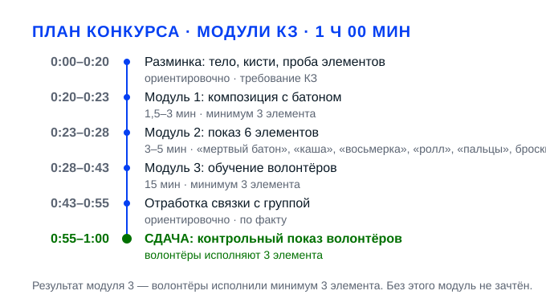
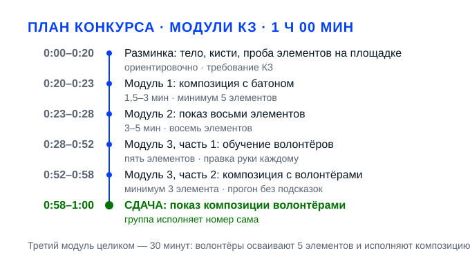
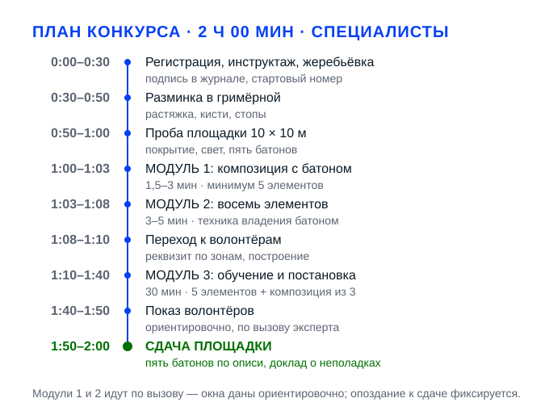

Помощник тренера (Адаптивный твирлинг) (ФВ)
Задания ниже — официальные файлы «Абилимпикс» (источник: abilympics-russia.ru), разложенные по категориям. Решения написаны по тексту задания, регламенту и критериям оценки; в них указано, что именно проверяет эксперт.
Школьник
14–16 лет, базовый уровень заданияВ официальном файле категории не разделены отдельными разделами — приводим задание целиком; различия по категориям смотрите в таблице модулей.
Пошаговое решение
Конкурсное задание школьника в компетенции «Помощник тренера (Адаптивный твирлинг)» состоит из трёх модулей, и каждый проверяет своё умение. В первом вы показываете подготовленную танцевальную композицию с батоном под минусовую фонограмму: полторы–три минуты сцены, в которых должно быть не меньше трёх элементов твирлинга. Во втором демонстрируете технику владения батоном — шесть элементов, среди них «мёртвый батон», «каша», «восьмёрка», «ролл», «пальцы» и невысокие броски, на это отводится три–пять минут. Третий модуль самый непривычный: за пятнадцать минут нужно научить волонтёров, которые держат батон впервые, минимум трём элементам из показанных, и эксперт смотрит не на вашу технику, а на то, сумели ли волонтёры реально что-то исполнить. Ошибка большинства участников в том, что они готовят только выступление и не готовят урок: композиция проходит ярко, а на третьем модуле время сгорает на объяснениях. Поэтому дальше работа разложена на пять задач: подготовка реквизита и тела, композиция, шесть элементов, обучение группы и финальная сдача.

Задача 1. Подготовить реквизит, костюм и тело к выходуДо старта · ориентировочно 20 минут
Пока эксперты не назвали ваш номер, у вас есть примерно двадцать минут, и они решают больше, чем кажется. За это время нужно убедиться, что батон не разболтан и не скользит, что костюм совпадает с названием композиции и не мешает вращениям, а кисти и плечевой пояс разогреты до состояния, в котором «мёртвый батон» держится без подхватов. Здесь не набирают баллов напрямую, но здесь закладывается всё остальное: холодная кисть теряет батон на первом же обороте, а скользкий стержень превращает уверенную «восьмёрку» в погоню за улетающим реквизитом.
Действие 1.1. Проверить и подогнать батон
Шаг 1.1.1
Берём батон в руки и проходим его по всей длине: большой палец скользит по стержню от одного наконечника к другому. Смотрим на три вещи — нет ли трещин и вмятин на стержне, плотно ли сидят резиновые наконечники, не стёрта ли обмотка в месте хвата. Наконечник, который проворачивается вокруг оси или снимается с усилием пальцев, подтягиваем или меняем сразу: на броске он улетит отдельно от батона. Обмотку в зоне хвата протираем сухой тканью, а если она лоснится от крема для рук — обезжириваем салфеткой со спиртом.
В перечне оборудования батон идёт как личный реквизит участника, до пяти штук, и отвечает за его состояние сам участник. Эксперт в модуле техники владения смотрит на непрерывность вращения: если батон «клюёт» или наконечник гуляет, элемент читается как сорванный, и балл за технику снижается, даже когда движение выполнено правильно. Кроме того, болтающийся наконечник — это риск для тех, кто стоит рядом на площадке минимум десять на десять метров.
Покрутите батон в кисти на малой амплитуде и послушайте: постороннего стука и щелчка быть не должно. Прокрутите наконечник пальцами — он не должен проворачиваться. Проведите ногтем по стержню поперёк: зацепок и трещин нет, поверхность ровная.
Самая частая ошибка — осмотреть батон глазами и не проверить наконечники руками. Внешне всё цело, но на первом же невысоком броске наконечник уходит в сторону, батон теряет баланс и падает, а на подбор уходит время модуля. Вторая ошибка — оставить лоснящуюся обмотку: батон начинает прокручиваться в ладони раньше, чем вы задали вращение, и «каша» рассыпается.
Эксперт оценивает не сам батон, а поведение участника с реквизитом: подошёл ли он к проверке осознанно или схватил первый попавшийся. Отдельно фиксируется, останавливается ли работа из-за реквизита внутри модуля — такие остановки видны в протоколе.
Шаг 1.1.2
Проверяем длину и баланс. Ставим батон вертикально на пол, придерживая за верхний конец: для школьника удобна длина, при которой батон доходит примерно до середины груди. Кладём его на раскрытую ладонь точно по центру — батон должен лежать горизонтально, без перевеса в сторону одного наконечника. Затем берём его хватом на ладонь шириной в два пальца от центра и делаем десять оборотов «мёртвого батона»: если приходится подхватывать, хват смещён.
В композиции и в показе шести элементов батон вращается в разных плоскостях, и центровка решает, удержится ли он в кисти. Смещённый центр тяжести заставляет подхватывать реквизит на каждом третьем обороте — эксперт видит это как нестабильную технику и снижает оценку за владение батоном. Правильный хват экономит силы: за пятнадцать минут третьего модуля кисть устаёт заметно, и запас прочности нужен.
Батон лежит на ладони ровно, не заваливается. Десять оборотов подряд проходят без подхвата и без смещения хвата к наконечнику. Если хват уезжает — сдвиньте его на полсантиметра и повторите пробу.
Типичная ошибка — держать батон за самый конец, «чтобы удобнее было крутить кистью»: на первом же обороте центр уходит, батон описывает конус и вылетает из руки. Вторая ошибка — взять слишком длинный батон: он задевает предплечье и пол на низких вращениях, и элемент выглядит рваным.
Смотрит на первые секунды модуля техники: если участник сразу уверенно держит центр, дальше он оценивает движение, а не борьбу с реквизитом. Нестабильный хват читается сразу и переносится на всю оценку модуля.
Шаг 1.1.3
Готовим второй батон и помпон и раскладываем их у границы площадки, а не в гримёрке. Второй батон ставим вертикально у стойки или кладём на стул так, чтобы его было видно с точки выхода на сцену и чтобы он не лежал на проходе. Помпон кладём рядом, наконечником к себе, чтобы взять его одним движением, не наклоняясь. Свой основной батон в это время держим в руке или кладём туда, откуда заберём его без поиска.
Правила разрешают участнику принести до пяти батонов, и это не формальность: замена реквизита внутри модуля не запрещена, но время на неё не добавляют. Когда батон улетает за площадку, выигрывает тот, у кого запасной лежит в двух шагах, а не тот, кто бежит в гримёрку. Помпон нужен, если композиция его использует, и его отсутствие в нужную секунду ломает рисунок номера.
Встаньте на точку выхода и посмотрите: запасной батон виден, до него не больше двух шагов, он не мешает проходу экспертов и волонтёров. Помпон на месте и не укатился под мебель. Всё это проверено до вызова, а не в момент сбоя.
Ошибка — сложить запасной реквизит в сумку в гримёрке: в момент потери батона вы теряете не секунды, а минуту, и это уже вычтено из композиции. Вторая ошибка — положить запасной батон на пол поперёк прохода: его сбивают, и он приходит в негодность до того, как понадобится.
Эксперт отмечает готовность реквизита при входе на площадку. Если замена происходит спокойно и без остановки номера, это работает в пользу участника; суета и поиск читаются как неподготовленность.
Действие 1.2. Собрать сценический образ под название
Шаг 1.2.1
Надеваем костюм и проверяем его на движение: поднимаем руки вверх, делаем два оборота корпусом, наклоняемся. Костюм не должен тянуть в плечах, рукав не должен съезжать на кисть и закрывать хват, а подол — путаться в ногах на поворотах. Если костюм надет впервые, прогоните в нём всю композицию целиком: то, что не мешает стоя, мешает на «восьмёрке» и на низком броске.
В конкурсном задании прямо сказано, что композиция должна соответствовать названию, а выполнение предполагает наличие костюма для создания сценического образа. Эксперт оценивает целостность номера: музыка, движение и внешний вид должны читаться как одно высказывание. Костюм, который мешает движению, снижает и впечатление, и технику — сорванный элемент спишут на участника, а не на рукав.
Пройдитесь в костюме перед зеркалом: рукав не сползает на пальцы, пояс не давит, обувь не скользит по полу площадки. Сделайте пробный оборот с батоном — ничего не зацепилось и не звякнуло.
Частая ошибка — надеть красивый, но тесный костюм: в нём невозможно поднять плечо, а именно плечо даёт амплитуду «мёртвому батону». Вторая — длинные свободные рукава или шарф: батон цепляется за ткань и вылетает, причём выглядит это как грубая техническая ошибка.
Эксперт смотрит на соответствие образа названию в первые секунды композиции и отдельно — на опрятность: мятая ткань, сползший пояс и обувь не по образу читаются как небрежность.
Шаг 1.2.2
Обувь — закрытая, с нескользящей подошвой, проверенная на том покрытии, которое лежит на площадке. Волосы убираем так, чтобы они не падали на лицо при наклоне и не цеплялись за батон: тугая резинка, при необходимости шпильки и лак. Снимаем кольца, браслеты, длинные серьги и часы: они мешают хвату и могут поцарапать реквизит. Ногти коротко подстрижены, без длинного покрытия, потому что на «пальцах» батон катится по подушечкам.
Требования охраны труда в задании отдельным блоком описывают поведение на площадке, и нескользящая обувь — часть этих требований: пол в спортивном зале или на сцене гладкий, а падение с вращающимся батоном в руке опасно и для участника, и для окружающих. Украшения — вторая причина: на элементах с перекатом они меняют траекторию батона, и «ролл» срывается.
Проверьте подошву на полу площадки коротким скользящим шагом — она держит. Волосы не выбиваются при наклоне головы вниз. На руках нет ничего, что выступает над кожей. Попросите волонтёра посмотреть со спины.
Ошибка — выйти в обуви на тонкой кожаной подошве: на развороте нога едет, и участник ловит равновесие вместо элемента. Вторая — оставить кольцо или часы: батон на перекате бьётся о металл, отскакивает и теряется.
Эксперт фиксирует безопасность и опрятность до старта композиции. Нарушение по обуви или украшениям обсуждается с главным экспертом, и это влияет на допуск к выполнению модуля.
Шаг 1.2.3
В гримёрке оставляем только то, что понадобится: воду, полотенце, запасные шпильки, второй батон, если он не у площадки. Сумку и уличную обувь убираем под стул или в шкаф, чтобы не спотыкаться. Заранее решаем, где оставите телефон — его на площадку проносить нельзя, электронные мобильные устройства в перечне запрещённых.
Электронные устройства прямо запрещены на площадке, и попытка пронести телефон в кармане костюма — это разговор с экспертом в самый неподходящий момент. Порядок в гримёрке экономит время на переодевание и переключение: после третьего модуля вам нужно будет быстро выйти к экспертам, и поиск вещей съест минуты сдачи.
На площадке при вас только реквизит и костюм. В гримёрке вещи собраны в одном месте, ничего не разбросано по стульям. Телефон лежит в сумке и выключен или переведён в беззвучный режим.
Ошибка — положить телефон в карман костюма «на всякий случай»: его заметят, и объяснение займёт время конкурса. Вторая — разбросанные вещи: после выступления приходится искать обувь, и участник выходит к экспертам последним.
Эксперты проверяют соблюдение запретов на площадке и в комнате участников. Замеченное устройство фиксируется, и дальше решение принимает главный эксперт.
Действие 1.3. Разогреть тело и кисти
Шаг 1.3.1
Начинаем с общей части: восемь–десять медленных наклонов и поворотов головы, круговые движения плечами вперёд и назад по десять раз, вращение руками в локтях и кистях. Дальше — таз и колени: по десять круговых движений в каждую сторону, затем восемь–десять неглубоких приседаний с прямой спиной. Заканчиваем наклонами к ногам и растяжкой задней поверхности бедра, задерживаясь в каждом положении на десять–пятнадцать секунд без пружинящих рывков.
В задании отдельно сказано: до начала исполнения участник должен выполнить растяжку и размять кисти и ноги. Это не ритуал, а условие оценки: неразогретая связка не даёт амплитуды, а холодная мышца хуже держит равновесие на поворотах. Композиция длится полторы–три минуты, и если тело не готово, к её середине дыхание сбивается и рисунок номера рассыпается.
Кожа сухая, но тёплая, плечи двигаются свободно, наклон вперёд получается глубже, чем в начале. При приседании колени идут в стороны, а не внутрь. Боли нет ни в одном положении — если появилась, движение убираем.
Самая частая ошибка — «размяться» двумя наклонами за тридцать секунд перед вызовом: тело остаётся холодным, и первый же поворот в композиции делается на жёстких ногах. Вторая — растяжка с рывками до боли: мышца отвечает напряжением, и амплитуда, наоборот, падает.
Эксперт видит подготовку по тому, как участник входит в первое движение: свободно или с зажимом. Отдельно оценивается соблюдение требования о разминке — оно входит в общую культуру выполнения задания.
Шаг 1.3.2
Отдельно разогреваем кисти, потому что в твирлинге они работают больше всего. Двадцать вращений в лучезапястном суставе в каждую сторону, затем по десять сжиманий и разжиманий кулака с усилием, потом «веер» — разводим и сводим пальцы с сопротивлением второй руки. Полезно покатать в ладонях массажный мяч или обычный теннисный: тридцать секунд перекатов от основания ладони к пальцам разогревают мелкую моторику лучше любых вращений.
В описании компетенции твирлинг прямо назван сочетанием мелкой и крупной моторики, и все шесть элементов модуля техники держатся на кисти: «каша» и «пальцы» выполняются почти без участия плеча. Разогретая кисть быстрее и точнее, а главное — меньше устаёт: за пятнадцать минут обучения волонтёров батон приходится прокручивать сотни раз.
Кисти тёплые, пальцы двигаются по одному, вращение в запястье идёт без хруста и боли. Сожмите кулак: усилие есть, но напряжения в предплечье нет. Если предплечье каменное — добавьте ещё минуту перекатов.
Ошибка — размять только плечи и ноги, считая кисти мелочью: на первом же «мёртвом батоне» запястье «закусывает», и батон уходит в сторону. Вторая — разогревать кисти до усталости, крутя батон без остановки: к модулю техники участник приходит с забитым предплечьем.
На технике кисти видно, разогрета она или нет: движения либо мягкие и непрерывные, либо резкие, с провалами. Эксперт оценивает непрерывность вращения как отдельный признак качества.
Шаг 1.3.3
Делаем короткую пробу: по три оборота «мёртвого батона», по две «восьмёрки» и по одному низкому броску — ровно столько, чтобы почувствовать реквизит и не устать. Затем прогоняем первые восемь счётов композиции без музыки, чтобы вспомнить точку входа. Заканчиваем дыханием: четыре счёта вдох, шесть — выдох, повторить пять раз, опуская плечи на выдохе.
Проба нужна, чтобы проверить реквизит в деле: после разминки руки становятся влажнее и хват ведёт себя иначе, чем на холодную. Восемь счётов входа снимают главный риск композиции — потерю первого элемента из-за забытой точки начала. Дыхание снижает пульс и убирает дрожь, которая особенно заметна на «пальцах».
Три оборота проходят без подхвата, «восьмёрка» возвращается в исходную точку, бросок ловится в ту же руку. Первый элемент композиции начинается без паузы на раздумье. Пульс спокойный, руки не дрожат.
Ошибка — прогнать всю композицию целиком «на пробу»: силы уходят до старта, а на сцене не хватает дыхания на финал. Вторая — сразу начинать с бросков: неразогретое запястье не гасит приём, и батон отскакивает от ладони.
Эксперт не оценивает разминку по элементам, но видит её результат: уверенный вход в композицию и стабильный хват с первой секунды модуля.
Задача 2. Показать композицию с батоном (модуль 1)Модуль 1 · 1,5–3 минуты · минимум 3 элемента
Первый модуль — это полторы–три минуты сцены под минусовую фонограмму, и в них должно быть не меньше трёх элементов твирлинга. Эксперт смотрит сразу на три вещи: совпадает ли номер со своим названием, укладывается ли он в отведённое время и держится ли техника на протяжении всей композиции, а не только в первые двадцать секунд. Здесь выигрывают не самые сложные трюки, а цельность: понятный образ, чистая привязка движений к музыке и отсутствие провалов между элементами. Поэтому сначала собираем номер, потом сводим его с фонограммой, и только потом выходим на площадку.
Действие 2.1. Собрать композицию под название
Шаг 2.1.1
Берём название композиции и выписываем на лист три слова, которые оно вызывает: например, «ветер», «полёт», «тишина». Дальше подбираем под эти слова три–четыре элемента-опоры из тех, что вы держите уверенно, и распределяем их по времени: первый — на входе, второй — в середине, третий — в кульминации. Слабые элементы в номер не берём вообще: композиция оценивается целиком, и один срыв тянет вниз впечатление от всего номера.
Задание требует, чтобы композиция соответствовала названию, и эксперт проверяет это первым делом: если номер называется «Полёт», а участник две минуты крутит батон у бедра, соответствие не читается. Три уверенных элемента дают минимум, который требует модуль, и оставляют запас: даже если один не получится, два других закроют требование.
Прочитайте название и покажите номер человеку, который его не видел: спросите, какой образ он увидел. Если ответ совпадает с вашими тремя словами — образ собран. Элементов в списке не меньше трёх, и каждый вы делаете без подхвата десять раз подряд.
Ошибка — вставить в номер самый сложный элемент, который получается через раз, «чтобы удивить»: на сцене он рассыпается, и дальше участник теряет рисунок. Вторая — собрать номер из одинаковых вращений: три элемента формально есть, но композиция выглядит однообразной и не соответствует названию.
Эксперт сверяет название с тем, что видит, в первые тридцать секунд. Отдельно считает количество элементов — минимум три, и считает только те, что выполнены чисто.
Шаг 2.1.2
Выстраиваем драматургию в три части: вход, развитие, финал. На входе — статичная поза с батоном в две–три секунды, чтобы эксперт успел считать образ. В развитии элементы идут по нарастанию: сначала спокойные вращения в кисти, потом «восьмёрка» и перекаты, ближе к концу — бросок. Финал — короткая остановка с чётко зафиксированной позой, а не обрыв движения на середине оборота.
В задании сказано, что музыкальное сопровождение должно быть грамотным, с драматургическим развитием, и то же требование переносится на сам номер: композиция без развития читается как набор упражнений. Фиксированные вход и финал дают эксперту точки, по которым он оценивает рисунок, а участнику — опору, если что-то пошло не по плану.
Покажите номер и отметьте, где начинается развитие: если после входа сразу идёт кульминация, номера нет. В финале вы стоите неподвижно не меньше секунды, и поза читается с последнего ряда.
Ошибка — начать движение с первого счёта музыки, без входа: зритель и эксперт не успевают включиться, и номер выглядит обрывком. Вторая — закончить на движении и убежать: финал не считается, композиция выглядит незавершённой.
Эксперт оценивает целостность: есть ли завязка, развитие и точка. Номер, который начинается и заканчивается одинаково ровно, оценивается ниже, даже при чистой технике.
Шаг 2.1.3
Сверяем хронометраж. Включаем фонограмму и снимаем время от первого движения до финальной позы: результат должен попадать в коридор от полутора до трёх минут. Если номер длиннее, убираем не элементы, а связки между ними — по две–четыре секунды в каждом переходе. Если короче полутора минут, добавляем проигрыш с перекатом батона по предплечью, а не новый сложный трюк.
Время модуля задано жёстко: полторы–три минуты. Недобор и перебор одинаково плохи — короткий номер не даёт раскрыть образ, а длинный обрывают, и финал остаётся не показанным. Сокращение за счёт связок сохраняет элементы, которые уже отработаны, и не требует переучивать рисунок.
Замер сделан дважды, и оба раза время в коридоре. Разница между прогонами не больше пяти–семи секунд. Проверьте, что при этом ни один элемент не выпал из номера и финальная поза на месте.
Ошибка — измерять время «на глаз»: на сцене из-за волнения темп ускоряется, и номер съезжает к полутора минутам, а элементы смазываются. Вторая — сокращать за счёт элементов, чтобы уложиться: тогда не добирается минимум из трёх.
Эксперт фиксирует время по факту выступления, от первого движения до финальной точки. Выход за коридор отмечается в протоколе.
Действие 2.2. Свести номер с минусовой фонограммой
Шаг 2.2.1
Проверяем саму запись: слушаем её целиком в тех наушниках или на той колонке, где будете репетировать, и отмечаем, нет ли щелчков, обрывов, тихого вступления и посторонних голосов. Файл должен быть именно минусовой фонограммой, без вокала. Сдаём его в организационный комитет по электронной почте не позднее чем за десять рабочих дней до начала мероприятия и сохраняем копию на флешке, которую приносите с собой.
Задание прямо указывает срок — десять рабочих дней, и указывает, что сопровождение предоставляют участники. Если файл не принят вовремя, номер может остаться без музыки, а это обнуляет первый модуль целиком. Качественная запись — часть критерия: щелчки и провалы громкости эксперт слышит так же хорошо, как вы.
Подтверждение отправки сохранено, файл открывается на другом устройстве и звучит так же. Копия на флешке проверена на том же плеере, который будет работать на площадке, если это возможно.
Ошибка — отправить файл в последний день и не проверить подтверждение: письмо теряется, и о проблеме узнают за час до выступления. Вторая — принести запись только на телефоне, который на площадку проносить нельзя.
Эксперты проверяют наличие и качество фонограммы до старта. Отсутствие файла или вокал поверх минуса фиксируется как нарушение условий задания.
Шаг 2.2.2
Размечаем музыку: слушаем и отмечаем сильные доли, начало фраз и точку кульминации. К каждой сильной доле привязываем конкретное движение — вход совпадает с первым акцентом, «восьмёрка» начинается на счёт «два» второй фразы, бросок идёт на кульминации. Разметку записываем счётом, а не словами «где-то здесь»: «раз-два-три-четыре, на четыре бросок».
Совпадение движения с музыкой — то, что отличает композицию от упражнений под музыку, и это отдельный признак в оценке исполнительского мастерства. Привязка к счёту делает номер повторяемым: на сцене вы не думаете, когда начинать, а просто считаете, и это спасает при волнении.
Прогон без музыки: вы называете счёт и делаете движение, и это совпадает с разметкой. Прогон с музыкой: элементы попадают в те же акценты, что отмечены на записи.
Ошибка — строить номер «по ощущению»: на площадке другой звук и другая акустика, ощущение сбивается, и бросок уходит между долями. Вторая — привязать к музыке всё, включая мелкие шаги: номер становится жёстким и теряет дыхание.
Эксперт слушает, попадает ли участник в акценты. Систематическое расхождение с музыкой снижает оценку за исполнительское мастерство независимо от техники.
Шаг 2.2.3
Делаем три полных прогона подряд с музыкой, каждый — с финальной позой и выходом, как на площадке. Первый прогон технический: следим за элементами. Второй — на попадание в музыку. Третий — «как на конкурсе»: без остановок, без поправок, с полной отдачей. Между прогонами отдых не больше двух минут, чтобы не остыть.
Номер, отработанный по частям, на сцене распадается: тело не помнит переходов, и на каждом стыке появляется пауза. Три прогона дают три разных вида контроля — технику, музыкальность и выносливость, и именно третий показывает, хватает ли дыхания на финал композиции в три минуты.
В третьем прогоне нет остановок и подхватов, дыхание сбивается не раньше последней трети, финальная поза держится. Время третьего прогона в коридоре полутора–трёх минут.
Ошибка — останавливаться на ошибке и начинать заново: на конкурсе такой возможности нет, и участник теряется при первом сбое. Вторая — делать десять прогонов подряд: к конкурсу тело забито, а свежести нет.
На площадке видно, отработан ли номер целиком: переходы идут без пауз, участник не ищет точку начала. Это читается как готовность композиции.
Действие 2.3. Исполнить композицию на площадке
Шаг 2.3.1
Выходим на площадку и встаём на точку входа — не в центре «на глаз», а там, где стоит ваш первый рисунок: обычно это два–три шага от задней границы, чтобы оставалось место на движение вперёд. Ставим ноги на ширину плеч, распределяем вес равномерно, батон берём в рабочую руку и опускаем вниз. Смотрим в зал, находим глазами экспертов, ждём кивка или объявления и только тогда принимаем стартовую позу.
Площадка не меньше десяти на десять метров, и точка входа решает, хватит ли места на бросок и на продвижение: если начать у самой границы, часть номера придётся исполнять на месте. Пауза перед стартом нужна и участнику, и экспертам — она показывает, что номер начинается осознанно, и даёт время зафиксировать исходное положение.
До границы площадки спереди не меньше трёх шагов, сзади — не меньше двух. Вес распределён, дыхание ровное, руки не дрожат. Вы стоите неподвижно и смотрите в зал, а не в пол.
Ошибка — выскочить на площадку и сразу начать крутить батон, пока не включили музыку: первые секунды уходят впустую, и вход в номер потерян. Вторая — встать слишком близко к краю: бросок улетает за границу, и участник бежит за реквизитом.
Эксперт отмечает исходное положение и готовность. Собранная стойка и спокойный взгляд читаются как уверенность, и это влияет на общее впечатление от номера.
Шаг 2.3.2
Начинаем с первым акцентом музыки и ведём номер по разметке, не ускоряясь. Если элемент не получился — батон ушёл в сторону или не хватило оборота — не останавливаемся и не смотрим на него: подхватываем движение следующего счёта, как будто так и задумано, а батон забираем на ближайшем переходе. Дыхание держим ровным, плечи опущенными, лицо работает на образ.
Оценка идёт за композицию целиком, а не за отдельный элемент: остановка ради упавшего батона рвёт рисунок и стоит дороже, чем один неточный элемент. Способность продолжить номер после сбоя — это и есть то, что отличает исполнителя от человека, повторяющего упражнение, и эксперт смотрит именно на реакцию.
Номер прошёл без остановок. Если был сбой, следующий элемент начался вовремя, и в рисунке не появилось паузы длиннее одного счёта. Дыхание не сбилось в первой половине.
Ошибка — остановиться, поднять батон и начать заново с того же места: время модуля тратится, рисунок рассыпается, и эксперт видит потерю контроля. Вторая — начать компенсировать сбой ускорением и «догонять» музыку рывком.
Эксперт специально смотрит на поведение после сбоя. Сохранённый рисунок оценивается выше, чем чистый элемент в ущерб целостности номера.
Шаг 2.3.3
Финал отрабатываем отдельно: последний элемент заканчивается в заранее выбранной позе, вы держите её не меньше секунды после последней ноты, опускаете батон и только потом уходите. Уходим спокойным шагом назад или в сторону, не поворачиваясь спиной к экспертам в первую секунду. Если предусмотрен поклон, он идёт после фиксации позы, а не вместо неё.
Финальная точка — то, что запоминается: без неё номер выглядит оборванным, и это снижает оценку за композицию. Секунда неподвижности нужна, чтобы эксперт успел зафиксировать позу и оценить рисунок; уход спиной сразу после движения читается как неуверенность.
Поза держится на счёте «раз-два» после последней ноты, батон в ней на месте. Уход не пересекает площадку по диагонали. Со стороны видно, где номер закончился.
Ошибка — убежать с площадки на последнем движении: финал не читается, и композиция кажется недоделанной. Вторая — задержаться в позе слишком долго, пять–семь секунд: это уже воспринимается как заминка.
Эксперт фиксирует финальную позу как точку окончания номера — по ней считается время композиции и оценивается завершённость.
Задача 3. Показать шесть элементов твирлинга (модуль 2)Модуль 2 · 3–5 минут · 6 элементов
Второй модуль — это технический показ: три–пять минут, за которые нужно исполнить шесть элементов, названных в задании, — «мёртвый батон», «кашу», «восьмёрку», «ролл», «пальцы» и невысокие броски. Здесь оценивают не артистизм, а чистоту: непрерывность вращения, плоскость, в которой идёт батон, и то, насколько элемент читается со стороны. Порядок показа стоит выстроить от простого к сложному, чтобы кисть успела разогреться и чтобы эксперт видел нарастание, а не мешанину. И помните: этот же набор элементов вы будете показывать волонтёрам в третьем модуле, поэтому каждый из шести должен быть понятен не только вашим рукам, но и вашему языку.
Действие 3.1. Выполнить вращения в кисти
Шаг 3.1.1
«Мёртвый батон» начинаем из положения стоя, ноги на ширине плеч, рабочая рука согнута в локте под девяносто градусов, локоть прижат к корпусу. Батон берём за центр, задаём вращение кистью так, чтобы он шёл в горизонтальной плоскости — параллельно полу, на уровне груди. Вращение должно быть ровным, без качания концов: именно за это элемент и назвали «мёртвым». Делаем не меньше восьми оборотов, потом переводим батон над головой и делаем ещё восемь.
«Мёртвый батон» — первый из шести элементов модуля техники и база для остальных: в нём отрабатывается ровная плоскость вращения и работа кисти без участия плеча. Если концы батона качаются, эксперт видит это как потерю контроля, и элемент не зачитывается. Ровное вращение в кисти — то, что потом держит «кашу» и «восьмёрку».
Со стороны батон описывает ровный круг, концы идут по одной линии, а не восьмёркой. Локоть не поднимается и не гуляет. Восемь оборотов идут подряд без подхвата, лицо спокойное.
Ошибка — крутить всей рукой от плеча: батон уходит в косую плоскость, начинает «клевать» и вылетает. Вторая — сжимать батон слишком сильно: кисть зажимается, вращение становится резким, и после четырёх оборотов рука устаёт.
Эксперт смотрит на плоскость вращения и на непрерывность: считаются обороты без подхвата. Качающиеся концы фиксируются как техническая неточность.
Шаг 3.1.2
«Каша» делается в вертикальной плоскости перед корпусом: батон вращается быстро и с малой амплитудой, кисть работает как продолжение предплечья. Ставим руку перед собой на уровне пояса, задаём вращение кистью и ускоряем до состояния, когда батон сливается в сплошной круг. Делаем три подхода по пять–семь секунд, между подходами встряхиваем кисть, чтобы снять напряжение.
«Каша» — второй обязательный элемент и главный тест на мелкую моторику, которую в описании компетенции называют одной из основ твирлинга: здесь работает только кисть. Быстрое вращение с малой амплитудой показывает, насколько участник владеет запястьем, и именно этот элемент чаще всего выполняют с провалом темпа.
Круг получается ровным и плотным, без провалов скорости: батон не «спотыкается» на каждом обороте. Амплитуда небольшая — концы не выходят дальше тридцати сантиметров от центра. Кисть не горит после подхода.
Ошибка — разгонять «кашу» рукой от локтя: круг становится большим и рваным, и элемент перестаёт читаться как «каша». Вторая — крутить до отказа: предплечье забивается, и на следующих элементах кисть не слушается.
Эксперт оценивает плотность и скорость круга, а также то, удерживается ли темп до конца показа. Провисание в середине видно сразу.
Шаг 3.1.3
«Восьмёрка» — перекладка батона из руки в руку так, чтобы его центр описывал лежащую восьмёрку перед корпусом. Начинаем с правой руки на уровне груди, переводим батон по нижней дуге в левую, из левой — по верхней дуге обратно. Кисти встречаются в средней линии, но не сталкиваются: правая уходит чуть вперёд, левая чуть назад. Делаем четыре полных восьмёрки без остановки, затем меняем направление.
«Восьмёрка» — единственный из шести элементов, где работают обе руки, и она показывает координацию: задание оценивает владение батоном как целое, а не только одной кистью. Ровная восьмёрка даёт красивую линию в композиции, поэтому её часто ставят в связки между сложными элементами.
Восьмёрка получается симметричной: обе петли одинакового размера, центр батона идёт по одной траектории. Кисти не сталкиваются, ритм ровный. После четырёх кругов батон в той же руке, с которой начали.
Ошибка — делать восьмёрку только кистью, не включая предплечье: петли получаются разного размера, и рисунок разваливается. Вторая — ловить батон второй рукой с ударом: слышен щелчок, элемент выглядит грубым.
Эксперт смотрит на симметрию петель и на плавность перехода между руками. Рваная восьмёрка считается невыполненной, даже если батон не упал.
Действие 3.2. Выполнить перекаты и броски
Шаг 3.2.1
«Ролл» — перекат батона по руке без захвата. Кладём батон на тыльную сторону кисти у основания большого пальца, чуть подталкиваем и даём ему прокатиться по предплечью к локтю, а затем обратным движением вернуть к кисти, слегка поднимая локоть. Рука при этом остаётся почти прямой, ладонь повёрнута вниз. Делаем по три переката в каждую сторону, каждый — не быстрее двух секунд.
«Ролл» показывает умение работать с батоном без захвата, то есть чувствовать его вес и инерцию, а не только сжимать. В модуле техники это отдельный элемент, и он же чаще других используется в адаптивных группах: перекат безопаснее броска и не требует силы хвата, поэтому помощник тренера должен владеть им безупречно.
Батон катится плавно, не подпрыгивая на костяшках, и доходит до локтевого сгиба, не падая. Возврат идёт по той же линии. Кожа не краснеет — значит, давление распределено правильно.
Ошибка — прижимать батон к руке: он останавливается на середине предплечья, и перекат не получается. Вторая — начинать слишком близко к пальцам: батон скатывается вниз и падает, вместо того чтобы идти к локтю.
Эксперт оценивает непрерывность и длину переката: считается перекат, который проходит всю руку без остановки и без поддержки второй рукой.
Шаг 3.2.2
«Пальцы» — вращение батона на подушечках пальцев. Кладём батон на раскрытую ладонь, затем мягко подталкиваем его так, чтобы он перекатился на указательный и средний пальцы и вращался на них, почти не касаясь ладони. Пальцы держим чуть согнутыми, работаем подушечками, а не ногтями. Начинаем с двух–трёх оборотов, доводим до пяти–шести подряд.
«Пальцы» — самый тонкий элемент из шести и прямой тест на мелкую моторику, которую описание компетенции называет основой развития ребёнка. В работе помощника тренера этот элемент особенно ценен: он не требует размаха и хорошо подходит для детей с ограничениями подвижности, поэтому показывать его нужно чисто.
Батон вращается на двух пальцах, ладонь почти не участвует. Пять оборотов идут подряд без подхвата. Пальцы не зажаты, ногти не касаются реквизита.
Ошибка — цеплять батон ногтями: вращение получается скребущим и нестабильным, а на длинном ногте элемент вообще срывается. Вторая — держать пальцы прямыми: батон скатывается с подушечек и падает.
Эксперт смотрит крупно на кисть: работает ли батон именно на пальцах или участник просто удерживает его в ладони. Второе не зачитывается как элемент.
Шаг 3.2.3
Невысокие броски: подбрасываем батон на тридцать–пятьдесят сантиметров, без вращения или с половиной оборота, и ловим в ту же руку той же плоскостью. Толчок идёт от кисти, локоть почти не двигается, взгляд держим на верхней точке полёта. Делаем пять бросков подряд, затем пять с ловлей другой рукой. Высота — не больше уровня плеча, чтобы не привлекать броском внимания вместо техники.
Невысокие броски — шестой элемент модуля и единственный, где батон полностью отрывается от руки: он показывает расчёт траектории и готовность поймать реквизит, то есть именно то, что понадобится помощнику тренера в группе. Низкая высота выбрана не случайно: на площадке рядом работают другие люди, и высокий бросок — это риск попадания.
Батон возвращается в ту же руку, в ту же плоскость, без шага в сторону. Пять бросков подряд пойманы без подбора с пола. Верхняя точка не выше уровня плеча, ловля мягкая, без хлопка.
Ошибка — бросать выше головы «чтобы красивее»: ловля становится неточной, а батон улетает за спину. Вторая — ловить жёсткой ладонью: слышен удар, батон отскакивает, и элемент приходится повторять.
Эксперт оценивает точность возврата и мягкость ловли. Бросок, после которого участник делает шаг или наклон, считается неточным.
Действие 3.3. Показать элементы так, чтобы их увидели
Шаг 3.3.1
Выстраиваем порядок показа от простого к сложному: «мёртвый батон», «каша», «восьмёрка», «ролл», «пальцы», броски. Каждый элемент показываем трижды: первый раз в полную силу, второй — медленно, третий — в рабочем темпе. Между элементами делаем паузу в две–три секунды и остаёмся на месте, не переходя по площадке.
Модуль длится три–пять минут, и в этом окне нужно уместить шесть элементов плюс объяснения. Тройной показ — стандарт обучения: сначала целостный образ, потом разложение, потом возврат к темпу. Остановка между элементами нужна эксперту, чтобы зафиксировать границу: иначе два элемента сливаются и один из них не засчитывается.
Шесть элементов показаны по порядку, каждый трижды, границы читаются. Время показа укладывается в три–пять минут. Эксперт успевает записать каждый элемент отдельной строкой.
Ошибка — показать все шесть на скорости, без разложения: эксперт не успевает считать, и часть элементов идёт в минус. Вторая — затянуть показ за пять минут, объясняя каждый элемент: время модуля заканчивается, и последний элемент не засчитывается.
Эксперт ведёт протокол по элементам и смотрит, разделены ли они. Слитный показ без пауз снижает число зачтённых элементов.
Шаг 3.3.2
К каждому элементу готовим одну фразу-ключ, которая объясняет главное движение: для «мёртвого батона» — «крутит только кисть, локоть стоит», для «каши» — «маленький круг, быстро и без плеча», для «восьмёрки» — «перекладывай через центр, не лови». Проговариваем фразу сразу после показа, коротко, не перебивая движение. Следим, чтобы объяснение шло после, а не вместо показа.
Умение объяснить — суть компетенции помощника тренера: по заданию участник не просто исполняет шесть элементов, а показывает их группе и объясняет, как исполнять. Фраза-ключ делает элемент воспроизводимым для новичка, а эксперт слышит, понимает ли участник, что именно он делает руками. Без объяснения модуль выглядит как выступление, а не как работа помощника.
На каждый элемент есть одна короткая фраза, и она называет главное движение, а не всё сразу. Объяснение занимает пять–семь секунд. Человек, который слышит фразу, может повторить движение.
Ошибка — объяснять длинно, тремя предложениями с терминами: время уходит, а волонтёры всё равно не понимают. Вторая — объяснять во время движения: сбивается дыхание, и элемент получается хуже, чем вы умеете.
Эксперт слушает формулировки и оценивает, выделяет ли участник главное. Точная короткая фраза читается как тренерская грамотность.
Шаг 3.3.3
Показываем с учётом группы: встаём так, чтобы батон не был закрыт корпусом, и держим дистанцию два–три метра от ближайшего человека. Перед бросками проверяем зону вокруг — она должна быть свободна не меньше чем на два метра. Если в группе есть человек с нарушением слуха, показываем чуть медленнее и дублируем движение рукой, чтобы смысл читался без слов.
Компетенция адаптивная, и задание отдельно описывает требования к рабочим местам участников с разными нозологиями: для слабослышащих предусмотрена звукоусиливающая аппаратура и место для сурдопереводчика. Показ, который понятен без слов, — прямое следствие этих условий. Дистанция и свободная зона вокруг — требование безопасности, зафиксированное в разделе охраны труда.
Батон виден каждому в группе, никто не стоит к вам спиной. В радиусе двух метров нет людей и предметов, о которые может удариться реквизит. Движение читается без слов, если закрыть звук.
Ошибка — показывать, стоя вплотную к первому ряду: волонтёры видят только вашу спину, а бросок идёт им в лицо. Вторая — говорить, не глядя в группу: реакция теряется, и половина участников не понимает задание.
Эксперт оценивает работу с группой: видно ли движение всем, соблюдена ли дистанция, учтены ли особенности участников. Это входит в оценку модуля обучения волонтёров.
Задача 4. Научить волонтёров трём элементам (модуль 3)Модуль 3 · 15 минут · минимум 3 элемента
Третий модуль — тот, ради которого компетенция и называется «Помощник тренера». За пятнадцать минут вы должны научить волонтёров, которые, скорее всего, впервые держат батон, минимум трём элементам из показанных, и результат оценивается не по вашей технике, а по тому, что сумели сделать они. Это значит, что пятнадцать минут нужно распределить заранее: две минуты на организацию группы, по три–четыре минуты на каждый элемент, три минуты на отработку и одну на контрольный показ. Главная ошибка здесь — начать учить сразу, не поставив группу и не объяснив, что вообще происходит: волонтёры встают слишком близко друг к другу, батоны сталкиваются, и время уходит на разбор мелких сбоев вместо обучения.
Действие 4.1. Организовать группу за первые две минуты
Шаг 4.1.1
Начинаем с короткого обращения на десять–пятнадцать секунд: называем своё имя, говорим, что за пятнадцать минут группа освоит три элемента и в конце покажет их целиком. Сразу раздаём батоны — по одному на человека, наконечником к волонтёру, — и просим взять их за центр, а не за конец. Если батонов меньше, чем людей, делим на пары и объясняем, что работать будут по очереди: один крутит, второй смотрит и подсказывает.
Волонтёры приходят без подготовки, и первые тридцать секунд решают, будут они слушать или отвлекаться: понятная задача и реквизит в руках сразу включают группу в работу. Хват за центр с первой секунды экономит потом минуты: человек, взявший батон за конец, не сможет выполнить ни один элемент, и его придётся переучивать под таймером.
У каждого в руках батон, все держат его за центр. Группа смотрит на вас, а не по сторонам. Задача названа: три элемента и показ в конце. Прошло не больше двух минут.
Ошибка — начать объяснять элементы до того, как реквизит роздан: половина группы слушает вполуха, потому что ждёт батон. Вторая — дать батоны и не сказать, как держать: волонтёры хватают за наконечник, и первый же показ проваливается.
Эксперт смотрит на вход в модуль: сумел ли участник за две минуты собрать группу и объяснить задачу. Чёткое начало читается как тренерская подготовленность.
Шаг 4.1.2
Расставляем группу в шахматном порядке в две линии, интервал между людьми — не меньше двух метров, между линиями — полтора–два метра. Сами встаём так, чтобы вас видели все и чтобы вам были видны все: обычно это позиция перед группой, чуть сбоку, а не строго по центру. Проверяем, что за спинами последнего ряда есть свободное место и никто не стоит у стены или у края площадки.
Раздел требований к оснащению задаёт ширину прохода между рабочими местами не менее полутора метров, и в обучении это правило работает так же: на двух метрах человек спокойно вращает батон, не задевая соседа. Шахматный порядок нужен, чтобы каждый видел ваши руки, а не спину впереди стоящего. Свободное место за спинами — страховка от броска, который уходит назад.
Между людьми проходит взрослый человек, батоны соседей не пересекаются при вращении. Вам видно руки каждого. За последним рядом есть не меньше метра свободного пространства.
Ошибка — поставить группу плотной кучей «чтобы всем было слышно»: батоны сталкиваются, кто-то получает по руке, и дальше группа работает осторожно, боясь размахнуться. Вторая — встать в одну линию с группой: вас видят только крайние.
Эксперт оценивает организацию пространства как часть безопасности и методики. Скученная группа и удары реквизитом фиксируются.
Шаг 4.1.3
Выбираем для обучения три элемента из шести показанных, и выбор делаем до выхода на площадку. Берём те, где движение читается глазами и повторяется новичком за одно–два повторения: обычно это «мёртвый батон», «каша» и «ролл». «Пальцы» и броски оставляем на запас: они требуют тонкой моторики и точного расчёта. Если группа схватывает быстро, третий элемент меняем на «восьмёрку» и показываем её как бонус.
Задание требует, чтобы волонтёры исполнили минимум три элемента, и оценивается именно их результат. Элемент, который новичок не может повторить за три минуты, съедает время и не даёт зачёта, поэтому сложность подбирается под группу, а не под личные предпочтения. Запасной вариант нужен, чтобы не потерять темп, если группа окажется сильной.
Три элемента выбраны заранее, и вы можете назвать их по порядку. Каждый из них вы сами делаете чисто десять раз подряд. На каждый заложено три–четыре минуты.
Ошибка — учить «пальцам» или броскам с нуля: за три минуты новичок их не освоит, и в контрольном показе группа провалится. Вторая — менять элементы по ходу, глядя на группу: время уходит на метания, и ни один элемент не доводится до результата.
Эксперт отмечает, соответствуют ли выбранные элементы уровню группы. Удачный выбор виден по тому, что к концу модуля волонтёры действительно что-то исполняют.
Действие 4.2. Обучить трём элементам
Шаг 4.2.1
Первый элемент — «мёртвый батон» — показываем в три шага. Сначала целостно, пять–семь секунд, стоя к группе лицом. Потом разложенно: ставим локоть к корпусу, берём батон за центр и медленно прокручиваем два оборота, проговаривая «работает только кисть, локоть стоит». Затем просим группу повторить по команде «раз» и даём двадцать–тридцать секунд на попытку, обходя линию.
Первый элемент задаёт тон всему модулю: если группа сразу получает успешный опыт, дальше она работает смелее. Схема «показ — разложение — повторение» соответствует тому, как обучают в адаптивных группах, где важно не объяснить словами, а дать телу почувствовать движение. Двадцать–тридцать секунд на попытку — ровно столько, чтобы новичок понял принцип, но не устал.
Больше половины группы крутят батон хотя бы три оборота подряд. Ошибки однотипные — значит, объяснение работает. Вы успели подойти к каждому и сказать по одной подсказке.
Ошибка — показывать на полной скорости и сразу просить повторить: новичок видит размытый круг и не понимает, что делать. Вторая — объяснять дольше, чем показывать: группа замирает с поднятыми руками и теряет интерес.
Эксперт слушает объяснение и смотрит, работает ли группа. Если после первого элемента большая часть волонтёров крутит батон, методика сработала.
Шаг 4.2.2
Второй элемент — «кашу» — даём сразу после первого, пока группа в движении. Показываем маленький быстрый круг перед корпусом на уровне пояса, проговариваем «маленький круг, быстро, без плеча» и просим повторить без скорости: сначала точность, потом темп. Даём тридцать секунд, затем просим сделать пять оборотов в среднем темпе и остановиться.
«Каша» напрямую продолжает «мёртвый батон»: там и там работает кисть, и навык переносится, поэтому второй элемент осваивается быстрее. Требование сначала точности, потом темпа — базовый принцип обучения движению: быстрый и кривой круг новичок потом не исправит, а медленный и ровный доводится до скорости за две попытки.
Волонтёры делают по три–пять оборотов, круг небольшой и не разваливается. Плечо не подключается: со стороны видно, что рука двигается от локтя вниз. Темп ровный, без рывков.
Ошибка — разрешить сразу гнать темп: круги получаются большими и рваными, и элемент не читается. Вторая — не поправить тех, кто крутит от плеча: человек закрепляет неверное движение, и на контрольном показе его элемент не засчитывается.
Эксперт смотрит, исправляет ли участник ошибки в группе или только показывает. Индивидуальная подсказка во время отработки — сильный признак тренерской работы.
Шаг 4.2.3
Третий элемент — «ролл» — даём как самый зрелищный и безопасный: батон катится по тыльной стороне кисти к локтю и обратно. Показываем на своей руке, затем просим положить батон на тыльную сторону кисти и, не сжимая, подтолкнуть его второй рукой. Даём сорок секунд и обходим группу: поправляем тех, кто прижимает батон, и тех, кто начинает перекат с пальцев.
«Ролл» не требует хвата и силы, поэтому он доступен почти любому волонтёру, включая людей с ограничениями подвижности кисти — а компетенция адаптивная, и это прямое попадание в её логику. Третий элемент нужен, чтобы набрать минимум из трёх, и лучше, если он будет самым надёжным: именно его группа покажет в конце.
Батон проходит по предплечью хотя бы до середины и возвращается. Никто не прижимает реквизит к руке. Больше половины группы делает перекат без падения батона на пол.
Ошибка — учить перекату на прямой напряжённой руке: батон останавливается на костяшках и падает. Вторая — не показать возврат: группа делает перекат к локтю и теряет батон за спиной.
Эксперт оценивает, доступен ли выбранный элемент группе. Перекат, который получается у большинства, читается как удачная методическая находка.
Шаг 4.2.4
Пока группа отрабатывает, идём по линии и даём по одной подсказке каждому, коротко и по делу: «локоть ниже», «круг меньше», «не сжимай». Не поправляем руками без разрешения — сначала показываем на себе и просим повторить. Тем, у кого не получается, предлагаем упрощённый вариант: «мёртвый батон» с поддержкой второй руки под запястьем.
В адаптивной группе один и тот же элемент приходится давать разными путями, и умение упростить движение — ключевое для помощника тренера. Одна подсказка работает лучше трёх: человек может удержать в голове только одно исправление за попытку. Прикосновения без разрешения недопустимы — это вопрос границ и безопасности, особенно с незнакомой группой.
Каждый волонтёр получил хотя бы одну персональную подсказку. После подсказки движение меняется к лучшему в следующей попытке. Никто не стоит без дела и не смотрит в сторону.
Ошибка — стоять впереди и повторять общее объяснение: те, у кого не получается, не понимают, что именно исправить. Вторая — хватать человека за руку и ставить её в правильное положение: это нарушает границы и не даёт навыка.
Эксперт наблюдает за работой внутри группы: подходит ли участник к людям, слышно ли подсказки, меняется ли качество после них.
Действие 4.3. Отработать и предъявить результат
Шаг 4.3.1
Собираем три элемента в короткую связку и прогоняем её под счёт: «раз» — «мёртвый батон», «два» — «каша», «три» — «ролл». Считаем вслух ровно, в одном темпе, чтобы группа держалась вместе. Прогоняем дважды: первый раз медленно, второй — в рабочем темпе. Между прогонами не объясняем, а только называем, что поправить одним словом.
Связка нужна, чтобы группа почувствовала последовательность и не терялась между элементами: по отдельности движения получаются, а вместе распадаются. Счёт вслух заменяет музыку и задаёт общий темп — это тот приём, который помощник тренера использует на каждом занятии. Два прогона дают результат без переутомления: третий уже не улучшает, а портит.
Группа проходит связку от начала до конца без остановок, хотя бы по одному обороту каждого элемента. Счёт ровный, никто не убегает вперёд. Второй прогон лучше первого.
Ошибка — прогонять связку десять раз подряд: к пятому волонтёры устают, и качество падает вместо роста. Вторая — считать в рваном темпе: группа разъезжается, и связка рассыпается на отдельные движения.
Эксперт смотрит на связку как на предварительный результат: видно, сложилась ли группа в целое или каждый работает сам по себе.
Шаг 4.3.2
Даём контрольное задание: каждый волонтёр по очереди исполняет три элемента, остальные смотрят. Вы стоите сбоку, не подсказывая по ходу, и называете элемент перед каждым: «мёртвый батон», «каша», «ролл». Если человек сбился, разрешаем начать элемент заново один раз, но не помогаем руками. В конце благодарим группу и говорим, что получилось лучше всего.
Результат модуля — это исполнение волонтёрами минимум трёх элементов, и эксперт должен увидеть его своими глазами, а не услышать пересказ. Показ по одному даёт каждому шанс и позволяет эксперту посчитать, сколько людей справились. Одна повторная попытка — это честно по отношению к новичку и не искажает картину: с третьей попытки элемент уже не считается.
Каждый волонтёр исполнил три элемента, пусть и с помарками. Эксперт видел каждого. Вы не вмешивались руками и не подсказывали во время исполнения. Время модуля не превышено.
Ошибка — показывать элементы за группу, «чтобы результат был красивее»: эксперт видит подмену, и модуль не зачитывается. Вторая — не оставить времени на контрольный показ: пятнадцать минут заканчиваются, и группа ничего не предъявляет.
Эксперт считает волонтёров, исполнивших минимум три элемента. Это и есть измеримый результат модуля, и он фиксируется в протоколе по каждому человеку.
Шаг 4.3.3
Заканчиваем модуль порядком: просим группу положить батоны на пол перед собой или сдать вам, сами собираем реквизит и пересчитываем его. Благодарим группу одной фразой, без длинной речи. Если кто-то из волонтёров повредил батон или уронил его так, что появилась трещина, — сообщаем эксперту сразу.
Раздел охраны труда требует по окончании работы привести в порядок рабочее место и сообщить эксперту о выявленных неполадках инвентаря. Батон с трещиной опасен: на следующем обороте он может разлететься, и пострадает тот, кто стоит рядом. Аккуратное завершение модуля читается и как культура работы, которую оценивают в компетенции помощника тренера.
Батоны собраны и пересчитаны, на площадке не осталось реквизита. Группа свободна и знает, куда идти. О повреждениях сказано эксперту до того, как вы ушли с площадки.
Ошибка — уйти с площадки, оставив батоны разбросанными: следующий участник начинает с уборки, а вам это зачтено как небрежность. Вторая — промолчать о треснувшем батоне: травма на следующем модуле будет связана с вашим реквизитом.
Эксперт фиксирует порядок на площадке и состояние инвентаря после модуля. Чистое завершение и честный доклад о поломке работают в плюс.
Задача 5. Завершить работу и объяснить результатФинал · после модулей · ориентировочно 5 минут
После третьего модуля у вас остаётся несколько минут, и они тоже входят в оценку: нужно убрать площадку, сдать реквизит и коротко ответить на вопросы экспертов. Здесь баллы не набираются техникой, но теряются легко — разбросанные батоны, забытый помпон, молчаливый уход с площадки читаются как незавершённая работа. Кроме того, помощник тренера — это человек, который умеет рассказать, что он сделал и почему: эксперт может спросить, почему для обучения выбран именно этот элемент и как вы поняли, что группа его освоила. Ответ «просто получилось» обесценивает три предыдущих модуля, а точный ответ по делу показывает, что за движениями стоит понимание.
Действие 5.1. Убрать площадку и сдать реквизит
Шаг 5.1.1
Собираем весь свой реквизит: основной батон, запасной, помпон, чехол. Пересчитываем по числу, которое принесли, и проверяем каждый батон на трещины и слетевшие наконечники. Своё складываем в чехол или сумку, чужое — то, что выдавали организаторы, — возвращаем на стойку или тому, кто выдавал. Пол вокруг точки входа проверяем на мелкий мусор: обломки ногтей, шпильки, булавки.
Требования безопасности по окончании работы прямо говорят: привести в порядок рабочее место и сообщить эксперту о выявленных неполадках инвентаря. Мелкий предмет на полу площадки — реальная причина падения для следующего участника, и это фиксируется как нарушение. Пересчёт реквизита нужен ещё и потому, что батон, оставленный на площадке, потом ищут всей сменой.
Количество батонов совпадает с тем, что было при вас. На полу вокруг площадки ничего не лежит. Стойка или место выдачи свободны, чужой реквизит возвращён.
Ошибка — забрать свои батоны и не посмотреть на пол: шпилька или обломок наконечника остаются лежать там, где через минуту будет работать другой участник. Вторая — уйти с чужим батоном, перепутав его со своим: разбор занимает время у всей смены.
Эксперт осматривает площадку после сдачи. Чистое место и точный счёт реквизита отмечаются как порядок в работе.
Шаг 5.1.2
Приводим в порядок себя: переодеваемся, убираем костюм в чехол, обувь ставим рядом. Вещи в гримёрке собираем в одном месте, мусор выбрасываем. Если использовали воду и полотенце, полотенце забираем с собой, а не оставляем на стуле. Затем возвращаемся к зоне экспертов и ждём, пока вас пригласят.
Комната участников описана в задании как общая гримёрка с зеркалами, вешалками, столами и стульями, то есть пространством, которым пользуются все. Оставленные вещи и мусор мешают следующим участникам и читаются как неуважение к общему пространству. Возвращение к экспертам важно и практически: оценка и разбор идут сразу после модулей, и вас не должны искать.
В гримёрке после вас пусто и чисто, ваши вещи собраны. Вы вернулись в зону экспертов и находитесь на виду. Телефон по-прежнему не на площадке.
Ошибка — оставить мокрое полотенце и бутылку на стуле: следующему участнику некуда сесть, и это замечают. Вторая — уйти переодеваться в момент, когда эксперты готовы задать вопросы: вас ждут, и время сдачи растягивается.
Эксперты видят, как участник обращается с общим пространством. Аккуратность после выступления переносится на общее впечатление от работы.
Действие 5.2. Ответить экспертам и разобрать своё выступление
Шаг 5.2.1
Когда эксперты задают вопрос, отвечаем коротко и по существу: сначала прямой ответ в одном предложении, потом пояснение в одном–двух. Например: «Для обучения я взял «мёртвый батон», потому что в нём работает только кисть и его можно освоить за три минуты». Не оправдываемся и не рассказываем всю историю подготовки, если не спрашивают.
В компетенции помощника тренера коммуникация — часть профессионального стандарта: человек должен уметь объяснить своё решение группе, эксперту, родителям. Формула «ответ, затем обоснование» экономит время и показывает структуру мышления. Оправдания же читаются как неуверенность и снижают впечатление от уже показанного.
Ответ начинается с прямого «да» или «потому что» и укладывается в две–три фразы. В ответе есть конкретика: название элемента, время, число людей. Вы не перебиваете и не спорите.
Ошибка — отвечать размыто: «ну, я старался, чтобы было красиво» — такой ответ не показывает понимания. Вторая — начать объяснять все три модуля сразу, когда спросили про один: эксперт теряет нить и прерывает.
Эксперт проверяет понимание: может ли участник назвать, какой элемент выбрал и почему. Точный ответ подтверждает, что техника осмысленная.
Шаг 5.2.2
Держим наготове короткий самоотчёт из трёх пунктов: что получилось лучше всего, где был сбой и что вы сделали, чтобы его исправить, и что заберёте в тренировку. Проговариваем его себе до выхода к экспертам, чтобы не искать слова на месте. Если сбой был и его видели, называем его сами, а не ждём вопроса.
Способность разобрать собственное выступление — то, что отличает помощника тренера от исполнителя: тренер обязан видеть ошибку и знать, как её править. Честно названный сбой не ухудшает оценку — наоборот, он показывает контроль. А вот попытка сделать вид, что всё прошло идеально, когда эксперт видел падение батона, работает против участника.
Вы можете назвать три пункта без пауз и без запинок. В пункте про сбой есть конкретное действие, которое вы предприняли. В пункте про тренировку назван конкретный элемент.
Ошибка — утверждать, что всё было чисто, когда сбой видели все: это подрывает доверие к остальным вашим словам. Вторая — ругать себя подробно и долго: эксперт оценивает работу, а не выслушивает самоедство.
Эксперт задаёт уточняющий вопрос по сбою, если участник сам его назвал. Спокойный и точный разбор читается как зрелость исполнителя.
Шаг 5.2.3
Уточняем у эксперта, всё ли сдано и можно ли уходить: иногда нужно расписаться в протоколе или дождаться, пока проверят реквизит. Уходим только после разрешения, прощаемся коротко. Если рядом работают другие участники, не обсуждаем своё выступление громко и не комментируем чужое.
Порядок сдачи задан организаторами, и уход без разрешения создаёт путаницу в протоколе: бывает, что участника ищут для уточнения, а он уже уехал. Тишина рядом с работающими — часть профессиональной этики: конкурс идёт на одной площадке, и громкий разбор мешает и участникам, и экспертам.
Вы получили подтверждение, что сдача закрыта. Протокол подписан, если требовалось. Вы уходите, не мешая тем, кто ещё работает.
Ошибка — уйти сразу после своего показа, не уточнив, всё ли закрыто: потом приходится возвращаться, и это стоит времени. Вторая — громко обсуждать оценки у входа в зал: это слышат эксперты.
Эксперты фиксируют завершение сдачи по участнику. Спокойный уход без суеты закрывает впечатление от работы.
Студент
учащиеся колледжей и техникумовВ официальном файле категории не разделены отдельными разделами — приводим задание целиком; различия по категориям смотрите в таблице модулей.
Пошаговое решение
Конкурсное задание студента в компетенции «Помощник тренера (Адаптивный твирлинг)» состоит из трёх модулей, и каждый проверяет отдельное умение. В первом вы исполняете подготовленную композицию с батоном под минусовую фонограмму: полторы–три минуты сцены, в которых должно быть не меньше пяти элементов твирлинга и которые должны соответствовать своему названию. Во втором показываете технику владения батоном — восемь элементов, среди них «мёртвый батон», «каша», «восьмёрка», «ролл», «пальцы», «солнце», «флип» и связки из двух-трёх элементов, на это отводят три–пять минут. Третий модуль самый трудный: за тридцать минут нужно обучить волонтёров минимум пяти элементам из показанных и собрать с ними небольшую композицию, в которой будет не меньше трёх элементов, причём исполнять её будут сами волонтёры. Ошибка большинства участников в том, что они готовят только выступление и не готовят урок: композиция проходит ярко, а на третьем модуле время сгорает на объяснениях. Поэтому дальше работа разложена на пять задач: подготовка реквизита и тела, композиция, восемь элементов, обучение группы и сборка номера с волонтёрами.

Задача 1. Подготовить реквизит, костюм и тело до выхода на площадкуДо старта · ориентировочно 20 минут
Пока эксперты не назвали ваш номер, у вас есть примерно двадцать минут, и они решают больше, чем кажется со стороны. За это время нужно убедиться, что батоны не разболтаны и не скользят, что костюм совпадает с названием композиции и не мешает вращениям, что минусовая фонограмма сдана и звучит так, как вы её репетировали, а кисти и плечевой пояс разогреты до состояния, в котором первый же элемент идёт чисто. Всё, что не сделано здесь, всплывёт в первом модуле на первой же фразе музыки: заминка с наконечником, зацепившийся за манжету батон или холодные пальцы стоят дороже, чем вся подготовка.
Действие 1.1. Проверить и подогнать батоны
Шаг 1.1.1
Достаём все батоны, которые разрешено принести с собой, и раскладываем их на столе в один ряд. Берём по одному за середину и ведём большим пальцем по всей длине стержня — от наконечника до наконечника, поворачивая батон на четверть оборота после каждого прохода. Смотрим стержень на свет: трещина или залом читаются как тонкая тёмная линия, а стёртая обмотка — как лоснящееся пятно именно в зоне хвата. Наконечники проверяем отдельно: сжимаем пальцами, пробуем провернуть вокруг оси, потом тянем на себя. Тот, что проворачивается или снимается без усилия, откладываем сразу.
Батон в перечне оборудования идёт как личный реквизит участника, до пяти штук, и отвечает за его состояние сам участник. В модуле техники оценивают непрерывность вращения: гуляющий наконечник заставляет батон «клевать» на каждом обороте, и элемент читается как сорванный, даже если движение выполнено правильно. К этому добавляется площадка минимум десять на десять метров — наконечник, улетевший в сторону, летит в волонтёров, которые стоят рядом.
Прокрутите батон в кисти на малой амплитуде и послушайте: щелчка и стука быть не должно. Наконечник не проворачивается пальцами и не снимается. Ноготь, проведённый поперёк стержня, за трещину не цепляется. Обмотка в зоне хвата сухая и шероховатая, а не скользкая.
Самая частая ошибка — осмотреть батоны глазами и не тронуть наконечники руками: внешне всё цело, а на первом невысоком броске наконечник уходит отдельно, батон теряет баланс и падает. Вторая — оставить обмотку, лоснящуюся от крема для рук: батон проворачивается в ладони раньше заданного, и «каша» рассыпается на третьем обороте.
Эксперт смотрит не на батон, а на поведение участника с реквизитом: подошёл он к проверке осознанно или схватил первый попавшийся. Остановки работы из-за реквизита внутри модуля фиксируются в протоколе отдельно, и оправдание «батон подвёл» там не учитывается.
Шаг 1.1.2
Подгоняем батон под свою кисть: кладём его на раскрытую ладонь и смотрим, где приходится центр тяжести. У рабочего батона середина ложится ровно на подушечки пальцев, а концы выступают за ладонь примерно на десять–двенадцать сантиметров с каждой стороны — при такой подгонке «мёртвый батон» и «пальцы» идут без подхватов. Если батон заметно короче или длиннее, его оставляем для связок и бросков, но не для контактных элементов. Обмотку в месте хвата дополнительно протираем сухой тканью, а лоснящуюся — обезжириваем салфеткой со спиртом и даём высохнуть минуту, иначе она будет скользить.
Дальше идёт модуль на восемь элементов, и половина из них — контактные, то есть батон всё время остаётся в руке и управляется пальцами. Если центр тяжести смещён, кисть всё время подправляет вращение, и вместо ровной «восьмёрки» получается нервная пила. Кроме того, обезжиренная обмотка — это разница между уверенным хватом и подхватом на каждом втором обороте, а подхват эксперт видит сразу.
Возьмите батон, закройте глаза и прокрутите «пальцы» десять раз подряд: батон не должен уползать к краю ладони. Проверьте симметрию — концы выступают одинаково. Проведите пальцем по обмотке: она матовая, без жирного блеска и без липкости.
Класть на ладонь не середину, а ближнюю треть — тогда на «мёртвом батоне» один конец тяжелее, и вращение уезжает в сторону. Вторая ошибка — обезжирить обмотку и сразу взять батон влажными руками: скольжение возвращается, а вместе с ним и подхваты.
Эксперт может попросить показать батон до начала модуля, и по нему видно, готовился ли участник: чистый, сухой, без следов крема реквизит читается как профессиональная привычка.
Шаг 1.1.3
Прогоняем каждый батон в деле: по три прокрутки «каши», по две «восьмёрки», по одному невысокому броску с ловлей. Так вы за минуту понимаете, какой батон ведёт себя предсказуемо, а какой «спорит». Рабочими оставляем два — один основной, один подменный, и оба помечаем одинаково: цветной изолентой у наконечника или ниткой на обмотке, чтобы в паузе между модулями не искать нужный на ощупь. Остальные укладываем в чехол или ставим у стены так, чтобы они не мешали площадке и не попадали под ноги волонтёрам.
Пять батонов в перечне — это не запас «на всякий случай», а возможность не останавливать показ. Если основной батон уйдёт под трибуну или получит залом на броске, замена занимает три секунды вместо минуты поисков посреди модуля на три–пять минут. Маркировка нужна ещё и потому, что на площадке часто стоят одинаковые батоны волонтёров, и свой вы должны узнавать без разглядывания.
Каждый батон прогнан хотя бы по одному элементу каждого типа, и вы можете назвать вслух: этот держит «кашу», этот уходит на бросках. Два рабочих батона помечены, остальные убраны с проходов. На полу вокруг вас нет ничего, за что можно зацепиться.
Брать на выступление все пять батонов и раскладывать их по всей площадке — они начинают путаться под ногами и мешают волонтёрам. Вторая ошибка — не проверить батон в деле и обнаружить на сцене, что он тяжелее привычного: бросок не долетает до нужной высоты, и ловля идёт на уровне лица.
Эксперт отмечает, как участник управляет реквизитом в паузах: спокойно убирает лишнее или теряет время на поиски. Второе видно по тому, как начинается модуль — с подготовки или с суеты.
Действие 1.2. Согласовать костюм, обувь и фонограмму с названием номера
Шаг 1.2.1
Надеваем костюм заранее, а не за минуту до выхода, и проверяем его в движении: поднимаем руки вверх, делаем два оборота корпусом, наклоняемся, приседаем. Смотрим на три места — манжеты, пройму и подол. Манжета должна заканчиваться выше запястья, чтобы батон не цеплялся за ткань на «каше» и «пальцах»; широкий рукав либо подворачиваем, либо фиксируем резинкой изнутри. Блестящие пайетки, длинные шнуры и висящие ленты в зоне предплечий лучше снять совсем: они цепляются за наконечник и меняют ось вращения. Обувь проверяем на том покрытии, которое лежит в зале, — несколько шагов и поворот на носке.
Костюм в этом задании — не украшение, а часть сценического образа, и КЗ требует, чтобы композиция соответствовала своему названию. Эксперт в первом модуле оценивает целостность номера, и костюм, который спорит с музыкой или мешает движению, разрушает впечатление быстрее, чем одна техническая ошибка. Плюс зацепившийся рукав — это реальный срыв элемента, а не эстетическая мелочь: батон уходит в сторону на глазах у экспертов.
Пройдите весь номер в костюме и обуви, в которых будете выступать, хотя бы один раз в полную силу. После прогона проверьте: нигде не тянет, манжеты не сползли, обувь держит на покрытии, ничего не звенит и не болтается. Если что-то мешает — переодевайте сейчас, а не между модулями.
Самая частая ошибка — надеть красивый костюм, в котором не репетировали: на сцене выясняется, что широкий рукав цепляет батон, а жёсткая ткань не даёт сделать «ролл» по плечу. Вторая — обувь на гладкой подошве: на специальном покрытии зала она скользит, и поворот в композиции превращается в потерю равновесия.
Эксперт смотрит на костюм в первые секунды выхода и потом уже не отвлекается: решение принимается по первому впечатлению, и переиграть его техничной частью номера почти невозможно.
Шаг 1.2.2
Проверяем минусовую фонограмму до старта: длительность, точку входа, громкость и качество записи. Файл сдаётся в организационный комитет заранее, не позднее чем за десять рабочих дней до мероприятия, поэтому на площадке вы работаете с тем, что сдали, а не с тем, что лежит у вас в телефоне — электронные мобильные устройства на площадке запрещены. Перед выходом обязательно слушаем свой минус через зал: просим включить первые пятнадцать секунд и проверяем, что темп совпадает с репетиционным, а вступление не обрезано.
Композиция идёт под минусовую фонограмму, и КЗ отдельно требует, чтобы музыкальное сопровождение было качественным и с драматургическим развитием. Если файл замедлен, ускорен или обрезан на вступлении, вы начинаете движение не в той фразе и весь номер едет на полтакта. Исправить это на площадке нельзя: замена файла после срока сдачи не предусмотрена, поэтому проверка идёт до старта, а не во время.
Длительность файла укладывается в окно модуля — от полутора до трёх минут, и вы точно знаете, где заканчивается ваша последняя фраза. Вступление звучит целиком, громкость достаточная, посторонних щелчков и обрывов нет. Точка старта совпадает с той, на которой вы репетировали.
Прийти с музыкой «на флешке в кармане» — на площадке её не примут, а без минуса композиция не оценивается вообще. Вторая ошибка — не послушать свой файл в зале: дома он звучал нормально, а через пульт зала вступление уходит в тишину, и вы стоите на площадке, ожидая первых тактов.
Эксперт фиксирует, начался ли номер в музыку и уложился ли он в отведённое время. Сбои на старте — самая заметная часть протокола, потому что их видно всем залом.
Шаг 1.2.3
Сверяем образ с названием: выписываем на бумажку название композиции и три слова, которыми вы его раскрываете, — например, «рассвет», «пробуждение», «свет». Смотрим на костюм, музыку и характер движений и убираем всё, что этим трём словам противоречит: резкий жест в лирическом вступлении, тяжёлый маршевый проход в мягкой части. Если название обещает историю, то у номера должны читаться начало, развитие и финал, а не набор элементов подряд.
КЗ прямо требует, чтобы представленная композиция соответствовала названию, и это отдельный пункт оценки первого модуля. Номер, в котором элементы просто идут один за другим, эксперт читает как технический показ, а не как композицию, и исполнительское мастерство теряет баллы даже при чистой технике. Драматургия — это то, что отличает помощника тренера от человека, который умеет крутить батон.
Проверьте себя вопросом: если убрать название и музыку, узнает ли зритель, о чём номер. Если нет — добавьте одну читаемую деталь: паузу, взгляд, смену уровня. Название и характер движений должны совпадать в первых восьми счетах, а не выясняться к финалу.
Сделать красивое название и танец «про всё сразу»: эксперту нечего сопоставлять, и соответствие названию не засчитывается. Вторая ошибка — начать номер с самого сложного элемента, не дав залу и экспертам понять образ.
Эксперт сверяет название с тем, что увидел, в первые двадцать–тридцать секунд номера, и дальше только подтверждает или корректирует первое впечатление.
Действие 1.3. Разогреть тело и кисти, освоиться на площадке
Шаг 1.3.1
Разминку начинаем с общей части: пять–семь минут спокойного движения — ходьба по залу, мягкие выпады, круги руками, наклоны, повороты корпуса. Затем суставная часть: по десять кругов кистями в каждую сторону, по десять вращений предплечьями, плечами вперёд и назад, наклоны головы. Темп поднимаем постепенно, до ощущения тепла в мышцах, но без пота и без одышки: задача — разогреть, а не устать. Заканчиваем двумя короткими ускорениями по диагонали зала, чтобы сердце вышло на рабочий ритм.
КЗ требует, чтобы до начала исполнения участник выполнил растяжку и размял кисти и ноги. Это не формальность: холодные пальцы не держат «мёртвый батон», а холодное плечо не даёт сделать «солнце» в полную амплитуду. Разогретое тело — это ещё и страховка от растяжения на первом же броске, а травма на площадке означает остановку модуля и потерю всех баллов, которые вы могли набрать.
Кожа сухая, но тёплая, пальцы двигаются свободно, плечи не «зажаты». Простейшая проверка — прокрутить батон в кисти: на холодной руке он идёт рывками, на разогретой — ровно. Дыхание ровное, вы можете говорить полной фразой, не перехватывая воздух.
Прийти на площадку и сразу начать с бросков — самая частая ошибка: мышцы не готовы, ловля идёт на прямых руках, батон бьёт по пальцам. Вторая — разминаться «на ходу», пока объявляют участников: разминка получается рваной, и к первому модулю кисти снова остывают.
Эксперты видят разминку из зала и отмечают, работает участник по протоколу или выходит «с холодного». На технике это сказывается в первые же тридцать секунд модуля.
Шаг 1.3.2
Отдельно разминаем кисти и пальцы — это рабочий инструмент в твирлинге. Четыре упражнения по тридцать–сорок секунд: сжимаем и разжимаем кулак в максимальном темпе; по очереди соединяем большой палец с каждым пальцем, начиная с указательного и возвращаясь назад; вращаем батон между пальцами без прокрутки кистью, только перебором; растягиваем запястье — тянем ладонь другой рукой на себя и держим по пятнадцать секунд на каждую сторону. После каждого упражнения встряхиваем кисть, чтобы сбросить напряжение.
Восемь элементов модуля держатся на мелкой моторике: «пальцы», «мёртвый батон», «каша» — все они требуют, чтобы пальцы работали по очереди и без зажима. Зажатая кисть не даёт батону катиться, он останавливается или улетает, а на «каше» появляется лишний оборот от плеча. Разминка пальцев напрямую влияет на то, сколько элементов из восьми вы покажете чисто с первого раза.
Проверьте перебор: батон идёт от указательного пальца к мизинцу и обратно без остановки, не выпадая из ладони. Кулак сжимается полностью, пальцы разгибаются до конца. В запястье нет боли при разгибании — если боль есть, дальше не тяните, а скажите эксперту.
Размять только кисти и забыть про предплечья: на «солнце» и «восьмёрке» работает именно предплечье, и к третьему элементу рука начинает «дубеть». Вторая ошибка — растягивать запястье рывком, до боли: микротравма проявится через десять минут, посреди модуля.
Эксперт не оценивает разминку по пунктам, но по первым движениям видно, подготовлена кисть или нет: ровное вращение с первой попытки читается как готовность.
Шаг 1.3.3
Выходим на площадку заранее и проходим по ней: отмеряем шагами диагональ, проверяем, где лежит покрытие ровно, а где есть стык, где стоят колонки и куда уходит край. Пробуем два–три элемента в разных точках: «солнце» в центре, «флип» с ловлей ближе к краю, «ролл» на диагонали. Заодно проверяем свет — не бьёт ли лампа в глаза на повороте, и слышимость — слышно ли вам музыку в дальнем углу.
Площадка для выступлений — минимум десять на десять метров, и в этих метрах есть свои слепые зоны: у колонок скользко, у края ковра батон уходит под него и остаётся там. Проба элементов заранее позволяет разложить композицию так, чтобы броски шли в безопасную сторону, а «солнце» не задевало соседей. Плюс вы перестаёте искать точку старта в момент выхода, когда на это нет времени.
Вы точно знаете, где начинаете номер, куда идёт диагональ и где заканчиваете. Все броски в композиции направлены в свободную часть площадки, а не в сторону волонтёров или экспертного стола. Музыку слышно из любой точки, где вы работаете.
Провести пробу «по памяти» и не отметить стык покрытия — на повороте обувь цепляется, и вы теряете равновесие в самый заметный момент. Вторая ошибка — бросать батон в сторону, где сидят эксперты: даже без попадания это читается как неумение работать с пространством.
Эксперт следит, как участник занимает площадку: работает в центре и на диагоналях или жмётся в углу. Умение держать пространство входит в исполнительское мастерство.
Задача 2. Исполнить композицию с батоном (модуль 1)Модуль 1 · 1,5–3 минуты · минимум 5 элементов
Первый модуль — это сцена под минусовую фонограмму: от полутора до трёх минут, в которых должно быть не меньше пяти элементов твирлинга. Здесь смотрят сразу на три вещи: совпадает ли номер со своим названием, укладывается ли он в отведённое время и держится ли техника от первого до последнего счёта, а не только на первых двадцати секундах. Композиция — единственная часть задания, где технику видно в связке с образом, поэтому чистое вращение без драматургии здесь стоит меньше, чем чуть более простое движение, встроенное в историю.
Действие 2.1. Разложить номер по музыке и по площадке
Шаг 2.1.1
Берём свою фонограмму и размечаем её на бумаге: слушаем один раз, отмечая сильные доли и границы фраз, — обычно это отрезки по восемь счётов. На разметке подписываем, где что стоит: на первой фразе выход и первое вращение, на второй — элемент посложнее, на кульминации — самый зрелищный, в конце — сход и финальная поза. Считаем количество элементов и добиваемся, чтобы их было не меньше пяти, а лучше шесть: один запасной, если что-то не пойдёт. Дальше каждую фразу прогоняем с батоном и проверяем, что движение начинается в долю, а не за полсекунды до неё.
Модуль требует минимум пяти элементов, и это тот порог, который проверяют по факту. Но не меньше важна привязка к музыке: КЗ требует качественного сопровождения с драматургическим развитием, а значит и номер должен развиваться вместе с ним. Элемент, начатый не в долю, читается как техническая ошибка, даже если сам по себе выполнен чисто, и исполнительское мастерство теряет баллы именно на стыках.
Проверьте разметку на слух: проговорите вслух «раз-и-два-и» и убедитесь, что элементы попадают на счёт. Посчитайте элементы по записи — их пять или больше. Если фраза заканчивается раньше движения, значит, вы заложили лишний счёт.
Разучить элементы отдельно и потом «нанизывать» их на музыку — на стыках появляются провалы в полтакта, и номер рассыпается на куски. Вторая ошибка — заложить ровно пять элементов без запаса: один срыв, и модуль уже не добирает до порога.
Эксперт слушает музыку вместе с вами и отмечает, совпадают ли акценты движения с акцентами фонограммы. Это первое, что отличает поставленный номер от набора элементов.
Шаг 2.1.2
Отдельно отрабатываем переходы между элементами: батон переходит из правой руки в левую и обратно без остановки вращения. Ключ в том, чтобы передача шла через середину корпуса, на уровне груди, и в момент перехвата кисть не сжималась в кулак, а оставалась раскрытой — батон катится по пальцам в другую ладонь. Смену хвата ставим на слабую долю, чтобы она была незаметной, а не на акцент. На каждой передаче делаем вдох, чтобы не задерживать дыхание на всю связку.
Композиция — это не отдельные элементы, а непрерывное движение, и в твирлинге переход читается зрителем так же внимательно, как сам элемент. Остановка вращения на передаче выглядит как пауза, а пауза в номере, где обещана непрерывность, снижает оценку исполнительского мастерства. Плюс сжатый кулак на перехвате — главная причина, по которой батон теряет ось и следующий элемент идёт криво.
Прокрутите связку из трёх элементов с двумя передачами и посмотрите на запись: вращение не должно прерываться ни на мгновение. Кисть на перехвате раскрыта, пальцы расслаблены. Если батон «спотыкается» на передаче, значит, вы сжимаете ладонь раньше времени.
Ловить батон в кулак — привычка из бросков, и на контактных элементах она всё ломает: вращение останавливается, и следующий элемент приходится начинать заново. Вторая ошибка — ставить передачу на сильную долю: она привлекает внимание к технической части вместо образа.
Эксперт смотрит на руки в моменты смены: раскрытая кисть и непрерывное вращение читаются как уровень владения, сжатый кулак — как любительская техника.
Шаг 2.1.3
Ставим вход и выход. Вход — это первые восемь счётов: вы уже на точке, батон в рабочей руке, вес на обеих стопах, взгляд в зал. Не начинаем движение до вступления, а стоим в образе, чтобы зритель успел вас увидеть. Выход — последний элемент, стоп-кадр на две–три секунды, поклон и уход по диагонали, не спиной к экспертам. Если по замыслу финал требует другого ухода, продумываем его так же подробно, но так, чтобы последняя точка совпала с последним аккордом, а не прозвучала в тишине.
Композиция оценивается целиком, и вход с выходом — её рамка: именно по ним видно, умеет ли участник держать сцену. Выход, который «смазан» — вы ушли раньше музыки или стоите в растерянности после последнего аккорда, — обнуляет впечатление от всего номера. Кроме того, поклон и уход входят в культуру исполнения, которую эксперт отмечает отдельно.
Последняя поза совпадает с последним аккордом, поклон занимает не больше двух секунд, уход не пересекает площадку по диагонали в сторону экспертов. Проверьте по записи: после музыки вы не делаете лишних движений и не поправляете костюм на ходу.
Начать движение раньше музыки — самая заметная ошибка входа: эксперты ещё записывают название, а вы уже крутите батон. Вторая — закончить номер раньше фонограммы и стоять в тишине, ожидая, когда она доиграет.
Эксперт фиксирует границы номера: когда началось движение и когда оно закончилось. По этим двум точкам видно и тайминг, и владение сценой. Отдельно он отмечает, совпадает ли финальная поза с последним аккордом фонограммы. Отдельно он отмечает, совпадает ли финальная поза с последним аккордом фонограммы.
Действие 2.2. Исполнить номер под минусовую фонограмму
Шаг 2.2.1
Перед стартом выходим на точку, встаём так, чтобы покрытие под ногами было ровным, и делаем два спокойных вдоха. Батон держим в рабочей руке в нейтральном положении, не крутим его в ожидании — лишнее вращение до музыки сбивает настройку и читается как нервозность. На вступлении смотрим в зал, а не на батон, и начинаем первое движение точно в свою долю. Если вступление длинное, заполняем его образом: шаг, поворот головы, подъём руки — но не элементами, которые должны прозвучать позже.
Первые секунды задают тон всему модулю, и эксперты в это время смотрят на участника внимательнее всего. Спокойный выход и точный старт показывают, что номер поставлен, а не собран на ходу. Суетливое начало с прокруткой батона до музыки сбивает дыхание и первую фразу, а первая фраза — самая чистая, её терять жалко.
Вы стоите на точке, дыхание ровное, взгляд в зал. Первое движение начинается вместе с первым акцентом, без провала и без рывка. Батон в руке лежит так, как вы держите его на репетиции, а не «как получилось».
Крутить батон в ожидании вступления: руки заняты, внимание рассеяно, и на первом же элементе вы начинаете не с той амплитуды. Вторая ошибка — стартовать на полсекунды раньше музыки, чтобы «не опоздать»: это видно и сбивает всю первую фразу.
Эксперт оценивает готовность к выходу: стоит ли участник в образе или переминается. Первые пять секунд он смотрит только на это. Если участник вышел и сразу начал крутить батон, это остаётся в записи модуля. Если участник вышел и сразу начал крутить батон, это остаётся в записи модуля.
Шаг 2.2.2
Ведём номер по разметке, но следим за двумя вещами: дыханием и амплитудой. На второй половине, когда появляется усталость, руки сами опускаются, и вращение уходит из плоскости — поэтому в середине номера сознательно поднимаем локоть и держим батон на уровне груди, а не живота. Дыхание не задерживаем: вдох на подготовке к элементу, выдох на самом движении. Если чувствуете, что теряете ось, не ускоряйтесь — наоборот, чуть замедлите кисть и верните ровный ритм.
В модуле на полторы–три минуты усталость приходит закономерно, и именно на ней рассыпается техника: элемент, чистый в начале, к концу идёт с подхватом. Эксперт смотрит непрерывность вращения на всём протяжении номера, а не выборочно, поэтому вторая половина стоит столько же, сколько первая. Ровное дыхание и контроль высоты батона — то, что удерживает картинку до финала.
К середине номера батон не опустился ниже уровня груди, плоскость вращения не наклонилась. Дыхание не сбито, вы можете произнести фразу, не перехватывая воздух. Плечи не подняты к ушам, кисть не зажата.
Ускоряться, чтобы «догнать» музыку после сбоя: темп сбивается окончательно, и оставшаяся часть номера идёт вразнобой. Вторая ошибка — опустить руки на усталости: элементы становятся мелкими, и эксперту приходится угадывать, что именно вы показываете.
Эксперт сверяет первую и вторую половину номера: если в начале элемент был чистым, а к концу превратился в подхват, он отмечает падение техники под усталостью.
Шаг 2.2.3
Финальную фразу строим как кульминацию: последний элемент — самый читаемый, например «солнце» или связка из двух движений, после него стоп-кадр. В стоп-кадре фиксируем позу на две–три секунды, дышим, смотрим в зал, батон держим так, чтобы он читался в линии тела, а не висел вдоль ноги. Затем поклон — корпус вниз на тридцать–сорок градусов, взгляд не в пол, а в сторону экспертов, и спокойный уход с площадки по заранее выбранной линии.
Финал запоминается лучше начала, и оценка исполнительского мастерства строится в том числе на нём. Стоп-кадр даёт эксперту время зафиксировать последний элемент, а поклон — это то, что отделяет номер от тренировочного прогона. Уход, во время которого участник поправляет костюм или поднимает упавший батон, портит впечатление уже после того, как всё было сделано хорошо.
Последний элемент закончен вместе с музыкой, стоп-кадр выдержан, поклон выполнен без суеты, уход не пересекает рабочую зону волонтёров. Проверьте по записи, держится ли поза в кадре хотя бы две секунды.
Уйти с площадки сразу после последнего элемента, не сделав точку: номер обрывается, и финал не читается. Вторая ошибка — поклон с взглядом в пол, из-за которого теряется контакт с залом и экспертами. Смазанный из-за спешки финал стоит дороже, чем любой элемент в середине номера. Смазанный из-за спешки финал стоит дороже, чем любой элемент в середине номера.
Эксперт ставит итоговую оценку модуля после финала, и последние пять секунд влияют на неё сильнее, чем кажется. Стоп-кадр он тоже засчитывает: без него последний элемент не фиксируется в протоколе. Стоп-кадр он тоже засчитывает: без него последний элемент не фиксируется в протоколе.
Действие 2.3. Держать сбои под контролем и уложиться во время
Шаг 2.3.1
Заранее решаем, что делаем, если батон ушёл из руки. План простой: не бросаемся за ним через всю площадку, а делаем шаг в его сторону по ходу движения, поднимаем с пола или из-под ноги и продолжаем с ближайшего элемента связки, пропустив сбитый. Если батон укатился далеко, работаем с подменным, который лежит у края в известной вам точке, и возвращаемся в музыку на следующей фразе. Падение батона при этом не «обыгрываем» лицом: не смотрим виновато в зал, а продолжаем номер с той же энергией.
Падение реквизита на сцене случается у всех, включая опытных, и оценивают не сам факт, а то, как участник вышел из ситуации. Остановка номера, поиски батона и растерянный вид стоят дороже, чем пропущенный элемент: в протоколе фиксируется потеря непрерывности исполнения. Спокойный подбор и возвращение в музыку показывают, что участник владеет ситуацией, — а это ровно то качество, которое нужно помощнику тренера.
Вы точно знаете, где лежит подменный батон и с какого элемента продолжите. План проговорён вслух до выхода, а не придумывается на ходу. На прогоне проверьте: подбор с пола не занимает больше двух секунд.
Бежать за батоном в дальний угол и терять половину номера — самая дорогая реакция. Вторая ошибка — остановиться и начать связку заново с начала: время модуля ограничено, и вы не успеваете дойти до финала.
Эксперт отмечает реакцию на сбой отдельно от техники: спокойное продолжение засчитывается как владение ситуацией, паника — как потеря контроля. В протоколе отмечается и время, за которое участник вернулся в музыку. В протоколе отмечается и время, за которое участник вернулся в музыку.
Шаг 2.3.2
Держим тайминг. Окно модуля — от полутора до трёх минут, и ваш номер должен укладываться в него с запасом: цель — около двух минут, чтобы даже при заминке не выйти за верхнюю границу. Проверяем по секундомеру на репетиции, а не на глаз: прогоняем номер три раза и смотрим разброс. Если стабильно выходит больше двух с половиной минут, режем — сначала повторяющиеся проходки, потом один элемент из середины, оставляя пять обязательных. Режем на репетиции, а не в момент выступления.
КЗ задаёт время модуля жёстко: полторы–три минуты, и за пределами этого окна номер не оценивается так, как задумано. Урезание на ходу — то, что чаще всего разваливает композицию: участник начинает торопиться, теряет акценты и заканчивает раньше музыки. Заранее известный хронометраж позволяет спокойно выдержать стоп-кадр и поклон, а не экономить на них.
Три прогона подряд дают разброс не больше пяти секунд, и общее время — в пределах двух минут. Вы знаете, какой элемент уберёте, если на площадке что-то пойдёт не так. Финальная поза совпадает с последним аккордом, а не обрывает музыку.
Не замерять время и обнаружить, что номер идёт три с половиной минуты: приходится резать на сцене, и зритель видит скомканный финал. Вторая ошибка — сделать номер на полторы минуты и растягивать паузы, чтобы «добрать» время.
Эксперт фиксирует время по факту, от первого движения до последнего. Разница между репетицией и выступлением больше десяти секунд читается как потеря контроля.
Шаг 2.3.3
Работаем с лицом и взглядом так же, как с руками: в номере есть точка, куда вы смотрите в каждой фразе — зал, батон, партнёр по площадке. Взгляд не «плавает» по полу, не уходит в потолок и не приклеивается к батону на всё движение. Выражение лица держим в образе: если номер про светлое, не хмуримся от сосредоточенности, а если элемент сложный, не открываем рот. Перед выходом проговариваем три слова образа — они держат лицо без усилий.
Исполнительское мастерство — это не только техника: эксперты видят лицо участника всё время, и сосредоточенное «техническое» выражение разрушает образ быстрее, чем смазанный элемент. Взгляд в зал показывает уверенность и даёт контакт, а взгляд в пол читается как неуверенность. Всё это входит в оценку первого модуля вместе с техникой.
На записи лицо соответствует образу, взгляд в каждой фразе направлен осознанно, а не в пол. В стоп-кадре вы не выглядите так, будто только что закончили тяжёлую работу. Проверьте по видео с середины номера — там это виднее всего.
Смотреть только на батон: лицо уходит вниз, и зритель видит макушку вместо образа. Вторая ошибка — «дежурная улыбка» на весь номер: она не совпадает с драматургией и читается как маска. Третья по частоте — поправлять костюм или волосы на ходу, это видно сразу. Третья по частоте — поправлять костюм или волосы на ходу, это видно сразу.
Эксперт смотрит на лицо и позу в моменты между элементами — именно там видно, живёт участник в образе или отсчитывает движения. Особенно внимательно он смотрит на паузы между элементами, где лицо «отключается». Особенно внимательно он смотрит на паузы между элементами, где лицо «отключается».
Задача 3. Показать восемь элементов твирлинга (модуль 2)Модуль 2 · 3–5 минут · 8 элементов
Второй модуль — технический показ: три–пять минут, за которые нужно исполнить восемь элементов, названных в задании, — «мёртвый батон», «кашу», «восьмёрку», «ролл», «пальцы», «солнце», «флип» и связки из двух-трёх элементов. Здесь оценивают не артистизм, а чистоту: непрерывность вращения, плоскость, в которой идёт батон, и то, доводит ли участник элемент до конца, а не бросает его на середине. Показ идёт подряд, поэтому восемь элементов нужно разложить так, чтобы между ними не было суеты и чтобы к последнему не кончились силы.
Действие 3.1. Показать контактные элементы
Шаг 3.1.1
«Мёртвый батон» показываем первым, потому что он задаёт уровень контакта. Кладём батон на подушечки пальцев раскрытой ладони, середина — на средний палец, и задаём вращение кистью так, чтобы батон шёл вокруг вертикальной оси, оставаясь на месте. Ось держим строго вертикально: локоть прижат, предплечье неподвижно, работает только кисть. Вращение идёт медленнее, чем кажется, и это нормально — смысл элемента в том, что батон «замер» и не летит. Держим не меньше восьми оборотов подряд, потом переводим в следующий элемент без остановки.
«Мёртвый батон» — первый в перечне восьми элементов модуля, и он проверяет именно то, что отличает контактный твирлинг от бросков: батон остаётся в руке и управляется пальцами. Эксперт смотрит на ось и на непрерывность: если батон гуляет по ладони или останавливается через три оборота, элемент не засчитывается как выполненный, даже если вы его назвали.
Батон вращается на одном месте, не уползая к краю ладони, ось вертикальная. Восемь оборотов идут без подхватов и без остановки. Кисть не зажата, пальцы раскрыты, локоть не поднимается. Если после восьми оборотов батон ушёл к основанию ладони, кисть работает с наклоном. Если после восьми оборотов батон ушёл к основанию ладони, кисть работает с наклоном.
Крутить от плеча: батон уходит по большой орбите и перестаёт быть «мёртвым». Вторая ошибка — держать батон на всей ладони: он катается, и ось теряется после первого же оборота. Третья ошибка — начинать сразу на полной скорости, без двух-трёх пробных оборотов. Третья ошибка — начинать сразу на полной скорости, без двух-трёх пробных оборотов.
Эксперт смотрит на кисть и на то, остаётся ли батон в точке. Неподвижный локоть и работающая кисть — признак освоенного элемента. Он смотрит и на то, может ли участник в этот момент говорить: значит, движение автоматизировано. Он смотрит и на то, может ли участник в этот момент говорить: значит, движение автоматизировано.
Шаг 3.1.2
«Каша» — это быстрое непрерывное вращение перед корпусом в горизонтальной плоскости, мелкая прокрутка кистью, при которой батон не поднимается выше уровня груди. Ставим руку перед собой, локоть чуть впереди корпуса, и раскручиваем батон так, чтобы он шёл ровными кругами, а не восьмёркой. Держим темп около двух оборотов в секунду и не ускоряемся до срыва: главное — ровность. Показываем сначала на правой руке, затем на левой, по десять–пятнадцать секунд каждую, чтобы эксперт увидел обе стороны.
«Каша» входит в число восьми элементов и считается базой для связок: если она идёт ровно, из неё легко выйти в «восьмёрку» или «солнце». Оценивают здесь плоскость и постоянство темпа — рваная «каша» читается как потеря контроля. Показ на обеих руках нужен потому, что помощник тренера должен уметь показать элемент и правше, и левше в группе волонтёров.
Батон идёт ровными кругами в одной плоскости, не поднимаясь выше груди и не опускаясь к поясу. Темп постоянный, без ускорений. Через пятнадцать секунд рука не «дубеет» и кисть не зажимается. Проверьте по видеозаписи: круги должны быть одинакового диаметра. Проверьте по видеозаписи: круги должны быть одинакового диаметра.
Раскручивать до максимальной скорости: батон выходит из плоскости и улетает вперёд. Вторая ошибка — работать от локтя, из-за чего круги получаются овальными и элемент теряет читаемость. Третья ошибка — держать локоть прижатым к корпусу: амплитуда падает, элемент теряет читаемость. Третья ошибка — держать локоть прижатым к корпусу: амплитуда падает, элемент теряет читаемость.
Эксперт смотрит на плоскость и на лицо: при ровной «каше» участник может смотреть в зал, а не на батон. Отдельно фиксируется, показывает ли участник элемент на левой руке. Отдельно фиксируется, показывает ли участник элемент на левой руке.
Шаг 3.1.3
«Пальцы» — перекат батона по пальцам без участия кисти. Кладём батон на указательный палец у основания и последовательным разгибанием каждого пальца перекатываем его к мизинцу и обратно, как по маленькой лесенке. Кисть при этом остаётся раскрытой и почти неподвижной, локоть прижат. Начинаем медленно, чтобы каждый палец успевал передать батон, и только потом добавляем скорость. Показ строим на четыре–пять проходов в каждую сторону, без рывков и без подхватов второй рукой.
«Пальцы» — самый показательный элемент мелкой моторики, и именно он даёт помощнику тренера понимание, как объяснять движение волонтёрам. В модуле оценивают непрерывность: батон должен идти от пальца к пальцу без остановки. Элемент напрямую связан с развитием кисти, ради которого адаптивный твирлинг и применяют в работе с детьми с ОВЗ.
Батон проходит от указательного пальца к мизинцу и обратно, не выпадая и не проваливаясь в ладонь. Кисть раскрыта, пальцы работают по очереди. Три полных прохода идут без остановки. Если батон проскакивает средний палец, разгибание идёт слишком резко. Если батон проскакивает средний палец, разгибание идёт слишком резко.
Помогать кистью: элемент превращается в «кашу» и перестаёт читаться как перекат. Вторая ошибка — держать пальцы напряжёнными: батон останавливается на среднем пальце и дальше не идёт. Третья ошибка — начинать перекат с мизинца: движение идёт против естественного хода кисти. Третья ошибка — начинать перекат с мизинца: движение идёт против естественного хода кисти.
Эксперт смотрит на раскрытую ладонь и на то, доходит ли батон до мизинца. Остановка на середине — типичный признак неотработанного элемента. Он смотрит на паузу между пальцами: её не должно быть ни слышно, ни видно. Он смотрит на паузу между пальцами: её не должно быть ни слышно, ни видно.
Действие 3.2. Показать плоскостные и перекатные элементы
Шаг 3.2.1
«Восьмёрка» — батон описывает в воздухе знак бесконечности в вертикальной плоскости перед корпусом, переходя из правой руки в левую и обратно. Строим её из двух кругов: правый круг идёт по часовой, левый — против, а в точке пересечения батон переходит из руки в руку на раскрытую ладонь. Плоскость держим перед грудью, не наклоняя её к полу: наклон читается как потеря контроля. Показываем не меньше шести полных восьмёрок подряд, с ровным темпом и без остановки в точках перехода.
«Восьмёрка» входит в обязательные восемь элементов и проверяет сразу две вещи: плоскость вращения и качество передачи между руками. В композиции первого модуля она обычно становится связующим движением, поэтому её чистота влияет и на исполнительское мастерство. Наклонная плоскость и остановки в точках перехода — то, что эксперт отмечает в первую очередь.
Батон описывает ровную восьмёрку в одной плоскости, точки перехода совпадают по высоте. Шесть кругов идут без остановок. Ладони раскрыты, батон ложится на пальцы, а не в кулак. Точки перехода на правой и левой половине должны быть на одной высоте. Точки перехода на правой и левой половине должны быть на одной высоте.
Сужать восьмёрку до маленьких кругов у живота: элемент теряет амплитуду и читается как «каша». Вторая ошибка — ловить батон в кулак в точке перехода: вращение останавливается. Третья ошибка — работать только правой рукой: левая половина восьмёрки выходит мельче. Третья ошибка — работать только правой рукой: левая половина восьмёрки выходит мельче.
Эксперт смотрит на плоскость и на симметрию: правая и левая половины восьмёрки должны быть одинаковыми по размеру. Он сравнивает обе половины: асимметрия видна сразу и снижает оценку элемента. Он сравнивает обе половины: асимметрия видна сразу и снижает оценку элемента.
Шаг 3.2.2
«Ролл» — перекат батона по телу без захвата рукой. Начинаем с предплечья: батон лежит у запястья и катится к плечу по внешней стороне руки, затем переходит на спину или через плечо возвращается в ладонь. Ключ в наклоне: тело слегка поворачивается вслед за батоном, чтобы он не терял контакт с поверхностью. Костюм не должен цеплять — гладкая ткань катится, а рыхлая ворсистая тормозит. Показываем по три прохода на каждой стороне, начиная с медленного темпа, и заканчиваем ловлей в раскрытую ладонь.
«Ролл» — единственный элемент модуля, где батон взаимодействует с телом, и он показывает, насколько участник чувствует реквизит. Оценивают непрерывность переката и уверенную ловлю в конце: если батон останавливается на плече или падает, элемент считается невыполненным. Именно этот элемент чаще всего показывают волонтёрам как самый зрелищный и самый доступный.
Батон проходит по руке без остановок и без подхватов, ловится в раскрытую ладонь. Три прохода на каждой стороне идут одинаково. Костюм не мешает: батон не застревает на манжете и не цепляется за ткань.
Начинать ролл на сухом участке кожи без разогрева: батон «прилипает» и останавливается на середине руки. Вторая ошибка — стоять неподвижно: тело должно поворачиваться вслед за батоном, иначе контакт теряется.
Эксперт смотрит на ловлю в конце: уверенная, в раскрытую ладонь — засчитывается, суетливая, с подхватом второй рукой — нет. Отдельно отмечается, не придерживает ли участник батон второй рукой на середине переката. Отдельно отмечается, не придерживает ли участник батон второй рукой на середине переката.
Шаг 3.2.3
«Солнце» — большой круг батона вокруг корпуса. Батон идёт по широкой орбите над головой и вокруг тела, рука вытянута, но не заблокирована в локте. Строим круг через сторону: подъём по диагонали, проход над головой, спуск с другой стороны, и так по три круга в каждую сторону. Корпус поворачивается вслед за рукой, стопы работают на носках, чтобы не потерять равновесие. Плоскость держим наклонной к полу, а не строго вертикальной: так круг читается шире и не задевает голову.
«Солнце» — самый заметный элемент из восьми, и он же самый требовательный к амплитуде: эксперт видит, работает участник полным кругом или «мельчит». Элемент показывает, насколько человек владеет пространством площадки минимум десять на десять метров, поэтому его часто ставят в кульминацию композиции. Мелкий круг у плеча вместо большого читается как невыполненный элемент.
Круг идёт вокруг корпуса, а не перед лицом, рука вытянута, батон проходит над головой без контакта с волосами. Три круга в каждую сторону, равновесие сохранено. Батон не уходит в сторону от корпуса больше чем на полтора метра — иначе круг разваливается.
Крутить «солнце» согнутой рукой: круг получается маленьким и задевает голову. Вторая ошибка — стоять на прямых ногах без поворота корпуса: теряется равновесие на третьем круге. Третья ошибка — наклонять корпус в сторону батона: круг сужается и задевает голову. Третья ошибка — наклонять корпус в сторону батона: круг сужается и задевает голову.
Эксперт смотрит на амплитуду и на устойчивость: большой ровный круг без шага с места — признак освоенной техники. Он смотрит на работу стоп: поворот на носках показывает, что участник держит равновесие. Он смотрит на работу стоп: поворот на носках показывает, что участник держит равновесие.
Действие 3.3. Показать бросковый элемент и связки, выстроить порядок показа
Шаг 3.3.1
«Флип» — невысокий бросок с оборотом и ловлей. Бросаем от груди, задавая батону вращение вокруг горизонтальной оси, высота — не выше уровня глаз, чтобы ловля шла в поле зрения. Ловим в раскрытую ладонь, амортизируя кистью: рука идёт на батон, а не батон в руку. Начинаем с двух-трёх пробных бросков на высоту груди, потом поднимаем до уровня глаз. Показываем три чистых флипа подряд, с одинаковым вращением и без шага с места. Перед показом проверяем, что вокруг нет людей в радиусе двух метров.
«Флип» — единственный бросковый элемент в перечне восьми, и он несёт повышенный риск: неверная высота или ось вращения означают потерю батона и, что хуже, возможное попадание в человека. КЗ отводит под выступление площадку минимум десять на десять метров и требует соблюдения охраны труда, поэтому бросок всегда направлен в свободную зону. Три чистых повтора показывают, что элемент освоен, а не удался случайно.
Три броска идут подряд с одинаковой высотой и одинаковым вращением, ловля — в раскрытую ладонь, без шага с места. Батон не уходит в сторону больше чем на полметра от точки броска. В радиусе двух метров никого нет.
Бросать выше уровня глаз «чтобы было эффектнее»: ловля уходит за пределы зрительного контроля, и батон падает. Вторая ошибка — ловить жёсткой рукой: батон отскакивает и улетает в сторону. Третья ошибка — бросать без проверки пространства: батон уходит в сторону группы. Третья ошибка — бросать без проверки пространства: батон уходит в сторону группы.
Эксперт смотрит на стабильность: три одинаковых броска — освоенный элемент, один удачный из трёх — случайность. Он смотрит и на подбор: поднимать батон спокойно, а не хватать его с пола в спешке. Он смотрит и на подбор: поднимать батон спокойно, а не хватать его с пола в спешке.
Шаг 3.3.2
Связки из двух-трёх элементов — восьмой пункт перечня, и показывать их нужно как отдельные, законченные фразы. Собираем две связки: первая — «каша» переходит в «восьмёрку» и заканчивается «мёртвым батоном» на восемь оборотов; вторая — «пальцы» переходят в «солнце» и завершаются «флипом». В каждой связке между элементами нет ни одной остановки: выход из одного элемента и есть вход в следующий. Показываем каждую связку по два раза, чтобы эксперт успел разглядеть переходы.
Задание прямо называет связки из двух-трёх элементов отдельным элементом показа, и это логично: помощник тренера должен уметь не только отдельные движения, но и переходы между ними — именно их он будет объяснять волонтёрам. Эксперт смотрит на стыки: если между элементами есть пауза или подхват, связка распадается на части и не засчитывается как связка.
В каждой связке переход занимает не больше одного оборота, без остановки и без подхвата второй рукой. Два показа подряд идут одинаково. Эксперт может назвать любой элемент связки, и вы его повторяете отдельно.
Собирать связку из элементов, которые не отработаны по отдельности: на стыке появляется заминка, и вся фраза рассыпается. Вторая ошибка — делать паузу между элементами «чтобы отдышаться»: связка перестаёт быть связкой.
Эксперт смотрит именно на переходы, а не на элементы: стык без остановки — главный признак того, что связка поставлена. Пауза на стыке, даже короткая, читается как два отдельных элемента. Пауза на стыке, даже короткая, читается как два отдельных элемента.
Шаг 3.3.3
Выстраиваем порядок показа так, чтобы он шёл от простого к сложному и не разбивал дыхание: сначала контактные («мёртвый батон», «каша», «пальцы»), потом плоскостные и перекатные («восьмёрка», «ролл», «солнце»), в конце бросковый «флип» и связки. Каждый элемент называем вслух коротко, одним-двумя словами, и делаем паузу в полсекунды, чтобы эксперт успел отметить. Между элементами не стоим: переходим на следующий в движении. Все восемь элементов укладываем в три–пять минут, ориентируясь на двадцать–тридцать секунд на элемент плюс время на связки.
Модуль длится три–пять минут, и восемь элементов в этом окне требуют дисциплины: если на каждый элемент уходит по минуте, вы не дойдёте до связок, а они тоже входят в перечень. Порядок «от простого к сложному» нужен ещё и физиологически: броски на разогретой руке идут точнее. Называние элементов вслух помогает эксперту фиксировать результат и показывает, что участник понимает, что именно он показывает.
Все восемь элементов показаны в пределах пяти минут, каждый назван, между ними нет пауз длиннее двух секунд. Дыхание к концу показа ровное, руки не дрожат. Если вы сбились, то вернулись в порядок, а не начали показ заново.
Показывать элементы в случайном порядке и забыть один: в перечне восемь пунктов, и пропуск любого — потеря части оценки модуля. Вторая ошибка — растянуть показ на шесть минут, объясняя каждый элемент словами.
Эксперт сверяет показанное с перечнем восьми элементов и отмечает каждый. Пропущенный пункт виден сразу, как и выход за пределы времени модуля. Он также отмечает, называет ли участник элементы: это часть методической грамотности. Он также отмечает, называет ли участник элементы: это часть методической грамотности.
Задача 4. Обучить волонтёров пяти элементам (модуль 3)Модуль 3 · 30 минут · минимум 5 элементов
Третий модуль — тот, ради которого компетенция и называется «Помощник тренера». За тридцать минут вы должны научить волонтёров, которые, скорее всего, впервые держат батон, минимум пяти элементам из показанных, и результат оценивают не по вашей технике, а по тому, что сумели сделать они. Здесь побеждает не самый сильный исполнитель, а тот, кто умеет разложить движение на части, поставить руку и довести группу до результата за отведённое время. В эти же тридцать минут входит сборка композиции с волонтёрами, поэтому каждая минута на объяснениях стоит вдвойне.
Действие 4.1. Организовать группу, площадку и безопасность
Шаг 4.1.1
Собираем волонтёров и расставляем их в шеренгу или полукруг так, чтобы каждый видел вас целиком и никто не стоял за спиной другого. Интервал между людьми — не меньше двух метров: на вытянутой руке с батоном это расстояние, при котором случайный вылет не попадает в соседа. Сами встаём в центре полукруга, лицом к группе, и оставляем свободный проход шириной не меньше полутора метров, чтобы можно было подойти к любому волонтёру, не переступая через чужой батон. Лишние батоны и сумки убираем за пределы рабочей зоны.
Площадка для выступлений — минимум десять на десять метров, и на ней одновременно работают несколько человек с вращающимся реквизитом. КЗ отдельно оговаривает ширину прохода между рабочими местами не менее полутора метров, и это не формальность: именно на тесноте случаются попадания батоном по лицу и рукам. Кроме того, из центра полукруга вас видно всем, и объяснение не повторяют по три раза — время модуля остаётся на отработку.
Каждый волонтёр видит вас без загораживания, между людьми не меньше двух метров, проход свободен. Вы можете дойти до любого человека за три-четыре шага, не задев никого. В рабочей зоне нет посторонних предметов.
Поставить группу плотной кучей «чтобы всем было видно»: первый же вылет батона попадает в соседа, и работа останавливается. Вторая ошибка — встать сбоку от группы: половина волонтёров не видит вашу кисть и повторяет движение неправильно.
Эксперт смотрит на организацию пространства в первые полминуты модуля: грамотная расстановка читается как понимание, что вы работаете с группой, а не с одним человеком.
Шаг 4.1.2
Перед первым элементом проводим короткий инструктаж — тридцать-сорок секунд, не больше. Говорим три вещи: батон держим крепко и не размахиваем им в сторону соседа; при броске смотрим, свободно ли место перед вами; если появилась боль в кисти, плече или головокружение — сразу останавливаемся и говорим мне. Показываем жестом дистанцию — вытянутая рука с батоном. Спрашиваем, всё ли понятно, и просим поднять руку тех, кто не расслышал: так вы заодно проверяете, слышит ли группа вас в зале.
Требования охраны труда в КЗ прописаны отдельным разделом, и в работе с группой ответственность за них лежит на том, кто ведёт занятие. Короткий инструктаж снимает главный риск модуля — случайное попадание батоном — и одновременно показывает эксперту, что участник понимает роль помощника тренера. Если кто-то из волонтёров почувствует себя плохо, вы должны узнать об этом сразу, а не через десять минут, когда время уже потеряно.
Все три правила проговорены, группа кивнула или подняла руки в подтверждение. Люди стоят на дистанции вытянутой руки с батоном. Вы видите, кто вас слышит, а кому нужно повторить громче или показать. Если кто-то переспрашивает, инструктаж повторяется коротко, без новых подробностей. Если кто-то переспрашивает, инструктаж повторяется коротко, без новых подробностей.
Пропустить инструктаж и сразу начать с элементов: на первом же броске кто-то разворачивается с батоном в руке и задевает соседа. Вторая ошибка — говорить инструктаж пять минут: время модуля уходит, а отработки не остаётся.
Эксперт слушает инструктаж и отмечает, названы ли правила безопасности. Это часть оценки модуля, и её видно без всяких измерений. Отдельно он отмечает, названы ли правила безопасности до первого элемента. Отдельно он отмечает, названы ли правила безопасности до первого элемента.
Шаг 4.1.3
Быстро выясняем состав группы: спрашиваем, кто уже держал батон, кто занимался танцами или спортом, кто работает правой рукой, а кто левой. Просим каждого прокрутить батон в кисти один раз — этого достаточно, чтобы увидеть, у кого кисть зажата, а у кого движение идёт свободно. Отдельно, не привлекая внимания группы, уточняем, есть ли ограничения по здоровью: проблемы со слухом или зрением, боли в спине, ограничения по нагрузке. Это не медосмотр, а рабочий момент, который определяет, как вы будете объяснять.
КЗ требует учитывать основные нозологии: для участников с нарушением слуха — звукоусиливающая аппаратура, для слабовидящих — особое освещение, при соматических заболеваниях — допустимые нагрузки. Помощник тренера работает именно в такой среде, поэтому умение за минуту понять состав группы — прямое требование компетенции. Плюс диагностика позволяет разделить задания: сильным — сложный элемент, остальным — базовый.
Вы знаете по именам, кто в группе новичок, а кто держал батон. Для каждого выбрана манера объяснения: голосом, показом или с помощью счёта руками. Никто не остался без внимания в первые две минуты. Проверьте, знаете ли вы, кому нужно говорить громче, а кому показывать движением. Проверьте, знаете ли вы, кому нужно говорить громче, а кому показывать движением.
Работать со всей группой одинаково: сильные скучают, слабые не успевают, и к концу модуля результат есть у двух человек из шести. Вторая ошибка — громко обсуждать ограничения здоровья при всех: человек закрывается и перестаёт пробовать.
Эксперт отмечает, как участник общается с группой: по именам, спокойно, с учётом возможностей каждого. Это видно уже на второй минуте. Он смотрит, обращается ли участник к волонтёрам по именам и не перебивает ли их. Он смотрит, обращается ли участник к волонтёрам по именам и не перебивает ли их.
Действие 4.2. Показать и разобрать пять элементов
Шаг 4.2.1
Выбираем пять элементов из восьми показанных так, чтобы группа успела их освоить: «мёртвый батон», «каша», «пальцы», «восьмёрка» и «солнце». Это элементы, которые держатся на кисти и не требуют броска, — значит, риск потери реквизита минимален, а результат виден быстро. Порядок жёсткий: от самого простого к более сложному, каждый следующий опирается на предыдущий. «Ролл» и «флип» в программу не берём, но если группа идёт быстро, показываем «ролл» как бонус в конце.
Задание требует, чтобы волонтёры исполнили минимум пять элементов, и выбирать нужно те, которые реально осваиваются за отведённые тридцать минут — вместе со сборкой композиции. Бросковые элементы отнимают много времени на ловлю и создают риск травмы в группе новичков. Логика «от простого к сложному» нужна и психологически: первый освоенный элемент даёт человеку уверенность, и дальше он работает смелее.
Пять элементов выбраны и записаны, порядок продуман. У вас есть запасной вариант на случай, если группа пойдёт быстрее. Ни один выбранный элемент не требует броска и ловли. Если кому-то элемент заведомо не даётся, для него заранее готов вариант попроще. Если кому-то элемент заведомо не даётся, для него заранее готов вариант попроще.
Взять восемь элементов «чтобы успеть всё»: группа не осваивает ни одного толком, и контрольный показ проваливается. Вторая ошибка — начать со сложного элемента: новички теряют уверенность и перестают пробовать.
Эксперт смотрит на выбор программы: пять элементов, доступных группе, читаются как профессиональное планирование. Отдельно фиксируется, объяснил ли участник, почему выбраны именно эти элементы. Отдельно фиксируется, объяснил ли участник, почему выбраны именно эти элементы.
Шаг 4.2.2
Показываем каждый элемент трижды и по-разному. Первый показ — в полную силу и в том темпе, в котором элемент должен исполняться, чтобы группа увидела результат. Второй — медленно, с разложением на счёт: «раз — батон ложится на пальцы, два — кисть задаёт вращение, три — держим восемь оборотов». Третий — зеркально: поворачиваемся к группе так, чтобы правая рука у вас совпадала с правой рукой волонтёра, стоящего напротив. Затем показываем ещё раз в медленном темпе с комментарием по ходу.
Обучение в этом модуле — главный предмет оценки, и оно держится на трёх показах: целостном, замедленном и зеркальном. Если показать только в полную силу, новичок не увидит, из чего складывается движение. Если только медленно — не поймёт, зачем всё это. Зеркальный показ снимает главную путаницу новичков: они повторяют движение за вашей рукой, а не зеркально, и у них всё идёт в обратную сторону.
Группа видит элемент целиком, потом видит его по частям, потом повторяет в правильной стороне. После третьего показа большинство волонтёров пробует движение без вашей подсказки. Вы не стоите спиной к группе в момент объяснения.
Показывать один раз и сразу просить повторить: половина группы не поняла, с какой руки начинать. Вторая ошибка — объяснять словами, не показывая: «кисть работает мягко» новичку ничего не говорит. Третья ошибка — показывать спиной к группе: люди повторяют зеркально и путаются. Третья ошибка — показывать спиной к группе: люди повторяют зеркально и путаются.
Эксперт смотрит на структуру показа: целостно, замедленно, зеркально. Это базовая методика, и она видна сразу. Он отмечает, повторяет ли участник показ для тех, кто не успел с первого раза. Он отмечает, повторяет ли участник показ для тех, кто не успел с первого раза.
Шаг 4.2.3
Ставим руку каждому: подходим по очереди, кладём батон в ладонь волонтёра, поправляем положение пальцев — середина батона на среднем пальце, кисть раскрыта, локоть прижат. Проговариваем одно ключевое ощущение на элемент: для «мёртвого батона» — «батон стоит на месте», для «каши» — «круги ровные, не быстрее», для «пальцев» — «каждый палец передаёт по очереди». Даём сделать три попытки, и только потом поправляем: сначала человек должен почувствовать движение сам. Если не получается, показываем его рукой — берём кисть волонтёра и проводим движение вместе.
Пять элементов за тридцать минут осваиваются только при индивидуальной постановке руки: в группе новичков ошибка хвата повторяется у всех, и без подхода к каждому она закрепляется. Ключевое ощущение, сказанное одной фразой, работает лучше длинного объяснения — человек запоминает не слова, а образ. Три попытки до правки нужны, чтобы не отбить желание: постоянные замечания в первые секунды гасят попытки.
Каждый волонтёр получил хотя бы одну персональную правку по каждому элементу. Кисть у большинства раскрыта, батон лежит на пальцах, а не в кулаке. После правки движение становится ровнее с первой-второй попытки.
Стоять в центре и объяснять «в воздух»: ошибки хвата у всех одинаковые и никто их не исправляет. Вторая ошибка — поправлять слишком рано и слишком много: волонтёр перестаёт пробовать сам и ждёт подсказки.
Эксперт смотрит именно на индивидуальную работу: подошёл ли участник к каждому, показал ли рукой, если не получается. Он смотрит, берёт ли участник кисть волонтёра и проводит движение вместе, когда слова не помогают. Он смотрит, берёт ли участник кисть волонтёра и проводит движение вместе, когда слова не помогают.
Действие 4.3. Закрепить элементы и проверить результат
Шаг 4.3.1
Соединяем освоенное в короткие связки по два элемента: «каша» и «мёртвый батон», «пальцы» и «восьмёрка». Объясняем переход одной фразой — «выход из одного элемента и есть вход в следующий, паузы нет». Считаем вслух: четыре счёта на первый элемент, четыре на второй, и так по кругу. Просим группу выполнить связку одновременно, а сами стоим лицом к ним и работаем вместе, чтобы был видимый образец темпа.
Контрольный результат модуля — волонтёры исполняют пять элементов, а затем композицию с использованием минимум трёх из них. Связки нужны как мост между отдельными движениями и композицией: без них группа знает пять элементов, но не может их соединить. Совместное выполнение под общий счёт выравнивает темп и показывает, кто отстаёт, — это ваша карта для следующих пяти минут.
Группа выполняет связку от начала до конца без остановки между элементами. Счёт совпадает у всех, темп ровный. Видно, кто сбивается, — этих людей вы отмечаете для отдельной работы. Если связка распадается, вернитесь к ней после композиции, а не переделывайте на ходу. Если связка распадается, вернитесь к ней после композиции, а не переделывайте на ходу.
Сразу переходить к композиции, не закрепив связки: на сборке группа рассыпается, потому что каждый помнит свой темп. Вторая ошибка — считать только словами, не показывая: половина группы теряет счёт. Третья ошибка — собирать связку из элементов, которые группа ещё путает. Третья ошибка — собирать связку из элементов, которые группа ещё путает.
Эксперт смотрит, как участник управляет темпом группы: общий счёт и совместное выполнение читаются как тренерская работа. Он отмечает, даёт ли участник общий счёт или каждый работает в своём темпе. Он отмечает, даёт ли участник общий счёт или каждый работает в своём темпе.
Шаг 4.3.2
Организуем работу по кругу: группа встаёт в круг на дистанции двух метров, каждый по очереди показывает один элемент, остальные повторяют. Такой формат даёт каждому волонтёру опыт публичного исполнения — а именно его потребует контрольный показ, — и позволяет вам видеть всех одновременно. Второй круг делаем быстрее, по два элемента подряд. Слабых ставим рядом с сильными и просим сильных помочь соседу: объяснение своими словами закрепляет навык лучше, чем повторение за взрослым.
Показ в круге решает две задачи сразу: закрепление и снятие страха сцены. Волонтёрам предстоит исполнять композицию перед экспертами, и человек, который ни разу не показывал элемент группе, на контрольном показе теряется. Помощь сильных слабым — это ещё и модель работы помощника тренера: вы не просто учите, вы учите группу учить друг друга. Эксперт видит, умеет ли участник распределять роли.
Каждый волонтёр хотя бы один раз показал элемент группе. Второй круг идёт заметно быстрее первого. Слабые к концу круга выполняют элемент хотя бы частично, а не стоят с опущенными руками. Если кто-то ни разу не вышел в круг, к нему стоит подойти отдельно после круга. Если кто-то ни разу не вышел в круг, к нему стоит подойти отдельно после круга.
Оставить работу фронтальной: все повторяют за вами, никто не решается показать сам. Вторая ошибка — поставить в круг и не вмешиваться: без вашего счёта и подсказок круг распадается за минуту. Третья ошибка — ставить в круг сразу всех: пока один показывает, остальные отвлекаются. Третья ошибка — ставить в круг сразу всех: пока один показывает, остальные отвлекаются.
Эксперт отмечает, появилась ли у группы самостоятельность: это прямой показатель качества обучения. Он смотрит, появляется ли в группе самостоятельность к концу модуля. Он смотрит, появляется ли в группе самостоятельность к концу модуля.
Шаг 4.3.3
Проводим контрольный счёт по каждому: просим волонтёров по очереди назвать и исполнить пять элементов, а сами отмечаем на бумаге галочками, кто что делает. Требование простое: элемент засчитывается, если человек исполняет его без подсказки и без остановки вращения. Там, где элемент не идёт, даём одну короткую правку и просим повторить сразу. Если после правки элемент всё равно не получается, оставляем его в программе как «тренировочный» и не ставим в композицию.
Результат модуля считается не по вашей технике, а по тому, что исполняют волонтёры: минимум пять элементов, а затем композиция минимум с тремя. Контрольный счёт нужен, чтобы к моменту сборки вы точно знали, какие три элемента группа делает уверенно, — иначе композиция соберётся из того, что красиво звучит, а не из того, что реально получается. Бумага с галочками экономит память и время.
У каждого волонтёра отмечено, какие из пяти элементов он исполняет самостоятельно. Есть минимум три элемента, которые делают все или почти все. Список совпадает с тем, что вы видите своими глазами. Отметьте, кто выполняет элемент только с подсказкой: этих людей в композицию не ставим. Отметьте, кто выполняет элемент только с подсказкой: этих людей в композицию не ставим.
Считать «на глаз» и обнаружить на показе, что двое не могут ничего: композиция рассыпается. Вторая ошибка — засчитывать элемент, который человек сделал один раз из пяти: на показе он его не повторит. Третья ошибка — не записывать результат: к сборке композиции вы уже не помните, кто что умеет. Третья ошибка — не записывать результат: к сборке композиции вы уже не помните, кто что умеет.
Эксперт сверяет результат группы с заявленными пятью элементами. Расхождение между словами участника и тем, что делают волонтёры, фиксируется в протоколе.
Действие 4.4. Уложиться в тридцать минут, держать голос и адаптировать объяснение
Шаг 4.4.1
Раскладываем тридцать минут заранее: пять минут на организацию и инструктаж, четыре минуты на каждый из пяти элементов, пять минут на связки и контрольный счёт, оставшиеся минуты — на сборку композиции и прогон. Держим время по часам или по таймеру на видном месте и в середине модуля сверяемся: если на третьем элементе прошло восемнадцать минут, значит, идём по плану, если двадцать пять — сокращаем объяснения и переходим к связкам. Вслух объявляем переходы: «на этот элемент у нас четыре минуты, начали».
Модуль длится тридцать минут, и в них входит не только обучение, но и сборка композиции с волонтёрами. Без разбивки по минутам первые два элемента съедают половину времени, и на композицию его не остаётся — а она отдельный результат модуля. Объявленные вслух переходы держат группу в тонусе и показывают эксперту, что участник управляет процессом, а не плывёт по течению.
К третьему элементу прошло не больше восемнадцати минут, к связкам вы переходите не позже двадцать второй минуты. Композиция собрана и прогнана хотя бы один раз. Ни один элемент не занял больше шести минут.
Забыть про время на первых элементах: на композицию остаётся пять минут, и волонтёры показывают недоделанное. Вторая ошибка — гнать группу ради графика, не давая отработать: результат есть по времени, но не по качеству.
Эксперт отмечает, как распределено время модуля: успел ли участник дойти до композиции и осталось ли у группы время на прогон. Он отмечает, объявляет ли участник переходы между частями модуля. Он отмечает, объявляет ли участник переходы между частями модуля.
Шаг 4.4.2
Говорим короткими командами, не длиннее пяти-шести слов, и всегда лицом к группе: «батон на пальцы», «кисть мягче», «считаем до четырёх». Счёт ведём голосом и одновременно показываем его пальцами поднятой руки — так объяснение работает и для тех, кто плохо слышит. Ключевую фразу на элемент повторяем одинаково: одно и то же слово в одной и той же интонации. Не переходим на крик: в зале с колонками громкость не помогает, а мешает разбирать слова.
КЗ учитывает участников с нарушением слуха и предусматривает для них звукоусиливающую аппаратуру и место для сурдопереводчика, но в работе с группой волонтёров вся нагрузка ложится на голос помощника тренера. Короткие команды и счёт пальцами — простейшая адаптация, которая делает объяснение доступным для всех. Одинаковые формулировки нужны потому, что человек запоминает именно фразу, а не смысл: поменяли слова — он перестал понимать.
Группа реагирует на команду с первого раза, а не после третьего повтора. Вы говорите лицом к людям, счёт виден по руке. Никто в группе не переспрашивает, что именно нужно сделать. Если команда повторяется больше двух раз, формулировка слишком длинная. Если команда повторяется больше двух раз, формулировка слишком длинная.
Объяснять длинными фразами: пока вы говорите, группа перестаёт пробовать. Вторая ошибка — стоять спиной или боком: половина группы не слышит и не видит счёт. Третья ошибка — говорить, пока группа работает: люди перестают слушать и сбиваются. Третья ошибка — говорить, пока группа работает: люди перестают слушать и сбиваются.
Эксперт слушает команды и смотрит, понимает ли группа с первого раза. Это и есть проверка обучающей части модуля. Он слушает, одинаково ли звучат ключевые фразы на каждом элементе. Он слушает, одинаково ли звучат ключевые фразы на каждом элементе.
Шаг 4.4.3
Подстраиваем объяснение под того, кто перед вами. Слабослышащему волонтёру показываем движение рукой и говорим ему в лицо, чтобы он видел артикуляцию, а счёт дублируем пальцами. Слабовидящему ставим руку руками и проговариваем ощущение: «батон лежит на среднем пальце, кисть раскрыта». Человеку с соматическими ограничениями предлагаем более спокойный темп и паузы, а при жалобе на усталость сразу даём передышку. Тому, кому сложно удержать последовательность, даём один элемент и доводим его до конца, а не пять наполовину.
Адаптивный твирлинг существует именно для работы с детьми с ОВЗ, и КЗ описывает требования к местам для разных нозологий: звукоусиливающая аппаратура, дополнительное освещение, допустимые нагрузки. Помощник тренера — это человек, который умеет перестроить объяснение под возможности группы, и эксперт смотрит на это как на ключевое умение модуля. Кроме того, адаптация не мешает остальным: группа видит, что задание можно выполнить по-разному.
Для каждого волонтёра с ограничениями подобран свой способ объяснения, и он работает: человек выполняет хотя бы один элемент самостоятельно. Никто не выведен из работы и не сидит в стороне. Темп группы не развалился из-за индивидуальной паузы.
Объяснять всем одинаково и считать, что «в группе все равны»: человек с нарушением слуха не понимает команды и выпадает из процесса. Вторая ошибка — снижать требования до нуля: волонтёру оставляют только наблюдение, и он не приносит группе ни одного элемента.
Эксперт смотрит на адаптацию как на отдельное умение: подстроенное объяснение без потери темпа группы — сильная сторона участника. Он отмечает, не теряет ли группа темп, пока участник работает с одним человеком. Он отмечает, не теряет ли группа темп, пока участник работает с одним человеком.
Задача 5. Собрать с волонтёрами композицию и сдать работуМодуль 3 · часть 2 · минимум 3 элемента
Вторая половина третьего модуля — сборка небольшой танцевальной композиции с волонтёрами. Задание требует, чтобы в ней было минимум три элемента твирлинга, а исполняли её сами волонтёры, а не вы. Это самая честная проверка работы помощника тренера: если группа собрала номер и показала его без вашей руки, значит, обучение состоялось. Здесь же заканчивается конкурс: реквизит возвращается на место, площадка приводится в порядок, и экспертам нужно коротко и по делу объяснить, что было сделано и чему научились волонтёры.
Действие 5.1. Собрать композицию из трёх элементов
Шаг 5.1.1
Берём список с галочками после контрольного счёта и выбираем три элемента, которые группа делает уверенно: чаще всего это «мёртвый батон», «каша» и «пальцы». Остальные два остаются в программе обучения, но в композицию не идут. Объявляем выбор группе и объясняем, почему именно так: «в номер берём то, что получается у всех, — так номер будет ровным». Если кто-то расстроен, что его любимый элемент не вошёл, предлагаем ему вести этот элемент в связке solo — внутри общей композиции это возможно.
Задание требует композицию минимум с тремя элементами, и собирать её нужно из освоенного: номер из плохо сделанных движений рассыпается на первом же прогоне и выглядит хуже, чем простой, но ровный. Выбор по фактическому результату группы, а не по красоте замысла, — это и есть работа помощника тренера. Плюс решение, объявленное вслух с объяснением, снимает обиды и держит группу в рабочем настроении.
Три элемента выбраны, группа с ними согласна и может их назвать. Каждый элемент делают минимум все, кроме одного-двух человек, которым нужна подсказка. Композиция не содержит движений, которые группа видела впервые двадцать минут назад.
Собирать номер из пяти элементов «чтобы было богаче»: прогон разваливается, и волонтёры теряют то, что уже умели. Вторая ошибка — выбрать элементы по своему вкусу, не глядя в список: в номер попадает то, что не получается ни у кого.
Эксперт смотрит, на чём построена композиция: три уверенных элемента читаются как точный расчёт, пять неотработанных — как непонимание возможностей группы.
Шаг 5.1.2
Строим номер по простой схеме: выход и построение в линию, две фразы по восемь счётов, финальная поза и поклон. В первой фразе — «мёртвый батон» и «каша», во второй — «пальцы» и повтор «каши» в другую сторону. Расставляем группу в линию лицом к экспертам на дистанции двух метров друг от друга, отмечаем точку, где каждый стоит. Вход — четыре счёта шага на место, финал — общая поза с батоном, поднятым вверх, и поклон на два счёта. Всё, что дольше, группа не удержит.
Небольшая композиция — это не миниатюра на пять минут: у волонтёров нет ни времени, ни навыка держать длинную форму. Две фразы по восемь счётов — объём, который запоминается за пять минут и не рассыпается от волнения. Чёткое построение в линию нужно и для безопасности: на площадке десять на десять метров люди с батонами должны стоять так, чтобы не задевать друг друга. Поклон обязателен — без него показ не читается как выступление.
Каждый волонтёр знает свою точку и свою последовательность движений. Номер укладывается в две фразы плюс вход и поклон, общая длительность — около минуты. Линия ровная, интервалы одинаковые, никто не стоит вплотную.
Строить сложный рисунок с перестроениями: группа путается и перестаёт делать элементы. Вторая ошибка — поставить людей слишком близко: на общем движении батоны сталкиваются, и кто-то выходит из номера.
Эксперт смотрит на композицию глазами зрителя: читается ли начало, развитие и финал. Простая, но законченная форма засчитывается выше, чем набор движений.
Шаг 5.1.3
Репетируем под счёт, а не под музыку: громкий ровный счёт вслух, по восемь, с акцентом на первую долю. Сначала по фразам — отдельно вход, отдельно первая восьмёрка, отдельно вторая, отдельно финал. Потом две фразы подряд, и только потом целиком. Во время прогона стоим лицом к группе и работаем вместе с ними: волонтёры держат темп по вашему движению. Ошибки не исправляем по ходу — запоминаем и разбираем после прогона, иначе номер останавливается каждые десять секунд.
Счёт держит группу лучше любой музыки: новички сбиваются не на элементах, а на переходах между ними, и общий счёт выравнивает именно переходы. Совместное исполнение лицом к группе даёт видимый образец — это тот приём, который помощник тренера использует и в реальной работе. Разбор после прогона, а не по ходу, позволяет группе почувствовать номер целиком, а не набор остановок.
Две фразы идут подряд без остановок, вход и финал на месте. Все начинают движение одновременно, без «разбега». После прогона группа может назвать, что нужно поправить, — значит, она чувствует номер. Если кто-то сбивается на одном и том же месте, правка идёт только по этому переходу. Если кто-то сбивается на одном и том же месте, правка идёт только по этому переходу.
Останавливать номер на каждой ошибке: за пять минут группа не пройдёт его целиком ни разу и на показе растеряется. Вторая ошибка — репетировать под музыку, которую волонтёры слышат впервые: они теряют счёт.
Эксперт смотрит на методику: счёт, разбивка на фразы, совместное исполнение. Это видно как отработанный тренерский приём. Он смотрит и на то, останавливает ли участник номер ради замечания. Он смотрит и на то, останавливает ли участник номер ради замечания.
Действие 5.2. Провести контрольный показ и сдать работу
Шаг 5.2.1
Перед показом проводим один полный прогон без остановок и без ваших подсказок: вы отходите в сторону и молчите. Смотрите на три вещи — одновременность старта, ровность линии и то, доходит ли каждый до финальной позы. После прогона даёте две правки, не больше: одну по темпу, одну по построению. Больше двух правок перед показом группа не удержит в голове и начнёт думать вместо того, чтобы двигаться. Затем короткое напутствие: «делаем как на прогоне, я стою здесь».
Контрольный прогон без подсказок — единственный способ понять, готова ли группа показать номер самостоятельно, а именно это и требуется в задании: композицию исполняют волонтёры. Если вы всё время подсказываете, номер держится на вас и рассыпается в момент показа. Ограничение в две правки связано с психологией новичков: перед выступлением они могут удержать в голове один-два ориентира.
Прогон прошёл целиком, без остановок и без вашего голоса. Каждый волонтёр дошёл до финальной позы. После правок группа выполнила номер ещё раз чище, чем до них. Если после правок группа сбилась сильнее, значит, правок было слишком много. Если после правок группа сбилась сильнее, значит, правок было слишком много.
Прогонять с подсказками: на показе группа ждёт вашего голоса и останавливается. Вторая ошибка — дать пять правок: волонтёры начинают думать о каждом движении и теряют темп. Третья ошибка — прогонять номер пять раз подряд: к показу группа устаёт. Третья ошибка — прогонять номер пять раз подряд: к показу группа устаёт.
Эксперт оценивает именно самостоятельность группы. Номер, который держится на подсказках участника, не засчитывается как результат обучения. Он отмечает, готова ли группа работать без голоса участника. Он отмечает, готова ли группа работать без голоса участника.
Шаг 5.2.2
На показ встаём так, чтобы группа видела вас краем глаза, а эксперты видели группу: сбоку, чуть впереди линии, лицом к волонтёрам. Считаем вслух тихо, только для группы, и показываем счёт пальцами. Если кто-то сбился — не поправляем словами, а повторяем движение вместе с ним: группа подхватывает движение, а не замечание. В финале вместе с группой держим позу, потом поклон — и отходим на шаг назад, отдавая поклон группе.
Задание требует, чтобы волонтёры исполнили композицию с использованием минимум трёх элементов, и оценивают результат группы, а не вашу позицию на площадке. Позиция сбоку и лицом к группе — единственная, из которой можно незаметно держать темп и при этом не загораживать волонтёров от экспертов. Подсказка движением вместо слова не разрушает картинку: зритель видит танец, а не разговор.
Группа прошла номер от входа до поклона без остановок. Все три элемента исполнены, каждый волонтёр двигался и не вышел из линии. Вы не загораживали группу от экспертов ни в один момент. Проверьте, видно ли группу с экспертного стола: если нет, сместитесь на полшага. Проверьте, видно ли группу с экспертного стола: если нет, сместитесь на полшага.
Встать перед группой лицом к экспертам: вы закрываете волонтёров и превращаете показ в собственное выступление. Вторая ошибка — громко поправлять словами: номер разваливается, и группа теряет уверенность.
Эксперт фиксирует, исполнили ли волонтёры три элемента и была ли композиция исполнена целиком. Ваша задача — чтобы это увидели, а не чтобы вас заметили.
Шаг 5.2.3
После показа собираем батоны: пересчитываем, осматриваем наконечники, протираем обмотку и укладываем в чехол. Проверяем площадку на предмет мусора и забытого реквизита, поправляем покрытие, если оно сдвинулось. Затем подходим к экспертам и коротко, в трёх фразах, говорим: какие пять элементов освоила группа, из каких трёх собрана композиция и что не получилось. Заканчиваем вопросом, есть ли к вам замечания, и уходим только после ответа.
КЗ требует по окончании работы привести в порядок рабочее место, выключить оборудование и сообщить эксперту о выявленных неполадках. Порядок на площадке — это и безопасность: батон, оставленный на полу, на следующем модуле станет причиной падения. Короткий самоотчёт в три фразы нужен потому, что эксперты оценивают понимание участником собственной работы, а не только то, что они увидели.
Батоны посчитаны и убраны, площадка чистая, покрытие на месте. Самоотчёт занял не больше минуты и содержал и то, что получилось, и то, что не получилось. Вы ушли с площадки после ответа экспертов, а не молча.
Уйти сразу после показа, оставив батоны и мусор: баллы за организацию и безопасность снимаются, а следующему участнику достаётся неубранная площадка. Вторая ошибка — длинный отчёт с оправданиями: эксперты ждут фактов, а не объяснений.
Эксперт отмечает завершение работы: убранное место, сданный реквизит, внятный ответ. Это последнее, что остаётся в протоколе. Он смотрит и на то, попрощался ли участник с группой: волонтёры остаются на площадке. Он смотрит и на то, попрощался ли участник с группой: волонтёры остаются на площадке.
Специалист
работающие профессионалыВ официальном файле категории не разделены отдельными разделами — приводим задание целиком; различия по категориям смотрите в таблице модулей.
Пошаговое решение
Разбор конкурсного задания Фестиваля возможностей по компетенции «Помощник тренера (Адаптивный твирлинг)» для категории «Специалисты». Задание состоит из трёх модулей: композиция с батоном под минусовую фонограмму — полторы-три минуты и минимум пять элементов твирлинга; показ техники владения батоном — три-пять минут и восемь элементов, от «мёртвого батона» и «каши» до «флипа» и связок; работа с волонтёрами — тридцать минут, за которые нужно обучить их минимум пяти элементам и собрать с ними композицию из трёх. Первые два модуля проверяют личную технику, третий — умение передать её другому, и именно по нему видно, готов ли участник работать помощником тренера в группе детей с ограниченными возможностями здоровья. Ниже задание разложено на пять задач и сорок девять шагов: от подписи в журнале участников и проверки пяти батонов до финального разбора с экспертом.

Задача 1. Пройти допуск и подготовить реквизит к трём модулямМодули 1–3 · организационная часть
До первого выхода на площадку нужно закрыть всё, что нельзя сделать в музыке и в движении: подпись в журнале участников, инструктаж по охране труда, сверенную фонограмму, пять батонов с проверенной осью и костюм под заявленное название. Это самая скучная часть конкурса, и именно она решает, выйдете вы на площадку 10 на 10 метров спокойно или будете искать запасной батон за минуту до вызова. Порядок здесь простой: сначала допуск, потом реквизит, потом тело — и ни в каком другом порядке.
Действие 1.1. Пройти регистрацию и инструктаж
Шаг 1.1.1
Приходим на площадку заранее, за сорок-пятьдесят минут до объявленного начала, находим стол регистрации и предъявляем документы. Ставим подпись в журнале участников, получаем стартовый номер и уточняем у секретаря две вещи: в какой последовательности идёт категория «Специалисты» и за сколько минут до выхода участника вызывают из гримёрной. Номер сразу закрепляем на видном месте — на бейдже или на рукаве, а не в кармане. Возрастной порог в задании обозначен прямо: к самостоятельному выполнению допускаются участники от четырнадцати лет, и младше этого возраста заявку не рассматривают.
Регистрация — формальная точка входа, после которой вы либо есть в списке, либо вас нет: неподписанный журнал читается как неявка, а неявка обнуляет все три модуля сразу, включая тот, который вы могли бы исполнить лучше всех. Стартовый номер нужен не для порядка в бумагах, а для планирования: от него зависит, сколько времени у вас на разминку и успеете ли вы разогреться заново после долгого ожидания в зале.
Проверьте себя по трём признакам: подпись в журнале стоит, номер закреплён и виден со стороны, время вызова названо вслух и записано. Если вам не сказали, за сколько минут зовут, спросите сами — это единственный вопрос, который потом задать будет некому.
Самая частая ошибка — прийти к началу первого выступления, считая, что регистрация идёт весь день: список закрывают до жеребьёвки, и опоздавший участник остаётся за площадкой. Вторая — убрать номер в сумку и потом искать его при вызове, теряя минуты, которые нужны на последнюю пробу вращения.
Главный эксперт сверяет журнал и номера до жеребьёвки, поэтому дисциплина видна ещё до первого движения. Отдельно отмечается, задаёт ли участник уточняющие вопросы по порядку выхода: это читается как готовность управлять своим временем.
Шаг 1.1.2
Слушаем инструктаж по охране труда и технике безопасности целиком, подписываемся под ним и сразу фиксируем на бумаге или в памяти адреса четырёх объектов: огнетушителя ОП-4, аптечки первой помощи, указателя основного выхода и указателя запасного выхода. Там же уточняем границы соревновательной площадки — в задании это пространство минимум десять на десять метров в зале от ста пятидесяти квадратных метров — и место, куда складывается реквизит между модулями. Спрашиваем, к какому техническому эксперту обращаться, если батон треснул или разошлась обмотка грифа.
Инструктаж — не ритуал: по правилам участник обязан не заходить за ограждения и в технические помещения и использовать только разрешённый инвентарь, а за нарушение следует отстранение от задания, то есть потеря всех баллов независимо от техники. Знание границ площадки имеет и прямой практический смысл: при бросках и работе с помпоном батон улетает дальше, чем кажется, и выбегать за него в зрительный зал нельзя — его подаёт помощник.
Проверьте себя просто: покажите рукой направление на огнетушитель, на аптечку и на запасной выход, не подходя к ним. Если хотя бы одно направление вы показываете неуверенно, переспросите сразу — во время модуля на поиск не будет ни секунды.
Типичная ошибка — прослушать инструктаж «вполуха», потому что всё кажется очевидным, а потом в третьем модуле отнести реквизит не в ту зону и получить замечание о выходе за границы площадки. Вторая — не знать, где аптечка: при ссадине или растяжении потеря времени идёт из тридцати минут волонтёрского модуля.
Эксперт отмечает, как участник держится на инструктаже и уточняет ли детали по площадке. Вопрос «куда убирать батоны между модулями» звучит профессионально, вопрос «а где тут выход» — нет.
Шаг 1.1.3
Отдельно проговариваем аварийные сценарии, потому что в твирлинге они реальны: батон улетел за площадку, обмотка размоталась на середине связки, в кисти появилась резкая боль, волонтёр в третьем модуле потерял равновесие. По правилам при неисправности инвентаря участник немедленно сообщает экспертам и продолжает только после устранения, а при боли в руках или ногах, покраснении кожи занятие прекращает и сообщает о случившемся. Запоминаем и то, что при плохом самочувствии главный эксперт может назначить дополнительное время.
Эти четыре сценария закрывают почти все ситуации, которые случаются на конкурсе, и каждый из них стоит баллов: спокойное действие по правилу читается как профессиональная зрелость помощника тренера, а паника или попытка «дотерпеть» — как неготовность работать с группой. Для «Специалистов» это особенно важно: вы показываете не только технику, но и то, как ведёт себя человек, которому доверят детей с ограниченными возможностями здоровья.
Проверьте себя вопросом: сможете ли вы одной фразой сказать эксперту, что случилось и что вы предлагаете. Формула короткая — что именно, где именно, что нужно. Если фраза складывается, сценарий отработан; если вы начинаете с «извините, тут такое» — переформулируйте заранее.
Частая ошибка — продолжать связку с размотанной обмоткой, потому что «осталось двадцать секунд»: батон выскальзывает, и вместо одного элемента теряется концовка композиции целиком. Вторая — скрывать боль в кисти, чтобы не прервали выступление: это прямая дорога к травме и к снятию с третьего модуля.
Эксперт смотрит, как участник реагирует на мелкие сбои по ходу выступления: подобрал ли батон без суеты, продолжил ли с той же точки композиции. Умение восстанавливаться после сбоя оценивается отдельно от чистоты техники.
Действие 1.2. Сверить фонограмму и заявленное название
Шаг 1.2.1
Подтверждаем у организаторов, что минусовая фонограмма получена: по условиям задания аудио-сопровождение отправляется в организационный комитет по электронной почте не позднее чем за десять рабочих дней до начала мероприятия. На площадке проверяем файл на месте: просим звукооператора включить трек через пульт, слушаем первую секунду и последнюю, замеряем длительность по таймеру. Композиция должна укладываться в полторы-три минуты — это время модуля исполнительского мастерства.
Фонограмма — это половина номера: без качественного и грамотного сопровождения с драматургическим развитием композиция не читается, а тишина в начале трека съедает первые движения, на которых держится впечатление. Проверка заранее нужна ещё и потому, что на площадке звук идёт через пульт с монитором по периметру и колонками не менее трёхсот ватт каждая: трек, отлично звучавший в наушниках, в зале может дать провал по низам или щелчок на входе.
Признаки готовности простые: трек стартует без паузы, длительность укладывается в пределы модуля, громкость на мониторе такая, что вы слышите счёт, но не глохнете. Обязательно проговорите звукооператору, в какой момент включать, — «по моей руке» или «по объявлению».
Самая дорогая ошибка — принести музыку на телефоне в день конкурса: электронные мобильные устройства на площадке запрещены, и включить трек будет не с чего. Вторая — не замерить длительность и получить обрезку на последней связке, когда музыка кончается раньше финального элемента.
Эксперт слушает, как совпадает музыка и движение, и отмечает, есть ли у композиции развитие: тихая часть, нарастание, финал. Технически ровный номер под ровный трек проигрывает тому, где музыка и батон работают вместе.
Шаг 1.2.2
Проговариваем вслух название композиции ровно в той формулировке, которая заявлена, и сверяем с ней содержание номера: костюм, характер движений, реквизит, финал. Если название обещает лирику, а композиция построена на бросках и резких сменах рисунка, противоречие видно с первых секунд. В задании требование сформулировано прямо: композиция, представленная участником, должна соответствовать названию, времени исполнения и содержать минимум пять элементов твирлинга для категории студентов и специалистов.
Соответствие названию — тот критерий, который эксперт закрывает раньше, чем начинает считать элементы: он видит заявленное имя в протоколе и смотрит, оправдалось ли оно. Пять обязательных элементов при этом не прячутся, а работают на образ: если номер называется по имени элемента, этот элемент должен быть в композиции не один раз, а хотя бы в двух вариантах — иначе название обещает больше, чем показывает тело.
Проверьте по списку: название произносится без запинки, костюм и музыка ему не противоречат, пять элементов распределены по композиции так, что ни один не приходится на самую сильную или самую слабую долю. Отметьте, где именно пятый элемент — если он в последних восьми секундах, номер держится на честном слове.
Частая ошибка — назвать композицию красивым словом, которое никак не связано с содержанием, рассчитывая, что «эксперт не придерётся». Придирка будет ровно одна и по делу: несоответствие названию. Вторая ошибка — вместить в номер семь элементов и потерять качество каждого из пяти обязательных.
Эксперт фиксирует соответствие названию в первые десять-пятнадцать секунд и уже не меняет это впечатление. Отдельно он смотрит, как название объявлено: чёткая подача названия перед стартом музыки добавляет образу веса.
Действие 1.3. Проверить и разложить реквизит
Шаг 1.3.1
Берём все пять батонов, которые разрешено принести с собой, и осматриваем каждый по одной схеме: берём за середину, крутим в кисти, слушаем; проверяем наконечники на концах, обмотку на грифе, отсутствие трещин и заусенцев на корпусе. Особое внимание — люфту: если наконечник сидит неплотно, батон начнёт бить в руку на второй минуте и «мертвый батон» рассыплется. Каждый батон подписываем или помечаем незаметной меткой, чтобы после падения знать, какой именно упал.
Батон — единственный инструмент, которым вы работаете, и по заданию участник приносит его с собой в количестве пяти штук: замены на площадке нет, а технический эксперт поможет только с тем, что не относится к вашему реквизиту. Пять штук — это не избыток, а страховка: один основной, один запасной под конкретный элемент, один для волонтёров, один резервный и один для показа техники, если основной начнёт греметь.
Признаки исправного батона: вращение ровное, без биения и постороннего звука; обмотка не прокручивается под пальцами; наконечники сидят плотно, но не зажаты; поверхность сухая и не липнет к ладони. Прогоните десять оборотов в каждую сторону на каждом батоне — это тридцать секунд, которые экономят модуль.
Самая частая ошибка — взять реквизит «как есть», не раскрутив его дома: биение обнаруживается на первой связке, а времени менять батон уже нет. Вторая — принести батоны с потёртой обмоткой, которая липнет к ладони в разогретом зале: элементы «пальцы» и «ролл» на такой обмотке не держатся.
Эксперт смотрит на реквизит до старта композиции и оценивает его состояние как часть культуры работы: потрёпанный батон с осыпающейся обмоткой читается как небрежность, даже если техника сильная.
Шаг 1.3.2
Отдельно проверяем помпон — дополнительный реквизит, который разрешён заданием и часто используется в композиции. Смотрим крепление: он должен сидеть на батоне так, чтобы не слетать при вращении, но и не утяжелять один конец настолько, чтобы менять ось. Если помпон используется в финале, проверяем, что он не мешает перехвату в связке. Рядом с основным набором кладём запасной батон без помпона: он нужен, если помпон сорвётся или если волонтёрам потребуется ровный реквизит без лишнего веса.
Помпон меняет баланс, и это единственная причина, по которой композиция может развалиться не из-за техники, а из-за реквизита: смещённый центр тяжести тянет батон в сторону, и «солнце» уходит из плоскости вращения. Запасной батон без помпона — это ещё и решение для третьего модуля: волонтёрам, которые держат батон впервые, облегчённый реквизит даёт шанс поймать движение с первых попыток.
Проверьте так: подбросьте батон с помпоном на полметра и поймайте — он не должен клевать вниз одним концом. Прокрутите «восьмёрку» десять раз: если помпон задевает предплечье, крепление надо переставить выше или ниже по корпусу.
Ошибка — прикрепить помпон на скотч перед выходом: на разогретом реквизите скотч ползёт, и помпон улетает в зал на первом же броске. Вторая — отдать волонтёрам самый тяжёлый батон, рассчитывая, что «справятся»: не справятся, и показ в конце модуля будет выглядеть слабее, чем есть на самом деле.
Эксперт отмечает, как реквизит работает в номере: помпон, использованный осмысленно, добавляет образу, а приклеенный для вида — читается как украшение ради украшения. В третьем модуле он смотрит, подбираете ли вы реквизит под группу.
Шаг 1.3.3
Раскладываем реквизит по зонам и делаем это один раз, но так, чтобы больше к нему не возвращаться: основной батон — на площадке у точки выхода, запасной — в метре от границы площадки, набор для волонтёров — в зоне третьего модуля, где будет стоять группа. Каждое место помечаем: кладём батон поперёк линии, на заметный край скамьи или на контрастную салфетку. Пять батонов не должны лежать одной кучей — в куче они бьются друг о друга и теряют наконечники.
Порядок в реквизите — это время: на площадке минимум десять на десять метров, и путь за запасным батоном занимает секунды, которые в номере отсутствуют. Разложенные по зонам батоны позволяют перейти от модуля к модулю без беготни и без вопросов к экспертам, где что лежит. Кроме того, так видно, что вы работаете как помощник тренера, а не как участник-одиночка: инвентарь подготовлен под каждую часть задания.
Проверьте на месте: от точки выхода вы дотягиваетесь до запасного батона за один шаг, набор для волонтёров лежит там, где встанет группа, ничего не перекрывает проход шириной не менее полутора метров. Пройдите по площадке и посмотрите на неё глазами человека, который зайдёт сюда впервые.
Частая ошибка — оставить все батоны в сумке у стены: в третьем модуле вы тратите драгоценные минуты из тридцати на раздачу реквизита. Вторая — положить запасной батон за границу площадки так, что за ним нужно выйти из зоны, — это фиксируется как выход за ограждение.
Эксперт видит подготовку до начала первого модуля и делает вывод о том, продуман ли сценарий целиком. Отдельно отмечается, свободен ли проход между рабочими местами и не создаёт ли разложенный реквизит помех.
Действие 1.4. Подготовить костюм и место в гримёрной
Шаг 1.4.1
Надеваем костюм заранее, а не за минуту до выхода: по заданию выполнение конкурсного задания предполагает наличие костюма для создания определённого сценического образа. Проверяем три вещи — костюм не сковывает плечевой пояс и запястья, ничего не свисает и не цепляется за батон, обувь сидит плотно и не скользит по покрытию зала. Все украшения, часы и браслеты снимаем: на вращении они либо мешают, либо отлетают.
Костюм в твирлинге — не декорация, а часть техники: зауженный рукав меняет амплитуду «каши», длинная юбка скрывает работу ног, а жёсткий воротник не даёт правильно поставить посадку головы, которая входит в оценку исполнительского мастерства. Правильно подобранный костюм читает образ и одновременно не мешает двигаться — второе важнее первого.
Проверьте в движении, а не стоя: поднимите руки вверх, сделайте два прокрута батона над головой, присядьте. Если что-то тянет, цепляется или сползает — переодевайтесь сейчас. Пройдитесь по покрытию площадки: подошва не должна проскальзывать на повороте.
Классическая ошибка — выйти в костюме, который красив, но не проверен в движении: на первом же перехвате рукав заворачивается, и элемент приходится делать корпусом. Вторая — оставить часы или браслет: они бьют по батону и сбивают ритм.
Эксперт оценивает костюм вместе с образом и отдельно — опрятность. Мятый костюм или обувь не по площадке снижают впечатление от номера независимо от качества вращения.
Шаг 1.4.2
Обустраиваем место в гримёрной под себя: зеркало и освещение по заданию предусмотрены опционно, поэтому не рассчитывайте на них, а найдите ровную свободную стену или угол, где можно размяться без риска задеть соседа. Реквизитную сумку ставим так, чтобы батоны не лежали на полу под ногами. Рядом кладём воду и полотенце, а телефон — если он нужен для отсчёта времени — убираем в сумку сразу: электронные мобильные устройства на площадке запрещены, и лучше не привыкать держать его в руке.
Гримёрная — единственное место, где можно спокойно разогреться и собраться, и её организация экономит нервы: в общем зале с вешалками, столами и стульями легко потерять десять минут на поиск свободного угла. Спокойное место нужно ещё и для настройки: последние минуты перед выходом лучше проводить в тишине, а не в толпе с чужим реквизитом под ногами.
Проверьте, что у вас есть: свободное место шириной в два шага, ровный пол, сумка с реквизитом под рукой, вода. Убедитесь, что вы слышите объявления из зала или знаете, кто вас позовёт, — иначе можно пропустить вызов.
Ошибка — разминаться в проходе между столами: вас заденут, и вместо разогрева получится растяжение, которое снимает участника с задания. Вторая — оставить реквизит на полу: на него наступают, обмотка мнётся ещё до выхода, и на показе техники батон начинает бить в руку.
Прямо в гримёрной эксперты не оценивают, но опоздание из-за суеты фиксируется: участник, которого ищут по залу, теряет время модуля. Организованность видна и здесь.
Задача 2. Модуль 1 — исполнить композицию с батономМодуль 1 · 1,5–3 минуты · минимум 5 элементов
Первый модуль — это полторы-три минуты сценического времени, в которые укладывается всё: образ, техника, музыка и минимум пять элементов твирлинга. Здесь нет права на разогрев по ходу: тело должно быть готово до выхода, площадка — проверена до вызова, а первые пятнадцать секунд — отрепетированы до автоматизма, потому что именно по ним эксперт составляет первое впечатление. Ниже разложено, как подойти к этому окну без потерь.
Действие 2.1. Размять тело и кисти до выхода
Шаг 2.1.1
Разминку начинаем за тридцать-сорок минут до вызова, а не за пять: по заданию до исполнения композиции участник должен выполнить растяжку, размять кисти и ноги. Идём сверху вниз — шея и плечи по десять круговых движений в каждую сторону, затем плечевой пояс, наклоны корпуса, раскрытие грудного отдела. Дальше тазобедренные суставы и голеностоп: восемь-десять медленных приседаний и перекаты с пятки на носок. Заканчиваем растяжкой задней поверхности бедра и боковой растяжкой корпуса — в твирлинге корпус работает как ось, и без боковой подвижности «солнце» уходит из плоскости.
Холодные плечи и корпус — главная причина того, что технически готовый номер выглядит зажатым: амплитуда меньше, движения резче, дыхание сбивается на второй связке. Разминка ещё и защищает от растяжений, а травма на конкурсе означает прекращение задания и потерю баллов за все оставшиеся модули — по правилам при боли участник обязан остановиться и сообщить экспертам.
Признак готовности: пульс поднялся, но дыхание не сбито, в плечах тепло, наклон вперёд достаёт до середины голени без усилия. Если после разминки прошло больше двадцати минут ожидания, сделайте короткий повторный блок на три минуты — тело остывает быстрее, чем кажется.
Частая ошибка — размяться сразу после регистрации и потом полтора часа сидеть в зале: к выходу мышцы снова холодные, а разогреваться второй раз уже некогда. Вторая — сделать только растяжку без разогрева: тянуть холодную мышцу бесполезно и опасно.
Эксперт видит подготовку по тому, насколько свободно тело в первых секундах номера. Зажатые плечи и короткая амплитуда читаются как отсутствие разминки, даже если участник честно выполнил весь комплекс.
Шаг 2.1.2
Отдельный блок — кисти и предплечья, потому что весь твирлинг держится на них. Круговые движения в лучезапястном суставе по пятнадцать раз в каждую сторону, сжимание и разжимание кулака тридцать раз, «веер» пальцами, мягкое растяжение сгибателей предплечья: рука вытянута, ладонь вверх, второй рукой тянем пальцы на себя на восемь-десять секунд. Затем берём батон и делаем по двадцать медленных оборотов в каждую сторону — «кашу» без ускорения, только чтобы разбудить хват.
Кисть — самое нагруженное звено в этой компетенции: за три модуля она получает нагрузку, которой нет ни в одном другом виде деятельности, и на разогретой кисти элементы «пальцы», «ролл» и «мертвый батон» держатся принципиально иначе. Разогрев предплечья заодно снижает риск того самого «покраснения кожи» и боли, при которых задание приходится прекращать.
Проверьте так: батон вращается в ладони без сознательного усилия, пальцы не сводит, на предплечье нет ощущения «деревянности». Сделайте десять перехватов с одной руки на другую — если батон ловится чисто, хват готов.
Ошибка — начать разминку кистей сразу с быстрых вращений: неподготовленное запястье отвечает болью на второй минуте номера, и «пальцы» просто не получаются. Вторая — размять только правую руку, забыв про левую, хотя в связках перехват идёт в обе стороны.
Эксперт смотрит на чистоту перехватов и на то, как батон лежит в ладони. Работа «на зажатой кисти» видна сразу: движения мелкие, батон дёргается. Он также отмечает, повторяет ли участник разогрев кистей между модулями: во втором и третьем модулях кисть нагружается непрерывно.
Шаг 2.1.3
Ноги и стопы разминаем отдельно, потому что композиция идёт в движении по площадке: подъёмы на носки двадцать раз, перекаты, круговые движения в голеностопе по десять в каждую сторону, махи ногами вперёд и в сторону по десять раз. Затем несколько шагов на полупальцах и повороты на месте на девяносто градусов — так проверяется сцепление с покрытием. Если зал со специальным покрытием пола, как указано в инфраструктуре площадки, стопа ведёт себя иначе, чем на паркете, и это надо почувствовать до выхода.
Ноги держат рисунок композиции: в твирлинге почти каждый элемент начинается от постановки стопы и переноса веса, а не от руки. Разминка голеностопа ещё и страхует от подворота — самая обидная травма на конкурсе происходит не на сложном элементе, а на обычном шаге по непривычному покрытию.
Признаки готовности: стопа слушается, поворот на девяносто градусов получается без балансировки руками, подъём на носки держится три-четыре секунды. Пройдитесь по своей траектории в номере — от точки выхода до финальной точки — и отметьте, где покрытие скользит сильнее.
Частая ошибка — разминать ноги сидя, не перенося вес: голеностоп так не готовится. Вторая — выйти на площадку в обуви, в которой не сделали ни одного шага по этому покрытию: первый поворот уводит с линии, и композиция начинается с исправления.
Эксперт оценивает устойчивость и посадку: ровные стопы и уверенный перенос веса видны в каждом движении, а «мягкие» ноги выдают неразогретого участника.
Действие 2.2. Проверить площадку и точку выхода
Шаг 2.2.1
Выходим на площадку до вызова и проходим её по периметру: смотрим, где начинается и заканчивается пространство минимум десять на десять метров, где стоят колонки и монитор по периметру, есть ли препятствия и куда уходит реквизит при броске. Проверяем покрытие стопой и батоном: уроните батон плашмя с высоты пояса и послушайте, как он отскакивает, — на жёстком покрытии он подпрыгивает выше и его труднее ловить после «флипа».
Площадка задаёт границы композиции: зал от ста пятидесяти квадратных метров и пространство десять на десять метров кажутся большими, пока вы не начнёте двигаться с бросками. Ошибка в оценке расстояния приводит к тому, что батон улетает за границу, а за границу выходить нельзя — придётся ждать помощника и терять темп. Плюс свет: в зале с монитором и сабвуфером тени падают иначе, чем в репетиционном классе.
Проверьте три точки: точку выхода, точку первого элемента и точку финала. Пройдите между ними и убедитесь, что путь свободен, а расстояние до границы с каждой стороны — не меньше двух шагов. Отметьте, где свет слепит: если в контрсвете вы не видите батон на подбросе, композицию надо строить иначе.
Ошибка — репетировать только в центре и не проверить края: на выступлении рисунок уводит к границе, и вы либо режете движение, либо выходите за линию. Вторая — не учесть, что в зале звук приходит с задержкой от монитора, и первые два счёта вы двигаетесь не в музыку.
Эксперт отмечает, как участник осваивает пространство: работает ли он на всю площадку или жмётся в центре. Для категории «Специалисты» умение держать сцену — часть исполнительского мастерства.
Шаг 2.2.2
Делаем один короткий прогон: включаем свою фонограмму (или просим звукооператора дать первые двадцать секунд) и проходим вход и первую связку в полную силу, не экономив амплитуду. Затем отдельно прогоняем финал — последние пятнадцать секунд с поклоном. Середину не трогаем: её вы знаете, а силы на площадке нужны в начале и в конце. После прогона сразу отходим с площадки, не занимая её перед другими участниками.
Прогон нужен не для повторения, а для сверки: в зале меняются акустика, размер и свет, и первая связка, отрепетированная в узком классе, в большом зале «провисает» — движения кажутся мелкими, темп ускоряется. Пятнадцать секунд финала прогоняются отдельно потому, что концовка запоминается эксперту лучше всего: по ней судят, доведён ли номер до конца.
Признаки удачного прогона: вы попали в музыку на входе, финальная поза получается с первого раза и держится три секунды без покачивания, дыхание восстановилось за минуту. Если после прогона вы задыхаетесь — снизьте плотность начала, а не темп музыки.
Частая ошибка — прогнать композицию целиком «на всякий случай» и выйти на выступление уставшим: полторы-три минуты в полную силу забирают больше, чем кажется. Вторая — прогонять без музыки: тогда вы проверяете технику, но не проверяете главное — совпадение с фонограммой.
Эксперт может наблюдать пробу и отметит, как участник распоряжается площадкой и силами. Показная усталость до старта читается как неверное распределение нагрузки.
Действие 2.3. Исполнить композицию от выхода до поклона
Шаг 2.3.1
Ждём объявления своего номера за кулисами или у границы площадки, держа батон в рабочей руке, а не в сумке. На объявлении выходим спокойным шагом, останавливаемся в точке выхода, набираем воздух, ставим стопы на ширину плеча, батон в исходном положении — и только после этого даём знак звукооператору. Первые две секунды стоим неподвижно: это не пауза ради паузы, а точка, из которой эксперт и зал начинают смотреть.
Выход — это первое, что оценивают, и он стоит дороже, чем кажется: сбитая походка, суетливое движение к центру и батон, который крутится в руке ещё до музыки, съедают эффект от сильной композиции. Спокойный выход и чёткая исходная позиция показывают, что участник владеет ситуацией, а не бежит её отрабатывать. Заодно это даёт телу последнюю секунду на проверку осанки и посадки головы.
Проверьте перед знаком звукооператору: стопы устойчивы, вес распределён, плечи опущены, батон лежит в ладони без напряжения, взгляд направлен в зал, а не в пол. Если вы чувствуете, что стоите «на полусогнутых» — выпрямитесь, пока не пошла музыка.
Ошибка — выбежать и начать движение до музыки, чтобы «не терять время»: первые акценты теряются, и композиция начинается с середины. Вторая — выйти с уже крутящимся батоном: это выглядит как разминка на сцене, а не как начало номера.
Эксперт смотрит на выход и на первые две секунды стояния: осанка, посадка головы, взгляд. Именно здесь он делает первую отметку по исполнительскому мастерству.
Шаг 2.3.2
Первые пятнадцать секунд строим на самом надёжном элементе, а не на самом эффектном: тот, что получается на разогретой кисти в девяноста случаях из ста. Движение начинаем от музыки — слушаем сильную долю и входим в неё корпусом, а батон подхватывает ритм. Дыхание держим ровным и не задерживаем на перехватах: задержка дыхания на первом элементе сбивает всю первую треть.
Начало номера — единственный отрезок, где волнение максимально, и ставить туда рискованный элемент значит терять всё сразу: упавший батон в первые секунды сбивает музыку, темп и уверенность. Надёжный элемент даёт телу войти в рабочий ритм, а эксперту — увидеть чистую технику до того, как он начнёт искать ошибки. Музыкальный вход важен и потому, что соответствие музыки и движения оценивается по всему номеру.
Признаки удачного входа: первый элемент выполнен в сильную долю, батон не дёрнулся, корпус остался на оси, дыхание не сбилось. Если после первого элемента вы чувствуете, что «поехали» — не ускоряйтесь, наоборот, сделайте следующий перехват чуть шире.
Самая частая ошибка — начинать с броска или «флипа», потому что это красиво: на волнении подброс уходит в сторону, батон падает, и дальше номер идёт на восстановлении. Вторая — стартовать раньше музыки на полтакта, из-за чего весь номер смещается относительно фонограммы.
Эксперт фиксирует, попал ли участник в музыку и сохранил ли ось корпуса. Он также отмечает, как выглядит кисть в первом элементе: это индикатор всей дальнейшей техники.
Шаг 2.3.3
Дальше ведём рисунок по площадке, а не стоим на месте: перемещение по диагонали, смена уровня, работа с помпоном, и внутри этого движения раскладываем обязательные пять элементов твирлинга так, чтобы ни один не повторял другой по типу. Композиция для специалистов должна содержать минимум пять элементов — значит, в ней должны читаться вращение в ладони, вращение вокруг корпуса или руки, перехват, работа пальцами и хотя бы один динамический акцент вроде невысокого броска. Каждый элемент делаем до конца: не обрываем на середине ради следующего.
Пять элементов — это не список для галочки, а каркас номера: эксперт считает их и одновременно смотрит, как они связаны. Если элементы идут подряд без переходов, номер распадается на упражнения, и оценка за исполнительское мастерство падает даже при чистой технике каждого. Рисунок по площадке нужен и прагматично: он даёт паузы между элементами, на которых восстанавливается дыхание и кисть.
Проверьте по ходу: каждый элемент имеет вход, основную часть и выход; между элементами есть хотя бы одно связующее движение; вы не выходите за границу площадки и не уходите в глубину, где свет слепит. Если какой-то элемент пришлось сократить — отметьте это для себя, но не пытайтесь повторить его дважды.
Ошибка — втиснуть шесть-семь элементов в полторы минуты и потерять качество всех: лучше пять, сделанных чисто, чем восемь, сделанных на грани. Вторая — стоять в центре весь номер: пространство не освоено, и композиция выглядит статичной.
Эксперт считает элементы и оценивает связки между ними. Он отдельно отмечает разнообразие: пять однотипных вращений в ладони не читаются как пять разных элементов.
Шаг 2.3.4
Финал готовим заранее и не импровизируем: последний элемент — самый уверенный, после него сразу уход в финальную позу, три секунды неподвижности, поклон и спокойный шаг с площадки. Батон на поклоне держим в одной руке и не крутим. Если музыка кончается раньше, чем вы дошли до позы, всё равно доводите позу до конца в тишине — это выглядит сильнее, чем суетливое догоняние трека.
Финал — та часть, которую эксперт помнит лучше всего, и он же показывает, умеет ли участник завершать работу. Композиция, оборванная на последней связке, читается как недоделанная, а недоделанность в этой компетенции снижает оценку сразу по двум линиям: исполнительское мастерство и общее впечатление. Три секунды в финальной позе нужны, чтобы зал и эксперт успели зафиксировать картинку.
Признаки хорошего финала: поза устойчива, дыхание не «рвётся» на плечах, поклон выполнен с прямой спиной и без суеты, батон не мешает. Уход с площадки — шагом, не бегом, взгляд в зал до самой границы.
Частая ошибка — закончить элемент и сразу побежать за кулисы, «потому что всё получилось»: номер без финальной точки выглядит оборванным. Вторая — делать поклон с крутящимся батоном: это смазывает образ и отвлекает от лица.
Эксперт ставит итоговую отметку по композиции после финальной позы и поклона. Он же фиксирует, соответствовала ли композиция названию и уложилась ли в полторы-три минуты.
Задача 3. Модуль 2 — показать технику владения батономМодуль 2 · 3–5 минут · 8 элементов
Второй модуль — самый честный: три-пять минут, в которые нужно показать восемь элементов твирлинга, названных в задании прямо: «мертвый батон», «каша», «восьмерка», «ролл», «пальцы», «солнце», «флип» и связка из двух-трёх элементов. Здесь нет музыки, образа и костюма, которые могли бы что-то прикрыть, — оценивается только кисть, ось и чистота. Порядок показа имеет значение не меньше техники: эксперт должен успевать опознать элемент и записать его, а не разгадывать, что вы имели в виду.
Действие 3.1. Показать базовые вращения в ладони
Шаг 3.1.1
«Мёртвый батон» показываем первым и в самом медленном темпе: батон лежит в раскрытой ладони, мы даём ему один оборот кистью и ловим в ту же ладонь, не подбрасывая и не перехватывая. Делаем восемь-десять оборотов подряд, каждый — с полной остановкой батона в конце. Корпус при этом неподвижен, работает только лучезапястный сустав, локоть прижат к корпусу, плечо не поднимается. Большой палец отведён и служит направляющей.
«Мёртвый батон» — единственный элемент, который показывает базовую управляемость кисти, и по нему эксперт проверяет, есть ли у участника то самое «чувство предмета». Если батон в этом элементе гуляет, значит и «каша», и «пальцы» держатся на компенсации, а не на технике. Кроме того, это элемент, с которого начинается обучение волонтёров в третьем модуле, и в категории «Специалисты» важно показать его эталонно — вам его потом объяснять.
Признаки правильного исполнения: батон вращается в плоскости ладони, без биения и без подскока, после каждого оборота он лежит неподвижно. Проверьте с расстояния вытянутой руки — если видно, что батон «клюёт» в сторону, кисть компенсирует плечом.
Ошибка — крутить быстро, чтобы скрыть неровность: на скорости «мёртвый батон» перестаёт быть собой и превращается в «кашу», за которую его не засчитают. Вторая — держать батон зажатой ладонью: он останавливается рывками, и элемент выглядит как борьба с реквизитом.
Эксперт смотрит на кисть и плечо: поднятый локоть или работа корпусом читаются как отсутствие базовой техники. Он также отмечает, может ли участник повторить элемент в темпе, который задаёт сам.
Шаг 3.1.2
«Кашу» показываем как непрерывное вращение в ладони с перекатом по пальцам: батон идёт по кругу, последовательно касаясь основания ладони, пальцев и возвращаясь обратно, без остановки. Сначала восемь-десять медленных оборотов, затем темп нарастаем до рабочего и держим его ровно десять секунд. Ладонь раскрыта, пальцы собраны «лодочкой», запястье двигается свободно, предплечье остаётся на месте.
«Каша» — основной рабочий элемент и одновременно индикатор выносливости кисти: он длится долго, и на нём видно, держит ли участник темп или начинает подбрасывать батон, чтобы не уронить. Ровная «каша» на десяти секундах означает, что кисть разогрета и управляема, а именно с этого начинается и «солнце», и связки.
Проверьте три вещи: обороты идут без провалов по скорости, ладонь не сжимается в кулак, звук вращения ровный, без стука. Считайте обороты вслух — если счёт сбивается, темп «плывёт». Подержите «кашу» десять секунд и остановитесь: батон должен остаться в ладони, а не улететь по инерции.
Частая ошибка — гнать скорость в ущерб ровности: быстрая, но дёрганая «каша» читается хуже, чем умеренная и стабильная. Вторая — держать батон слишком близко к пальцам: он начинает «убегать» и требует постоянных подхватов, что ломает непрерывность.
Эксперт оценивает непрерывность и ровность вращения, а также то, меняется ли темп по его просьбе. Умение замедлить элемент по команде показывает, что техника осознана, а не заучена на скорость.
Шаг 3.1.3
«Восьмёрку» показываем как пространственную траекторию: батон описывает в воздухе или по корпусу фигуру восьмёрки, а кисть ведёт его по этой траектории без рывков. Начинаем медленно, с одним полным кругом восьмёрки перед собой, затем делаем три круга подряд в одну сторону и три в другую. Плечо при этом остаётся на месте, работает локоть и запястье, а корпус слегка поворачивается вслед за движением.
«Восьмёрка» — первый элемент, в котором появляется пространство: до неё батон вращался в ладони, а здесь он уходит по траектории, и это проверяет уже не только кисть, но и координацию «рука — корпус». В композиции первого модуля «восьмёрка» обычно и создаёт тот самый рисунок, за который дают оценку за работу с пространством.
Признаки правильного исполнения: два круга восьмёрки симметричны, пересечение в центре проходит ровно, без задержки; батон не задевает корпус и не уходит в сторону от плоскости. Проверьте сбоку — плоскость восьмёрки не должна «складываться» к вам.
Ошибка — делать восьмёрку только кистью, без участия корпуса: траектория получается мелкой и рваной. Вторая — ускорять в верхней части фигуры: восьмёрка становится похожа на круг, и элемент не опознаётся.
Эксперт смотрит на траекторию и на работу корпуса. Он отдельно отмечает, может ли участник сделать восьмёрку в обе стороны: односторонняя восьмёрка читается как неполная техника.
Действие 3.2. Показать перехваты и работу вокруг руки
Шаг 3.2.1
«Ролл» показываем как перекат батона по предплечью: батон запускаем от кисти к локтю и обратно, удерживая его в контакте с рукой, без отрыва. Рука вытянута вперёд-в сторону под углом примерно сорок пять градусов, ладонь развёрнута вверх. Плечо остаётся неподвижным, корпус не разворачивается вслед за рукой. Делаем шесть-восемь полных перекатов, затем усложняем — перекат по предплечью с переходом на кисть другой руки.
«Ролл» — элемент контакта, и он показывает, насколько участник чувствует батон на поверхности тела: здесь нет хвата, есть только управление через наклон и скорость. В работе с волонтёрами этот элемент часто дают первым после ладони, потому что он прощает ошибки в амплитуде, но требует ровного темпа.
Проверьте так: перекат идёт без отрыва и без стука, скорость ровная от кисти до локтя и обратно, батон не уходит внутрь к корпусу. Посмотрите на предплечье после показа — красных полос быть не должно, они означают, что батон бьёт, а не катится.
Ошибка — подбрасывать батон вместо переката: элемент превращается в бросок и не засчитывается как «ролл». Вторая — держать руку под слишком острым углом: батон скатывается к локтю и падает за спину. Третья — перекатывать слишком быстро: на скорости батон отрывается от руки сам, и контакт теряется.
Эксперт смотрит на контакт: есть ли отрыв, ровен ли темп, симметрично ли работает вторая рука. Перекат с отрывом он отмечает как другой элемент. Если после показа на предплечье остались красные полосы, он фиксирует удар, а не перекат.
Шаг 3.2.2
«Пальцы» показываем как вращение батона на кончиках пальцев: батон лежит на подушечках, кисть раскрыта, и мы ведём его поочерёдно указательным, средним, безымянным и мизинцем, не сжимая ладонь. Начинаем с медленного прохода по всем четырём пальцам в одну сторону, затем в обратную, и только после этого добавляем непрерывное вращение на двух пальцах. Кисть держим на уровне груди, локоть опущен.
Это самый тонкий элемент из восьми и самый чувствительный к разогреву: он выполняется мелкими мышцами, которые развиваются дольше всего, и по нему видно реальный уровень подготовки, а не общую спортивность. В композиции «пальцы» дают тот эффект лёгкости, который отличает твирлинг от жонглирования, а в обучении волонтёров это элемент, который дети с ОВЗ осваивают с наибольшим интересом — он даёт быстрый видимый результат.
Признаки правильного исполнения: батон проходит по каждому пальцу без задержек, ладонь остаётся раскрытой, большой палец не помогает. Проверьте, можете ли вы назвать, на каком пальце батон находится в данный момент, — если нет, движение идёт «на автомате», и на показе вы не сможете его объяснить.
Частая ошибка — помогать ладонью, сжимая её: элемент становится похож на «кашу» и не опознаётся. Вторая — начинать «пальцы» на холодной кисти: батон падает на первом же переходе, и элемент приходится переделывать, теряя темп показа.
Эксперт смотрит крупно на кисть — это единственный элемент, который он может попросить повторить в замедленном темпе. Ровный проход по всем пальцам он отмечает отдельно от вращения на двух.
Шаг 3.2.3
«Солнце» показываем как вращение батона вокруг корпуса или вокруг вытянутой руки по большой окружности: батон описывает полный круг, проходя над головой, за спиной и перед корпусом, и возвращается в исходную точку. Делаем три полных круга в одну сторону, затем три в другую, следя за тем, чтобы плоскость вращения была ровной, а корпус поворачивался вслед за батоном.
«Солнце» — самый зрелищный из базовых элементов и самый требовательный к оси: малейший перекос, и батон уходит по спирали, ломая траекторию. Он же связывает технику с образом: в композиции именно «солнце» часто становится кульминацией, и потому в модуле техники его нужно показать отдельно и чисто, без музыки и без образа.
Проверьте: круг замыкается в той же точке, из которой начался; плоскость вращения не наклоняется к полу; корпус поворачивается на пятках, а не скручивается в пояснице. Сделайте один круг в медленном темпе и посмотрите, сохраняется ли высота.
Ошибка — раскручивать батон только рукой, оставляя корпус на месте: на третьем круге рука уходит за спину, и батон бьёт по лопатке. Вторая — начинать «солнце» слишком близко к телу: не хватает радиуса, и круг превращается в овал.
Эксперт смотрит на амплитуду и на ось. Полный круг, замкнутый в исходной точке, он отмечает как технически зрелое исполнение; незамкнутый — как попытку элемента.
Действие 3.3. Показать бросок и связки
Шаг 3.3.1
«Флип» показываем как невысокий бросок с вращением: батон подбрасываем на высоту примерно тридцать-сорок сантиметров, даём ему сделать один-два оборота и ловим в ту же руку или в другую, по заданию. Начинаем с одного оборота и высоты в двадцать сантиметров, и только когда ловля стабильна на восьми попытках из десяти, поднимаем высоту и добавляем второй оборот. Стойка устойчивая, свободная рука уравновешивает корпус.
Задание говорит о невысоких бросках, и это принципиально: высокий бросок в зале с потолком и монитором по периметру — риск, а не мастерство. Невысокий «флип» показывает контроль, а не силу, и именно контроль оценивается в модуле техники. Кроме того, ловля после броска — самый наглядный признак того, что участник умеет страховать и себя, и группу в третьем модуле.
Признаки правильного исполнения: батон вращается в одной плоскости, ловится чисто, без хлопка ладонью; корпус не наклоняется вперёд и не тянется за батоном. Проверьте восемь попыток подряд — если две из них смазаны, снижайте высоту, а не увеличивайте количество попыток.
Частая ошибка — бросать выше, чем нужно, чтобы «выглядело эффектнее»: в зале батон уходит к монитору, ловля становится суетливой, и элемент читается как потеря контроля. Вторая — наклоняться за батоном корпусом: ловля должна идти рукой, иначе после броска вы выходите из точки и ломаете рисунок.
Эксперт смотрит на высоту, на плоскость вращения и на чистоту ловли. Он отдельно оценивает, умеет ли участник поймать батон не глядя на него — это показывает развитое чувство предмета.
Шаг 3.3.2
Связку из двух-трёх элементов показываем как непрерывный фрагмент: например, «каша» переходит в «восьмёрку», восьмёрка — в «ролл», без паузы и без остановки батона между ними. Связку строим так, чтобы конец первого элемента был началом второго: кисть не меняет положение, а только меняет направление. Показываем три разные связки по два-три элемента, а не одну и ту же трижды.
Связка — восьмой элемент в перечне задания, и он отличается от остальных тем, что показывает умение соединять. Именно связки превращают набор элементов в композицию первого модуля, и именно на них видно, думает ли участник о переходе или только о самом движении. Для помощника тренера это ключевой навык: в третьем модуле нужно собрать связку с волонтёрами, а не просто выдать им пять элементов.
Проверьте: в связке нет остановки, батон не останавливается в ладони между элементами, переход занимает не больше одного оборота. Посчитайте, сколько элементов опознаются в каждой связке, — должно быть ровно два или три, не «два с половиной».
Ошибка — соединять элементы через паузу и перехват: получается не связка, а два элемента подряд, и восьмой пункт не закрыт. Вторая — строить все три связки из одних и тех же элементов: разнообразия нет, и оценка за технику не растёт.
Эксперт оценивает именно переходы, а не элементы по отдельности. Связка, в которой стык не читается, для него выглядит как недостающий элемент модуля.
Шаг 3.3.3
Все бросковые элементы показываем с подстраховкой: перед «флипом» проверяем, что за спиной и сбоку нет людей и что до границы площадки не меньше двух шагов; ловлю делаем мягко, с подхватом, а не хлопком. Если батон всё же ушёл, подбираем его спокойным шагом и продолжаем с того элемента, который шёл следом, а не начинаем показ заново. Помним правило: при неисправности реквизита сообщаем эксперту и продолжаем только после устранения.
Безопасность в этом модуле — не формальность: батон весит немного, но летит он в зал, где сидят эксперты, и попадание в человека останавливает показ. Спокойное продолжение после сбоя ценится отдельно: помощник тренера обязан уметь работать в группе, где батон падает постоянно, и сохранять при этом ход занятия.
Проверьте перед каждым броском: свободная зона впереди и сбоку, никто не входит в неё, стопы устойчивы. После сбоя отметьте про себя точку, с которой продолжили, — так вы не потеряете порядок элементов.
Ошибка — бросать в сторону экспертов или в проход, рассчитывая на точность: это прямое нарушение техники безопасности, за которое показ останавливают. Вторая — после падения начинать весь показ с первого элемента: время модуля три-пять минут, и второй проход уже не уложится.
Эксперт следит за зоной броска и за реакцией на падение. Спокойное восстановление он отмечает как профессиональное качество, панику — как риск при работе с группой.
Действие 3.4. Выстроить порядок показа и объяснение
Шаг 3.4.1
Порядок показа выстраиваем от простого к сложному и объявляем каждый элемент вслух: «мёртвый батон», «каша», «восьмёрка», «ролл», «пальцы», «солнце», «флип», связки. Называем коротко, без пояснений, и сразу переходим к движению — так эксперт успевает отметить элемент в протоколе. Между элементами делаем паузу в одну-две секунды: она нужна не вам, а тому, кто смотрит и записывает.
Восемь элементов за три-пять минут — это плотно, и если показывать их слитно, эксперт начинает путать, где кончился «ролл» и начались «пальцы»: неопознанный элемент не засчитывается, даже если выполнен идеально. Объявление вслух решает эту проблему полностью и заодно показывает, что участник владеет терминологией компетенции — для помощника тренера это обязательное качество.
Проверьте по часам: показ восьми элементов с паузами занимает около двух с половиной минут, и у вас остаётся запас на повтор по просьбе эксперта. Если вы вышли за четыре минуты, значит паузы слишком длинные или элементы выполняются дважды.
Частая ошибка — показывать молча, рассчитывая, что эксперт узнает элементы сам: часть из них он отметит, часть нет. Вторая — растягивать показ на все пять минут и не оставить времени на повтор, если его попросят.
Эксперт ведёт протокол по восьми позициям и отмечает элементы в момент объявления. Он также фиксирует, уложился ли участник в три-пять минут: выход за окно снижает оценку модуля.
Шаг 3.4.2
Стоим так, чтобы экспертам было видно кисть: лицом или вполоборота к столу экспертов, на расстоянии трёх-четырёх метров, на свету. Не показываем элементы в глубине площадки и не разворачиваемся спиной. После показа восьми элементов останавливаемся, опускаем батон и ждём вопроса — и если эксперт просит повторить элемент, повторяем его в замедленном темпе, а не в рабочем.
Позиция показа — половина оценки за технику: мелкая работа кистью на расстоянии десяти метров не читается вообще, и сильный участник может получить низкий балл только потому, что стоял в глубине зала у колонки. Готовность повторить в медленном темпе показывает, что элемент осознан, а не случайно получился, — и это же качество проверяется в третьем модуле, когда надо объяснить движение волонтёру.
Проверьте заранее: эксперт видит вашу кисть на уровне груди, лицо освещено, между вами и столом нет колонки или монитора. Если свет бьёт в глаза и вы не видите лиц смотрящих, сместитесь на шаг в сторону.
Ошибка — показывать элементы, стоя спиной или в профиль: «пальцы» и «ролл» с такого ракурса неразличимы. Вторая — при просьбе повторить ускоряться и повторять «как в номере»: эксперту нужен медленный показ, чтобы разобрать технику.
Эксперт может подойти ближе и попросить повторить один элемент — это нормальная часть модуля. Он отмечает, как участник держится и насколько точно воспроизводит движение по просьбе.
Задача 4. Модуль 3 — обучить волонтёров и собрать с ними композициюМодуль 3 · 30 минут · 5 элементов + композиция из 3
Третий модуль — тридцать минут, за которые нужно обучить волонтёров минимум пяти элементам из показанных и собрать с ними небольшую композицию не менее чем из трёх элементов. Это единственный модуль, где оценивают не вас, а то, что получилось у других по вашей команде: если волонтёры не исполнили элементы, ваш личный уровень уже не спасает. Тридцать минут делятся жёстко — примерно пять на организацию группы, пятнадцать на элементы и десять на постановку и прогон.
Действие 4.1. Организовать группу и объявить план
Шаг 4.1.1
Собираем волонтёров в шеренгу на расстоянии вытянутой руки друг от друга, сами встаём перед ними так, чтобы видеть всех и всем было видно нас. Первое, что делаем, — обозначаем безопасность: батон держим вертикально вниз, дистанция между людьми не меньше полутора метров, бросков и резких махов в сторону соседа нет, при потере батона его поднимают, а не ловят на лету. Показываем, как правильно держать батон в покое — за середину, не за наконечник.
Группа собирается в зале от ста пятидесяти квадратных метров, где одновременно работают другие участники, и первая минута без правил почти всегда заканчивается тем, что батон у кого-то летит в сторону. Внятное начало экономит время: тридцать минут — это немного, и пять минут, потраченные на построение, окупаются, если дальше никто не отвлекается на разбор инцидентов.
Проверьте построение по трём признакам: вы видите лицо каждого, между людьми есть просвет, у всех в руках батон в безопасном положении. Спросите группу, слышно ли вас с последнего места, — если нет, сдвиньте строй ближе, а не повышайте голос.
Частая ошибка — начать сразу с показа элемента, не выстроив группу: люди стоят вразнобой, половина не видит кисть, и показ приходится повторять. Вторая — не проговорить правила безопасности: первый же неудачный мах батоном создаёт риск травмы и замечание эксперта.
Эксперт наблюдает с первых секунд модуля и оценивает, как участник управляет группой: слышно ли его, видно ли ему группу, установлены ли правила. Это отдельная линия оценки — организаторские навыки.
Шаг 4.1.2
Знакомимся коротко: просим каждого назвать имя и сказать, держал ли он батон раньше. По ответам распределяем людей по строю — тех, кто держит впервые, ставим в первый ряд и ближе к себе, тех, у кого есть опыт, — во второй, они будут образцом для соседей. Одновременно смотрим на физические возможности: у кого ограничена подвижность плеча, кому тяжело держать руку на весу, кто плохо слышит или видит.
Тридцать минут не позволяют работать со всеми одинаково, и правильная расстановка — это половина результата: новичок в первом ряду видит кисть крупно и повторяет быстрее, а опытный во втором не тратит ваше время. Наблюдение за возможностями нужно не для галочки: в задании прямо предусмотрены разные нозологии волонтёров и участников, и адаптация показа под них — суть работы помощника тренера по адаптивному твирлингу.
Проверьте: вы знаете по именам хотя бы половину группы, в первом ряду стоят новички, вы помните, у кого из группы ограничение по слуху или зрению. Если не помните — переспросите сразу, потом будет неудобно.
Ошибка — знакомиться долго, превращая начало в разговор: на знакомство уходит две минуты, не больше. Вторая — не заметить, что часть группы стоит спиной к свету и не видит кисть, и показывать в прежней позиции.
Эксперт отмечает, обращается ли участник к волонтёрам по именам и учитывает ли их подготовку. Группа, распределённая осознанно, работает заметно быстрее — это видно по результату в конце модуля.
Шаг 4.1.3
Объявляем план вслух и коротко: «пять элементов, затем композиция из трёх, в конце показ». Называем время — тридцать минут, и говорим, что показывать будем медленно, а повторять все вместе по счёту. Раздаём реквизит: по одному батону на человека, из своего набора, при этом проверяем, что у каждого батон без помпона и с ровной обмоткой — новичку тяжёлый или смещённый реквизит только мешает.
Объявленный план снимает главную проблему группового занятия — ощущение неопределённости: люди не знают, сколько это продлится и что от них хотят, и начинают отвлекаться. Кроме того, в компетенции оценивается именно умение обучать, а не только показывать: тренер, который обозначил цель занятия и время, читается как профессионал, а тот, кто начал «что-то показывать», — как любитель.
Проверьте: каждый держит батон, план произнесён, время названо, никто не переспрашивает, что мы делаем. Если переспрашивают — повторите план одной фразой, это дешевле, чем объяснять по ходу. Убедитесь, что батон у каждого в безопасном положении, а не поднят над головой.
Ошибка — раздать реквизит молча и сразу начать показ: половина группы в этот момент разглядывает батон и не слушает. Вторая — выдать волонтёрам свой основной батон с помпоном, из-за чего первые попытки разваливаются на ровном месте.
Эксперт фиксирует, объявлена ли цель и структура занятия. Это первое, по чему он судит о методической подготовке участника в категории «Специалисты». Он же отмечает, хватило ли реквизита на всю группу и как участник распорядился пятью батонами.
Действие 4.2. Отработать пять элементов по схеме «показ — объяснение — повтор»
Шаг 4.2.1
Первый элемент — «мёртвый батон», и начинаем с постановки кисти, а не с вращения: показываем раскрытую ладонь, кладём батон поперёк, просим каждого повторить положение и проверить, что батон лежит без напряжения. Затем сами делаем один медленный оборот и ловим, после чего группа повторяет по счёту «раз — оборот, два — стоп». Проходим вдоль строя и поправляем ладонь руками: у кого зажата — раскрываем пальцы, у кого слишком свободна — собираем «лодочкой».
«Мёртвый батон» — фундамент всех остальных элементов, и если в группе он не получился, дальше двигаться бессмысленно: «каша» и «пальцы» на неправильной кисти не выходят в принципе. Схема «показ — объяснение — повтор по счёту» нужна ещё и потому, что словесное объяснение без счёта не работает: люди не чувствуют темп, и каждый крутит в своём ритме.
Проверьте: у большинства группы батон делает оборот и останавливается в ладони, плечо не поднимается, лицо не напряжено. Если получилось у шести из восьми — элемент можно считать освоенным и переходить к следующему, отдельно занимаясь с оставшимися по ходу.
Ошибка — объяснять словами «расслабьте кисть» и не показывать: новички не понимают, что именно расслабить. Вторая — задерживаться на первом элементе до идеала: тридцать минут не бесконечны, и лучше пять элементов «почти», чем один «идеально».
Эксперт смотрит, как участник объясняет и как исправляет: подходит ли к человеку, показывает ли на его руке, находит ли слова. Это ключевая часть оценки за обучение волонтёров.
Шаг 4.2.2
Второй и третий элементы — «каша» и «восьмёрка» — даём подряд, потому что они связаны: «каша» ставит непрерывность вращения, восьмёрка добавляет траекторию. Показываем «кашу» в медленном темпе с громким счётом «раз-два-три-четыре», просим группу повторить без счёта, но в том же темпе, и только потом ускоряем. Восьмёрку разбираем по точкам: верх, бок, центр, другой бок — и ведём группу по этим точкам рукой в воздухе, чтобы все видели траекторию.
Два элемента подряд дают эффект переноса: человек, у которого пошла «каша», быстрее схватывает восьмёрку, потому что кисть уже держит непрерывность. Разбор по точкам нужен потому, что восьмёрка плохо объясняется словами — её надо показать как маршрут, по которому идёт рука, иначе каждый строит свою фигуру и элемент не опознаётся.
Проверьте: в группе слышен ровный темп «каши», восьмёрки не превращаются в круги, у большинства траектория проходит через центр. Пройдите вдоль строя и посмотрите на руки сбоку — сбоку видно плоскость вращения.
Ошибка — давать восьмёрку сразу после «каши» без паузы: группа не успевает переключиться, и оба элемента смешиваются в один. Вторая — показывать восьмёрку только спереди: половина группы не понимает, куда уходит батон за корпусом.
Эксперт отмечает, умеет ли участник разложить движение на части и собрать обратно. Умение объяснить траекторию по точкам — признак методической зрелости.
Шаг 4.2.3
Четвёртый и пятый элементы — «ролл» и «пальцы» — самые сложные, и на них оставляем больше времени. «Ролл» ставим через контакт: просим положить батон на предплечье и покатать его от кисти к локтю и обратно, без отрыва, сначала медленно, потом в темпе. «Пальцы» разбираем по одному: сначала проход только указательным и средним, затем добавляем безымянный и мизинец, и только после этого — непрерывное вращение. Показываем каждому на его руке, где должна лежать подушечка.
«Ролл» и «пальцы» требуют тонкой координации, и именно на них группа обычно теряет мотивацию: не получается быстро, и человек перестаёт пробовать. Разложение на два пальца, потом на четыре, даёт промежуточный успех, который держит внимание. Кроме того, именно эти два элемента дают наибольший видимый прогресс у детей с ОВЗ, о котором говорит программа подготовки помощников тренера: мелкая моторика осваивается быстрее крупной.
Проверьте: батон у большинства катится по предплечью без отрыва и без стука; в «пальцах» батон проходит хотя бы по трём пальцам подряд. Если у кого-то не выходит совсем — оставьте ему «ролл» и не мучайте «пальцами»: в композицию он войдёт с тем элементом, который получается.
Ошибка — требовать «пальцы» от всей группы: элемент объективно трудный, и настаивание отнимает время у остальных четырёх. Вторая — показывать «ролл» на весу, без контакта с рукой: новичок не чувствует, где именно должен идти батон.
Эксперт смотрит на дифференцированный подход: замечает ли участник, у кого не получается, и меняет ли задание под человека. Это ценится выше, чем ровный показ для всех.
Шаг 4.2.4
После пятого элемента делаем общий прогон всех пяти подряд по счёту, без остановок на разбор: группа выполняет то, что получилось, а вы идёте вдоль строя и коротко корректируете — «ладонь ниже», «локоть к корпусу», «не спеши». Темп задаёте голосом и держите его ровным, не ускоряясь на тех, кто успевает. Затем просите группу назвать элементы по порядку — так проверяется, запомнили ли они последовательность, которая понадобится в композиции.
Сквозной прогон нужен, чтобы элементы не остались пятью отдельными навыками: в композиции они пойдут подряд, и переход между ними — самое слабое место у новичков. Ровный темп голосом выполняет роль музыки, к которой группа ещё не готова, и одновременно тренирует умение держать группу в едином ритме — базовый навык помощника тренера.
Проверьте: группа выполняет пять элементов подряд без остановки на разговор, названия элементов воспроизводятся по памяти, никто не выпадает из общего темпа больше чем на один счёт. Если выпадают двое-трое — это нормально, они пойдут в композицию с упрощённой ролью.
Ошибка — продолжать разбор во время прогона: группа сбивается, и прогон превращается в урок. Вторая — ускорять темп, чтобы «успеть»: на ускорении разваливается всё, что было построено, и в композицию группа придёт без уверенности.
Эксперт оценивает, получилось ли у волонтёров исполнить минимум пять элементов — это прямой результат модуля. Он смотрит именно на группу, а не на участника.
Действие 4.3. Учесть возможности волонтёров
Шаг 4.3.1
Если в группе есть человек с нарушением слуха, меняем способ подачи: встаём так, чтобы он видел ваше лицо и руки, говорим короткими фразами с чёткой артикуляцией, а темп задаём не голосом, а хлопком или жестом — счёт на пальцах «раз-два-три-четыре» виден всем. Для слабовидящего волонтёра, наоборот, важнее голос и контакт: описываем движение словами по точкам, встаём рядом и даём почувствовать траекторию, положив свою руку на его кисть.
В задании прямо предусмотрены рабочие места и условия для участников с нарушениями слуха и зрения, включая звукоусиливающую аппаратуру и информационную индукционную систему, а в компетенции речь идёт о работе с детьми с ОВЗ. Помощник тренера, который умеет перевести объяснение в другой канал — жест, показ на руке, тактильный контакт, — это и есть профессиональный стандарт, а не дополнительная любезность.
Проверьте: человек с нарушением слуха выполняет движение в темпе вашего жеста, а не с опозданием на такт; слабовидящий выполняет элемент после словесного описания без дополнительного показа. Если оба условия выполняются — канал подобран верно.
Ошибка — говорить громче, считая, что проблема в громкости: при нарушении слуха громкость не помогает, помогает лицо, жест и положение в строю. Вторая — встать спиной к слабовидящему волонтёру и показывать молча: он не увидит ни движения, ни артикуляции.
Эксперт отмечает, меняет ли участник способ объяснения под конкретного человека. Это один из самых весомых признаков профессиональной пригодности в адаптивном твирлинге.
Шаг 4.3.2
Для волонтёров с соматическими ограничениями и с особенностями ментального развития меняем нагрузку, а не требование: сокращаем время удержания руки на весу до пяти-семи секунд, вводим паузы после каждых двух элементов, разрешаем выполнять элемент сидя, если стоя тяжело. Задания даём по одному, коротко и конкретно, с немедленным подтверждением: «да, вот так, теперь ещё раз». Следим за внешним видом: покраснение кожи, сбитое дыхание, потеря интереса — сигнал остановиться и дать отдых.
В задании отдельно прописаны требования к условиям для людей с соматическими заболеваниями и с ментальными нарушениями: оптимальный микроклимат, отсутствие вредных веществ, безопасное и простое в использовании оборудование. На практике это означает, что нагрузку дозирует тренер, а не сам занимающийся, и что уметь вовремя остановить упражнение — такая же часть работы, как уметь его показать.
Проверьте по группе: никто не держит руку на весу дольше десяти секунд без паузы, после каждого блока есть отдых, у людей не красные лица и не сбитое дыхание. Спросите группу, не тяжело ли, — ответ «нормально» надо ещё и увидеть, а не только услышать.
Ошибка — работать со всеми по одному плану и считать, что «адаптивный» означает только другой реквизит: адаптация — это дозировка, темп и способ объяснения. Вторая — не заметить переутомления и довести человека до головокружения, что на конкурсе означает остановку модуля.
Эксперт смотрит на дозировку и на внимание к состоянию группы. Умение вовремя снять нагрузку он оценивает как профессиональное, а не как признак того, что участник «не дожал».
Действие 4.4. Собрать с волонтёрами композицию из трёх элементов
Шаг 4.4.1
Выбираем три элемента, которые группа выполняет увереннее всего, — обычно это «мёртвый батон», «каша» и «восьмёрка», иногда «ролл». Объявляем выбор вслух и объясняем, почему именно эти: они получаются у всех и складываются в читаемую последовательность. Дальше определяем счёт: восемь счетов на вход, по восемь на каждый элемент, восемь на финал. Считаем вслух и просим группу двигаться на счёт, пока без музыки.
Композиция из трёх элементов — обязательный результат модуля, и её качество зависит не от сложности элементов, а от того, чисто ли они исполнены всей группой одновременно. Выбор «по уверенности», а не «по красоте» — единственно верная стратегия на тридцати минутах: сложный элемент, который получается у двоих из восьми, разрушает общую картину.
Проверьте: группа выполняет три элемента подряд на общий счёт без остановки, никто не сбивается при переходе. Если сбиваются на стыке — сократите количество счетов между элементами, а не количество элементов.
Ошибка — выбрать элементы «по эффекту» и потом полмодуля мучиться с тем, что не получается: время кончается, композиция остаётся недоделанной. Вторая — не объявить счёт и пустить группу «в свободном темпе»: одновременности не будет никогда.
Эксперт смотрит, из каких элементов собрана композиция и есть ли их минимум три. Отдельно он отмечает, участвуют ли в композиции все волонтёры, а не только сильнейшие.
Шаг 4.4.2
Связываем элементы переходами: между «мёртвым батоном» и «кашей» — один шаг в сторону и перехват, между «кашей» и «восьмёркой» — полуоборот корпуса. Разводим группу по рисунку: первый ряд делает элементы чуть раньше на полсчёта, второй подхватывает — получается простой канон, который выглядит сложнее, чем есть. Репетируем по частям: сначала стык первый-второй, потом второй-третий, и только затем всё вместе.
Переходы — то, что превращает три элемента в композицию: без них получается упражнение, а не номер. Простой канон с разведением по рядам решает сразу две задачи: он скрывает разницу в подготовке внутри группы и создаёт ту самую драматургию, которую в задании требуют от музыкального сопровождения и композиции.
Проверьте: стыки проходят без остановки и без пауз, ряды не сталкиваются, рисунок читается с расстояния. Пройдите в конец зала и посмотрите на группу оттуда — именно так её увидит эксперт. Если сзади видно, что второй ряд опаздывает на полсчёта, канон получился слишком ранним.
Ошибка — репетировать сразу целиком: на стыках всё рассыпается, и группа теряет уверенность. Вторая — поставить всех в одну линию без рисунка: композиция выглядит как зарядка, и оценка за постановку падает.
Эксперт оценивает построение композиции: есть ли переходы, рисунок, общий замысел. Три элемента, соединённые осмысленно, он ценит выше, чем пять, поставленных в линию.
Шаг 4.4.3
Делаем два полных прогона: первый — на счёт, второй — под музыку или под ритмичный хлопок, если музыкального сопровождения для волонтёров нет. Перед прогоном объявляем, кто где стоит и в каком порядке идёт показ, и просим группу не останавливаться, даже если что-то не получилось: доигрываем до конца. После первого прогона даём одну конкретную правку — не пять, а одну, самую важную, — и повторяем.
Прогон под музыку обязателен: на счёте группа держится, а с музыкой темп уезжает, и без прогона показ разваливается на первом же такте. Одна правка вместо пяти — методическое требование: человек не удерживает больше одной установки за раз, а пять замечаний подряд гасят мотивацию и ничего не исправляют.
Проверьте: второй прогон проходит от начала до конца без остановок, группа начинает и заканчивает одновременно, финальная поза получается у всех. Если финал рассыпается — упростите финал, а не всю композицию.
Ошибка — репетировать до последней секунды и не оставить группе времени перевести дыхание перед показом: уставшие волонтёры показывают хуже, чем отдохнувшие. Вторая — давать правки по ходу прогона, останавливая группу: целостность композиции не складывается.
Эксперт присутствует на прогоне и на показе, поэтому видит и работу участника, и результат группы. Именно на прогоне заметно, умеет ли помощник тренера доводить до конца и не перегружать людей.
Задача 5. Показать результат группы и сдать площадкуМодули 1–3 · финальная часть
Финал третьего модуля — показ волонтёров: именно он превращает тридцать минут работы в результат, который эксперт видит целиком. Дальше остаётся то, что часто теряет баллы у сильных участников: собрать пять батонов, привести площадку в порядок, доложить о неисправностях и коротко ответить на вопросы. Здесь уже ничего не набирается техникой — баллы только сохраняются, и сохранить их проще, чем кажется.
Действие 5.1. Провести показ волонтёров
Шаг 5.1.1
Выводим группу на площадку и расставляем по рисунку композиции так, как репетировали, — первый ряд ближе к экспертам, второй за ним со сдвигом в полкорпуса. Сами встаём сбоку, на виду у группы, но не в кадре: волонтёры должны вас видеть, а эксперты — их. Объявляем коротко и громко: название композиции, количество элементов и то, что группа готова. После объявления даём отмашку — хлопок или поднятая рука, — и запускаем счёт.
Показ — это результат модуля, и он оценивается по группе: волонтёры должны исполнить минимум пять элементов из показанных и композицию не менее чем из трёх. Ваша позиция сбоку решает две задачи одновременно — группа держит темп по вашей руке, а эксперт видит всех исполнителей, а не вашу спину. Объявление перед показом придаёт фрагменту статус номера, а не «сейчас мы попробуем».
Проверьте перед отмашкой: все на своих точках, батоны в исходном положении, между людьми есть просвет, никто не перекрывает соседа. Если кто-то стоит не там — поправьте жестом, а не словами через всю площадку.
Ошибка — встать впереди группы, спиной к экспертам: вы перекрываете исполнителей и одновременно показываете движение за них, что читается как «группа не готова». Вторая — начать без объявления: фрагмент выглядит как проба, и его результат оценивается ниже.
Эксперт смотрит на группу, но фиксирует и позицию участника: умеет ли он отойти в сторону и отдать сцену другим. Это прямое испытание профессионального качества помощника тренера.
Шаг 5.1.2
Во время показа работаем как страхующий и подсказывающий: держим счёт рукой на уровне груди, чтобы группа видела темп, и коротко подсказываем словами — «выше», «не спеши», «держим». Если у кого-то падает батон, не бросаемся поднимать его сами и не останавливаем показ: человек поднимает батон и входит в композицию с ближайшего счёта, а вы продолжаете считать. Если кто-то потерялся совсем, показываете ему движение крупно, стоя на своём месте.
Смысл этого шага в том, что оценивается исполнение группы, а не безупречность — и правильно проведённый показ с одним падением читается лучше, чем остановленный и начатый заново. Подсказка жестом и голосом — штатный инструмент тренера, и на конкурсе он показывает, что участник управляет процессом, а не наблюдает за ним со стороны.
Проверьте: счёт идёт без сбоев, группа не останавливается, подсказки короткие и по делу. Если вы поймали себя на том, что объясняете движение словами в полный голос, — это уже не показ, а занятие; вернитесь к счёту.
Ошибка — броситься поднимать батон за волонтёра: вы выходите в кадр и разрушаете рисунок. Вторая — остановить показ и начать заново после сбоя: цельность теряется, а времени на второй прогон может не остаться.
Эксперт отмечает, сохраняет ли участник управление группой в нештатной ситуации. Спокойная реакция на падение батона ценится как готовность работать с реальной группой, где это происходит постоянно.
Шаг 5.1.3
Доводим фрагмент до финала: последний счёт — общая финальная поза, три секунды неподвижности, затем поклон группы и ваш поклон вместе с ней. После поклона благодарим волонтёров вслух, по именам, и просим их остаться на месте до команды эксперта. Батоны при этом остаются в руках у группы в безопасном положении — вертикально вниз, а не поднятыми над головой.
Финальная поза и поклон закрывают фрагмент так же, как в первом модуле закрывают композицию: без них показ обрывается, и результат группы выглядит незавершённым. Благодарность по именам — не вежливость, а часть методики: она закрепляет у людей ощущение результата и одновременно демонстрирует эксперту, что вы держите группу в поле внимания до последней секунды.
Проверьте: финальная поза получилась у всех, поклон выполнен одновременно, группа осталась на месте и не разошлась по залу с батонами. Если кто-то уже пошёл к выходу — верните коротким жестом. Отметьте, не осталось ли батонов на полу: поднятый с пола реквизит в кадре выглядит как потеря управления.
Ошибка — закончить и сразу заняться реквизитом, оставив группу стоять без команды: люди начинают расходиться с батонами по залу, и это нарушение безопасности. Вторая — поклон только свой, без группы: фрагмент выглядит как ваше выступление с массовкой.
Эксперт фиксирует финал и работу с группой после него. Умение закрыть занятие и удержать людей до конца — такой же критерий, как и качество самого показа.
Действие 5.2. Собрать реквизит и сдать площадку
Шаг 5.2.1
Забираем батоны у волонтёров по одному, пересчитываем и сверяем с пятью принесёнными: основной, запасной, набор для группы, резервный и тот, что использовался на показе техники. Каждый осматриваем на ходу — наконечники на месте, обмотка целая, нет трещин. Складываем в сумку так, чтобы батоны не лежали друг на друге концами. Если чего-то не хватает, сразу ищем на площадке, а не после того, как зал начнут убирать.
Реквизит — ваша ответственность: по перечню оборудования участник приносит батоны с собой, и потеря одного из них означает, что в следующем модуле или на следующем этапе вам нечем работать. Пересчёт сразу после показа нужен ещё и потому, что площадка живёт не только вами: через минуту на ней начнут работать другие, и искать батон под чужими сумками будет поздно.
Проверьте: пять батонов в сумке, каждый осмотрен, наконечники и обмотка целы, ничего не осталось на площадке и на скамьях. Пройдите по своей траектории в композиции и по зоне группы — реквизит чаще всего теряется именно там.
Ошибка — оставить батоны волонтёрам «пусть подержат»: часть уйдёт с ними из зала. Вторая — сложить всё в одну охапку и не пересчитать: недостача обнаруживается на следующем модуле, когда менять уже нечего.
Эксперт отмечает порядок в реквизите и аккуратность завершения. По правилам по окончании работы участник обязан привести в порядок рабочее место и сообщить о выявленных неполадках.
Шаг 5.2.2
Приводим площадку в состояние, в котором её не стыдно передать: подбираем всё, что осталось, поправляем скамьи и реквизит по местам, забираем свою воду и полотенце из гримёрной. Если по ходу работы что-то сломалось — треснул наконечник, разошлась обмотка, заело крепление помпона — сообщаем техническому эксперту и называем, что именно и где. Уходим только после того, как площадка принята.
Уборка и сообщение о неполадках — прямые требования раздела охраны труда: по окончании работы участник приводит в порядок рабочее место, выключает оборудование и сообщает эксперту о выявленных неисправностях. Кроме формального требования, это ещё и вопрос репутации: площадку после вас видят те же эксперты, которые ставили баллы, и беспорядок читается как незавершённая работа.
Проверьте: площадка пустая и ровная, ваших вещей на ней нет, о неисправностях сказано вслух и услышано. Спросите прямо: «Площадку можно сдавать?» — и дождитесь ответа. Проверьте и гримёрную: сумка, вода и полотенце должны уйти с вами, а не остаться на стуле.
Ошибка — уйти сразу после показа, оставив реквизит и мусор: это фиксируется как нарушение и переносится в протокол. Вторая — скрыть поломку, чтобы «не портить впечатление»: сломанный батон обнаружится при следующем использовании, и объясняться будет сложнее.
Эксперт проверяет площадку после сдачи и отмечает, сообщил ли участник о неисправностях. Честность в этом пункте ценится отдельно — она часть профессиональной культуры.
Действие 5.3. Ответить на вопросы эксперта и разобрать работу
Шаг 5.3.1
После сдачи подходим к столу экспертов и отвечаем на вопросы коротко и по существу: какое название было заявлено и почему, какие пять элементов вошли в композицию и почему именно они, как выбирались пять элементов для волонтёров и по какому принципу строилась композиция из трёх. Если спросят про адаптацию, называем конкретный приём — жест вместо голоса, счёт на пальцах, сокращение времени удержания, — а не общие слова про индивидуальный подход.
Вопросы после задания — не формальность: в категории «Специалисты» оценивается не только исполнение, но и понимание методики, потому что помощник тренера должен уметь объяснить, что он делает и зачем. Конкретный ответ с примером читается как профессиональная подготовка, ответ «ну, мы просто попробовали» — как случайный результат.
Проверьте себя: на каждый вопрос у вас есть ответ в два-три предложения с конкретным примером из своей работы. Если вопрос застал врасплох, честно скажите, как решали, — это лучше, чем общая фраза. Держите в памяти названия своих пяти элементов и трёх, выбранных для группы: это первое, о чём спрашивают.
Ошибка — отвечать длинно и уходить в теорию: эксперт задаёт вопрос, чтобы услышать конкретику, а не лекцию. Вторая — приписывать группе больше, чем было: эксперт видел показ и сверит слова с тем, что было на площадке.
Эксперт задаёт вопросы именно по тем решениям, которые вызывают сомнение, и по тем, которые ему понравились. Точность ответа он сопоставляет с увиденным.
Шаг 5.3.2
Завершаем разбором собственной работы: называем вслух одну-две ошибки, которые заметили сами, и одно изменение, которое внесли бы, если бы начинали заново. Формулируем конкретно — «на втором элементе ушёл темп, потому что начал с броска», «в группе не хватило времени на переходы, потому что задержался на «пальцах»». Затем забираем реквизит, прощаемся и уходим с площадки, не задерживая следующих участников.
Способность увидеть свою ошибку раньше, чем её назовут, — прямой признак того, что участник готов работать помощником тренера: тренер обязан анализировать занятие после его проведения. Эксперт при этом видит, что человек понимает механику своих действий, а не просто воспроизводит заученную последовательность.
Проверьте: ошибка названа конкретно, с указанием места и причины, изменение сформулировано как действие, а не как пожелание. Если получается «надо было лучше готовиться» — переформулируйте в конкретную правку.
Ошибка — утверждать, что всё прошло идеально: эксперт видел то же, что и вы, и такая оценка читается как отсутствие анализа. Вторая — задерживаться на площадке после разбора и мешать следующему участнику.
Эксперт отмечает рефлексию как отдельное качество: умение назвать свою ошибку и предложить исправление он рассматривает как готовность к работе в реальной группе.